This site is intended solely for personal study and course revision, for non-commercial purposes. Copyright in the referenced slides, images, and other materials belongs to their respective authors or rights holders. For copyright concerns, please open a GitHub Issue identifying the relevant page and material. We will promptly review the concern and remove the affected content.
Start here从这里开始
ENThis edition explains all 25 main cards and 32
additional topics from the reviewed guide. Each lesson uses three steps:
build the idea, follow the mechanism, then work through an example.
Examples and analogies are teaching aids. Source anchors connect the
explanations to the supplied slides and transcripts.
ENScope and format: Weeks 1–7 plus Week 8 Parts
One and Two, physical PDF p5–29; 25 single-answer MCQs, 60 minutes,
closed book. Read in Chinese first when needed, then match the English
terms. The 25-question mock remains the reviewed practice paper, with 17
concepts and 8 short calculations.
ENLesson IDs C01–C25 match the previous main
cards; B01–B32 match the additional concepts. They are now arranged in a
learning sequence. Integer LOD is taught beside calibration, and grating
resolution beside spectroscopy, even though those topics were revisited
in later lectures.
EN2026-10-12 coverage update: the eight original
PDFs have been read again page by page. All 57 existing lessons and
their recall statements remain. 52 short S lessons now explain missing
distinctions and conditions beside the relevant topic, with 39 original
slide figures and bilingual reading guidance. Study the whole chapter,
not just the statement that gives a sample answer.
ENFor each concept, ask what it measures, how the
signal is generated, which conditions the statement assumes, and how it
differs from similar methods. A true option also needs a reason.
Lower-priority derivations are kept at the level needed to recognize
their concepts; the scope still ends before Week 8 Human–Machine
Interface.
ENVisual update: 48 figures now sit beside their
concepts: 39 original slide crops and 9 teaching diagrams, including 32
newly added pictures. Read the bilingual guidance below each figure. In
the HTML, use Zoom to inspect labels, then Actual size if necessary. The
classmate PDF informs the visual layout; the reviewed course scope and
content remain the basis.
ENReading colours: blue builds the concept, purple
follows the mechanism, green explains examples or recall, and amber
marks wording and conditions. P1/P2/P3 separately indicate review
priority. Original slide figures retain their own colours; interpret
their axes, legends and arrows using the nearby reading guide.
EN2026-10-13 reading order: begin each week with
its concept map, then read the key points at the start of each lesson
before following the explanation and example. The existing topics and
figures remain. Comparison with the supplied classmate notes adds short
missing explanations and clarifies conditions; the reference is study
material, while the slides and classroom evidence determine course
scope.
ENThe course repeatedly asks one question: how can
an invisible biological event become a number we can read? A molecule
binds, a cell fires, or light interacts with tissue. An instrument
changes that event into a measurable signal. Analysis then connects the
signal to the quantity we want.
ENThink in four questions: What is the target?
What physical event changes? What does the detector measure? How do we
interpret the result? For a glucose meter, the target is glucose, a
chemical reaction occurs, the electrode measures current, and
calibration turns that current into a glucose estimate.
ENRead the foundations first. Then read each
topic’s three paragraphs: basic idea, mechanism, and example. Use
Chinese mode when a concept is new; use bilingual mode to match terms;
finally use English-only mode to practise recognition. The older 32-page
guide is useful after understanding, for quick revision.
F02
· Atoms, molecules, electrons and ions原子、分子、电子和离子
ENAn atom is a small building block of matter.
Atoms joined together form a molecule: H₂O is a water molecule, while
H₂O₂ is hydrogen peroxide, a different substance. An electron carries
negative electric charge. An ion is an atom or group of atoms with net
charge, such as Na⁺ or K⁺.
ENA chemical reaction rearranges substances. An
enzyme is a biological catalyst: it speeds a particular reaction without
being consumed in the overall catalytic cycle. An antibody is a
recognition protein that can bind a matching antigen. Binding and
reaction are different events; a sensor can use either to obtain
information.
ENConcentration means amount per volume. A mole is
an amount containing about 6.022×10²³ entities; it is not a unit of
mass. A solution at 1 mM contains 0.001 mol per litre. The same
concentration can correspond to different masses for different molecules
because their molar masses differ.
ENPrefixes change scale: milli (m)=10⁻³, micro
(μ)=10⁻⁶, nano (n)=10⁻⁹, pico (p)=10⁻¹², kilo (k)=10³ and mega (M)=10⁶.
Therefore 1 mV=0.001 V, 1 μA=0.000001 A, 1 kΩ=1000 Ω, 1 MΩ=10⁶ Ω and 1
pF=10⁻¹² F. Always convert a value together with its unit; changing only
the number changes the physical meaning.
ENWatch the context of m: in 2 m it means metres;
in mV it means milli; in y=mC+b it is a symbol for slope. Likewise C can
mean concentration, capacitance, or the unit coulomb. MΩ uses the mega
prefix, but 1 M for concentration means 1 mol/L. A symbol’s meaning
comes from its definition, not just its letter.
ENUseful conversions: 1 cm=10⁷ nm; 1 s=10³ ms=10⁶
μs. In an echo-depth question, 40 μs is 40×10⁻⁶ s. In a wavelength
question, 600 nm is 6×10⁻⁷ m. Write the conversion before substitution
to avoid thousand-fold or million-fold errors.
ENA signal is the measured change carrying
information, such as current, wavelength or voltage. Noise is unwanted
variation in that measurement. A blank sample contains no target but can
still give a nonzero, fluctuating reading. Therefore “I see some output”
does not prove that the target is present.
ENCalibration means measuring known target amounts
to learn the response. A straight calibration line y=mC+b says: output y
equals slope m times concentration C, plus baseline b. The slope tells
how much output changes per unit concentration. The standard deviation σ
summarizes how widely repeated blank readings fluctuate.
ENImagine a signal increase of 1 unit. It is easy
to see if blank readings fluctuate by only 0.1 unit, but difficult if
they fluctuate by 5 units. This is the intuition behind detection
limits. A steep response helps only when noise is considered too; this
comparison is not about whether a device can identify the correct
molecule.
F05 ·
Light, wavelength, frequency and spectra光、波长、频率与光谱
ENLight is electromagnetic radiation. Wavelength λ
is the distance between neighbouring wave crests. Frequency f is the
number of oscillations per second, measured in hertz (Hz). In vacuum,
c=λf, where c is light speed. A longer wavelength therefore means a
lower frequency.
ENA photon is a small packet, or quantum, of light
energy. Its energy is E=hf=hc/λ. A longer-wavelength photon has less
energy, even if a beam contains many such photons and has high total
power. Power is energy per second: 1 watt (W)=1 joule (J)/s. Photon
energy and total beam power are different quantities, just as one coin’s
value differs from the value of a whole bag of coins.
ENA spectrum plots measured optical strength
against wavelength, frequency or wavenumber. A peak shows where a signal
is strong; a dip can show where transmission is reduced. Check the
horizontal axis before comparing “left” and “right”: moving right in
wavelength means lower photon energy, but moving right in frequency
means higher energy.
F06
· Voltage, current, resistance and impedance /
电压、电流、电阻与阻抗
ENVoltage is an electric potential difference:
energy difference per unit charge, measured in volts. Current is charge
passing per second, measured in amperes. In a water analogy, voltage
resembles a pressure difference and current resembles flow rate. The
analogy explains their roles; electrical charge is not literally
water.
ENResistance R limits current: for an ideal
resistor, V=IR. A capacitor stores separated charge, with Q=CV;
capacitance C is measured in farads (F). An inductor stores energy in a
magnetic field. DC current keeps its direction, although its magnitude
may vary; AC current reverses direction, usually periodically. Their AC
opposition is described by impedance Z, which includes size and phase,
not just resistance.
ENA voltmeter measures between two points; one
voltage value needs a reference. A measuring instrument can draw current
and change the source it is measuring: this is loading. High input
impedance draws less current and helps preserve a weak biological
voltage. Amplifier gain is a separate ratio, output voltage divided by
input voltage.
F07
· Resolution, magnification, contrast and pixels /
分辨率、放大倍率、对比度与像素
ENResolution is the ability to distinguish nearby
features. Magnification makes an image look bigger. Enlarging a blurry
photograph produces a bigger blur; it does not recover missing detail.
In microscopy, a smaller minimum separable distance means better spatial
resolution. In spectroscopy, a smaller separable wavelength gap means
better spectral resolution.
ENContrast is the difference between an object and
its surroundings. You may have sufficient resolution but still fail to
see a feature with almost no contrast. A pixel is one sampled position
in a digital image; bit depth controls how many intensity levels can be
stored. Pixel count, bit depth, contrast and optical resolution describe
different things.
ENWhen a question says “higher resolution”,
translate it into “can separate closer features”. When it says “larger
resolution distance”, it may mean a worse separation limit. Always
identify the quantity being compared. A label such as 100× describes
magnification; NA describes the objective’s light-collection angle and
medium.
ENFor a calibration graph, identify x and y, then
choose two points within the linear region. Slope is vertical change
divided by horizontal change, not simply the height of one point. If
output starts to saturate, the last points are not suitable for the
straight-line slope used in the LOD calculation.
ENFor a resonance spectrum, distinguish peak
position, peak height and linewidth. A peak moving sideways is a
wavelength or frequency shift; a peak getting taller is an intensity
change. Full width at half maximum (FWHM) is the horizontal width
measured at half the peak height above baseline. These changes carry
different information.
ENFor a time trace, one cycle goes from one
repeating feature to the next equivalent feature. Period T is time per
cycle; f=1/T. Eight cycles in 0.2 s give 40 Hz. Counting eight peaks
from the first to the eighth gives only seven peak-to-peak intervals, so
use the actual interval rather than blindly dividing by eight.
C01
· [P2] Sensor, transducer and biosensor /
传感器、换能器与生物传感器
P2 Important foundationsP2 重要基础Repeated explanation反复讲解
Evidence and review target依据与学习抓手
Review target: Match recognition, transduction and readout to their roles.学习抓手：分清识别、换能、读出各负责什么。
Repeated explanation课堂反复讲解: W1 PDF p14–20, p39–42; T1-0020–0021; T1-0033–0034; T2-0003–0009
“The keyword is another. From one form to another form.”
跨周反复定义；“If I ask you to draw”是教学假设，不是Quiz必考承诺。
ENKey points
A sensor responds to a physical or
chemical input.
A transducer converts a recognition event or another
input into a measurable signal.
A biosensor combines a biological
recognition element with a transducer;
the recognition element gives
specificity, while the transducer produces the readout.
中文必会知识点
Sensor响应物理或化学输入；
transducer把识别事件或其他输入转为可测信号。
Biosensor由生物识别元件与换能器组成：识别元件赋予特异性，换能器产生读出信号。
ENStart from zero: A sensor helps us measure
something that our eyes cannot reliably count, such as glucose in a drop
of blood. The analyte is the thing we want to measure. A biosensor uses
a biological recognition element, called a bioreceptor, to interact with
that target. Recognition alone is not yet a number on a screen.
ENFollow the mechanism: Think of an antibody as a
selective catcher and the transducer as a translator. First, the catcher
binds its target. Next, that event changes light, electrical current, or
another measurable property. Finally, electronics convert the change
into a result. The catcher analogy only describes selective binding; an
antibody does not consciously identify a substance.
ENTry an example: Teaching example: a glucose
sensor uses an enzyme to help react with glucose and an electrode to
produce an electrical reading. Glucose is the analyte; the enzyme is the
recognition element; the electrode belongs to the transduction system.
In a question, ask three separate questions: What is measured? What
recognizes it? What produces the signal?
ENExam wording: Do not confuse the analyte (the
target being measured), the bioreceptor (what recognizes it), and the
transducer (what converts recognition into a signal).
Source / 来源：W1 PDF p13–20; W1 PDF p39–42; W2 PDF p6–12 |
T1-0017–0021, T1-0033–0034, T2-0004–0009
B01
· [P2] Biorecognition and sensor families生物识别与传感器类别
P2 Important foundationsP2 重要基础Repeated explanation反复讲解
Evidence and review target依据与学习抓手
Review target: Identify the biological recognition element and the measured signal.学习抓手：看到抗体/酶/核酸时，认出识别对象和输出信号。
Repeated explanation课堂反复讲解: W1 PDF p25–31, p39–49; T1-0025–0027; T1-0033–0042; T2-0003–0009
“This additional layer is to ensure that your sensor will only capture, or you can say only detect the target you want.”
要会生物识别和光/电/机械读出对应；不是逐个背应用器件。
ENKey points
Antibodies bind antigens;
enzymes
catalyse reactions;
complementary nucleic acids hybridize.
Recognition
supplies selectivity, while the transducer supplies readout.
Optical
sensors read light, electrochemical sensors read electrical changes, and
mechanical sensors can read mass-induced displacement or frequency
shifts.
AI interprets measured data;
it does not replace the physical
sensing step.
中文必会知识点
Antibody抗体结合抗原；
enzyme酶催化反应；
互补核酸通过hybridization杂交识别。
识别环节提供选择性，换能器提供读出。
光学传感测光，电化学传感测电变化，机械传感可测质量引起的位移或频移。
AI分析测得的数据，不能替代实际感测。
ENStart from zero: Different targets need
different recognition tools. An antibody binds a matching molecular
feature; an enzyme helps a particular chemical reaction occur faster; a
nucleic-acid strand binds a sufficiently complementary sequence.
Catalysis means speeding a reaction without being consumed overall.
Hybridization means complementary strands pairing. These words describe
recognition processes, not whether the final reading is optical,
electrical, or mechanical.
ENFollow the mechanism: After recognition, a
transducer needs to turn the event into a measurable change. Optical
systems may measure color or light intensity. Electrochemical systems
may measure current or potential. Mechanical systems may respond when
added molecules change mass or motion. Think of different doorbells
announcing the same visitor. The biological recognition is the visitor
check; the transducer is the announcement mechanism, so they can be
combined in different ways.
ENTry an example: Teaching example: an
antibody-coated surface can be read optically or electrically. The
antibody alone does not determine the sensor family. Ask what physical
quantity is measured. AI can help classify or interpret the measured
data, but it still needs data from a physical measurement. In a
question, do not treat an analysis algorithm as a replacement for
sampling, recognition, and signal generation.
Source / 来源：W1 PDF p1–3; W1 PDF p21–31; W1 PDF p39–42; W1 PDF
p43–44; W1 PDF p45–49; W1 PDF p50–57; W1 PDF p68–79 | T1-0001–0004,
T1-0022–0027, T1-0033–0052, T1-0065–0072
S101
· [P3] Recognize sensor families from their input /
从输入辨认传感器类别
Review target: Recognize each sensor family by input and avoid mixing SONAR, RADAR and LiDAR.学习抓手：按输入认传感器类别，辨清声/无线电/光测距即可。
Supporting course concept课内辅助概念: W1 PDF p20–30; T1-0022–0027
用于分类词汇辨认；不要求逐个器件深入工作细节。
Lower-priority detail老师降低细节优先级: T1-0022
“I'll go through it very fastly. It's just an example.”
明确说快速概览例子；不能把应用页数当Quiz权重。
ENA sensor family describes what it senses:
magnetic field, chemicals, sound, temperature, electric quantities,
mechanical quantities, or light. A magnetic Hall sensor produces a
transverse Hall voltage related to magnetic field; with other factors
fixed, V_H is proportional to B. A thermal sensor can infer temperature
from another changing property, such as resistance. Measuring an
electrical output does not automatically make the original stimulus
electrical.
ENSONAR uses sound; RADAR uses electromagnetic
radio waves; LiDAR uses laser light. In an ideal reflected
time-of-flight measurement, distance is wave speed times round-trip
delay divided by two. Pressure is force per area, whereas a force sensor
measures force. A gas sensor reports gas composition or amount through
an optical or electrical response; it is a biosensor only when it
includes the relevant biological recognition element.
Review target: Recognize static deflection versus dynamic resonant-frequency change.学习抓手：认得微悬臂梁的静态弯曲与动态频移两种读出。
Supporting course concept课内辅助概念: W1 PDF p47; T1-0041–0042
课堂作为其他传感器的短例子；没有专门Quiz或详细计算强调。
ENA microcantilever is a tiny beam fixed at one
end and free at the other. In static-mode sensing, molecular binding can
change surface stress and bend the beam; the readout is deflection. In
dynamic-mode sensing, the beam vibrates and a change in attached mass or
mechanical properties can shift its resonance frequency. Deflection and
frequency are different measured quantities.
ENUnder a simple fixed-stiffness oscillator model,
adding mass lowers the resonance frequency. If binding also changes
stiffness or stress, the shift needs the appropriate model. The receptor
still supplies target recognition: a frequency shift alone does not
identify a particular virus, and mechanical sensing is not automatically
selective.
Repeated explanation课堂反复讲解: W1 PDF p33–36; T1-0028–0031
以PCR/ART比较检测位置和速度；课堂历史百分比不是通用性能常数。
Supporting course concept课内辅助概念: W1 PDF p65–66; W6 PDF p26–27
微流控/集成用于解释检测流程；不要求记产品参数。
ENKey points
Point-of-care testing (POCT) brings
testing near the patient;
centralized testing sends samples to a
laboratory.
Sampling → recognition → transduction → analysis is the
basic workflow.
Microfluidic biochips manipulate small fluid volumes and
support integration and automation;
wearable devices support repeated or
continuous monitoring.
Portability alone does not guarantee better
analytical performance.
中文必会知识点
Point-of-care
testing（POCT，即时/现场检测）把检测带到患者附近；
centralized
testing把样品送到中心实验室。
基本流程为采样→识别→换能→分析。
Microfluidic
biochip微流控芯片操控少量液体，便于集成与自动化；
wearable可穿戴设备支持重复或连续监测。
便携本身不保证分析性能更好。
ENStart from zero: Point-of-care testing, POCT,
means testing near the person receiving care, such as a bedside test.
Centralized testing sends the sample to a laboratory. A microfluidic
chip handles liquid in very small channels and can organize several
steps on one device. A wearable stays on the body to collect repeated or
continuous information. These terms describe location, fluid handling,
or monitoring format, rather than one universal detection mechanism.
ENFollow the mechanism: Follow the complete route:
collect the sample, bring it to the recognition region, generate a
measurable change, and interpret the reading. A chip is like a miniature
plumbing system, with channels routing small fluid volumes to different
stations. That analogy explains transport, not automatic selectivity.
The chip still needs suitable recognition and readout components; making
channels smaller does not itself prove a lower detection limit.
ENTry an example: Teaching example: a portable
cartridge accepts a drop of blood, separates fluid, mixes reagents, and
reads a signal. It combines microfluidics with sensing and can support
POCT. Portability may reduce travel and waiting, but analytical quality
must still be checked. A smartwatch provides ongoing measurements, while
a single rapid-test strip usually provides one result.
Review target: Trace gas pattern sensing, wireless readout and a sensing–stimulation loop.学习抓手：看懂电子鼻分类、无线读出和感测—刺激闭环的流程。
Supporting course concept课内辅助概念: W1 PDF p69–75; T1-0065–0070
系统和视频应用例子；产业重要性不等于本次Quiz权重。
Repeated explanation课堂反复讲解: T1-0068–0069
电信号易与无线芯片集成被重复解释，会一句理由即可。
ENAn electronic nose exposes a group of chemical
sensors to volatile compounds and reads their response pattern. A
computer extracts features and classifies the pattern, much as a
combination of responses distinguishes an aroma. It measures chemical
information, not sound or EEG. Electronic readout is convenient for
integrating processing and wireless communication such as Bluetooth;
this advantage concerns system integration, not a guarantee of greater
selectivity.
ENA monitoring system records and reports a
signal. A closed-loop system also uses the measured signal to decide an
action, then measures the result again. The illustrated implantable
example links neural recording, processing and stimulation. Recording is
sensing; stimulation or drug delivery is an action by an actuator. A
wearable describes where a device is worn, while implantable means it is
placed inside the body.
For a linear calibration y=mC+b,
sensitivity is the slope m.
Selectivity means discriminating the target
from interfering species.
Under the course convention, LOD=3σ/|m|, where
σ is the standard deviation of the background response.
Holding the
other factor fixed, a larger absolute slope or smaller background noise
lowers the LOD.
中文必会知识点
线性校准y=mC+b中，灵敏度是斜率m。
选择性是区分目标与干扰物的能力。
本课程采用LOD=3σ/|m|，σ是背景响应的标准差。
在另一因素固定时，斜率绝对值更大或背景噪声更小，才会降低检测限。
ENStart from zero: A calibration curve connects a
known target concentration to a measured output. Its slope tells us how
much the output changes when concentration increases by one unit; this
is sensitivity. Selectivity asks a different question: does another
substance also produce a response? The limit of detection, or LOD, asks
how small a target amount we can distinguish from background.
中文从零理解：Calibration
curve（校准曲线）把已知的目标浓度与测得的输出联系起来。它的slope（斜率）告诉我们浓度增加一个单位时，输出变化多少，这叫sensitivity（灵敏度）。Selectivity（选择性）问的是另一件事：其他物质会不会也引起响应？Limit
of detection，即LOD（检测限），则问多小的目标量还能与背景区分。
ENFollow the mechanism: Even a blank sample can
give slightly different readings each time. These unwanted fluctuations
are noise. Imagine hearing a quiet voice in a noisy room: a louder voice
helps, but so does a quieter room. Similarly, LOD=3σ/|m| combines
background variation σ with calibration slope m. A steep slope alone
does not prove a low LOD.
ENTry an example: Teaching example: let m=10
output units per mM and σ=2 output units. Then LOD=6/10=0.6 mM. If a
second sensor has the same slope but twice the noise, its LOD becomes
1.2 mM. For a comparison question, look for both slope and noise. Lower
LOD means smaller amounts can be detected; it does not guarantee
selectivity.
ENClarify the concept: Matrix effect means that
other components of the sample affect the measured response. A
calibration slope obtained in pure water need not match the slope in
groundwater or another complex sample. Compare sensors and calculate LOD
using a calibration and noise estimate appropriate to the sample
conditions. A high slope is sensitivity; distinguishing the target from
interferents is selectivity.
Source / 来源：Week 1 PDF p64 original image: perchlorate response
differs between reagent water and groundwater; T1-0053–0061
ENExam wording: Use the linear region rather than
a saturated endpoint. A low LOD means better detection capability.
Diagnostic sensitivity TP/(TP+FN) is a different meaning of sensitivity;
do not substitute it for calibration slope.
Source / 来源：W1 PDF p58–61; W1 PDF p60–62; W6 p49 | T1-0053–0058,
T6-0050–0053
Original slide / 原课件图
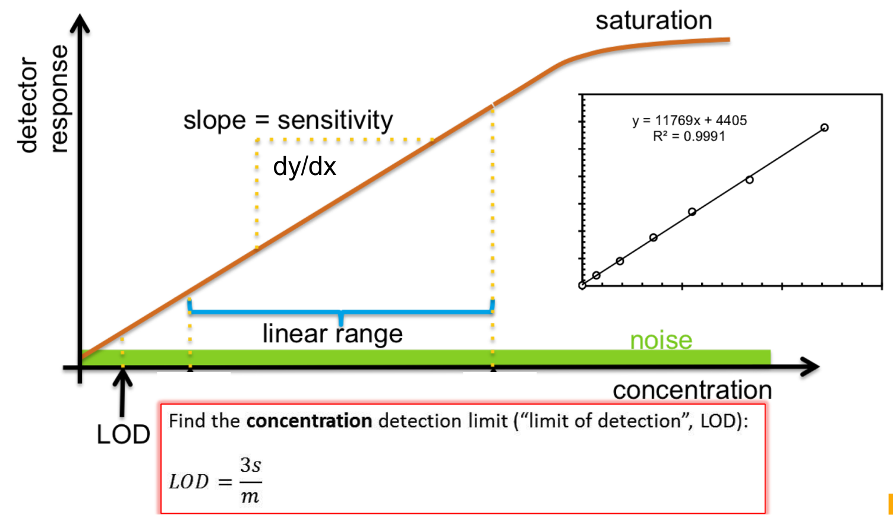
One calibration curve separates sensitivity, linear range, noise and LOD.用一张校准曲线区分灵敏度、线性范围、噪声与检出限。
ENRead the figure: Read concentration on the
horizontal axis and response on the vertical axis. The orange slope is
sensitivity; the blue bracket is the range where one constant slope is
useful. The green noise band explains why a small response may be
indistinguishable from the blank. With the course criterion LOD = 3σ/m,
a steeper slope or smaller blank noise lowers LOD; the saturated section
cannot use the same linear calibration.
P2 Important foundationsP2 重要基础Supporting concept辅助理解Lower priority降低优先级
Evidence and review target依据与学习抓手
Review target: Distinguish linearity, response time and reproducibility from sensitivity and LOD.学习抓手：认出线性度、响应时间、再现性，别把它们当灵敏度或LOD。
Supporting course concept课内辅助概念: W1 PDF p58–66; T1-0054–0061
三大指标的P1内容先学C02；这里补充其他性能词汇。
Lower-priority detail老师降低细节优先级: W1 PDF p65–66; T1-0061
“This slide is not important. This slide is just to show in the end how we can package the entire sensor into a product.”
仅降低就近整机封装页的优先级，不排除selectivity等性能。
ENKey points
Linearity describes how closely
output follows a straight calibration line.
Response time describes how
quickly output approaches its final value (95% in these slides).
Reproducibility describes agreement across repeated measurements.
Selectivity concerns interferents;
sensitivity is calibration slope;
LOD
combines slope with noise.
None of these terms alone means overall
accuracy.
中文必会知识点
Linearity线性度描述输出接近直线校准关系的程度；
response
time响应时间描述接近最终值的速度（课件取95%）；
reproducibility再现性描述重复测量的一致程度。
Selectivity选择性针对干扰物；
sensitivity灵敏度是校准斜率；
LOD兼顾斜率与噪声。
任何一个指标都不单独等于整体准确性。
ENStart from zero: A useful sensor needs more than
a large output. Linearity asks whether equal concentration increases
give approximately equal output increases over a stated range. Response
time asks how quickly the reading settles after the target changes.
Reproducibility asks how well repeated measurements agree under stated
conditions. These describe the shape, speed, and consistency of
measurement, so none can be substituted for another.
ENFollow the mechanism: Think of a bathroom scale.
It might repeatedly show the same wrong weight: good consistency, poor
accuracy. It might be accurate after a long wait: reasonable accuracy,
slow response. For the course's 95% response-time definition, the clock
stops when output reaches 95% of its final change, not necessarily when
all fluctuation disappears. A biosensor's delays also involve molecular
transport and reactions.
ENTry an example: Teaching example: a reading
starts at 0 and finally reaches 100 units. The 95% response point is 95
units. If a graph bends toward a plateau, use its straight region for
calibration rather than assuming constant sensitivity everywhere. When
asked which sensor is better, inspect the task: continuous monitoring
may favor speed, while detecting tiny amounts also needs low noise and
an appropriate slope.
“Many students will choose four. Because it seems to be rounded off closest to four, but it's wrong.”
只针对不可分割的整数计数；连续浓度结果不一律向上取整。
Worked example课堂/课件例题: Sample quiz p2 Q10; T7-0057–0060
这是样卷课堂讲解，不是独立课后作业。
ENKey points
In the sample graph, the linear
interval is 20–80 viruses: m=(700−100)/(80−20)=10 pF/virus.
With σ=14
pF, LOD=4.2 viruses.
The lecturer explicitly rejects 4 and chooses the
minimum integer count that reaches the threshold: 5, option B.
中文必会知识点
样题图线性区为20–80个病毒：m=(700−100)/(80−20)=10
pF/virus。
σ=14
pF时，LOD=4.2个病毒。
老师明确否定4，并选择达到阈值的最小整数数量：5，对应B。
ENStart from zero: The sample question measures a
number of viruses, so the final answer must be a whole number. However,
the LOD formula first gives a continuous threshold. A threshold of 4.2
viruses means the required signal corresponds to more than four viruses
under the stated model. Four is below that threshold, even though it is
numerically closer than five.
ENFollow the mechanism: Use only the straight part
of the graph to calculate slope. Here, output rises from 100 to 700 pF
while virus count rises from 20 to 80, giving m=600/60=10 pF per virus.
With background standard deviation σ=14 pF, the required output change
is 3σ=42 pF. Divide that change by the slope: 42/10=4.2 viruses.
ENTry an example: A helpful analogy is needing at
least 4.2 units of money: four whole coins cannot pay the bill; five
can. This is rounding upward to meet a minimum, not rounding to the
nearest integer. Keep 0.42 μM as 0.42 μM when concentration is
continuous. The sample uses the slope as a model near the threshold;
experimental validation would require checking that assumption.
ENExam wording: The previous guide incorrectly
used the nearest option, A=4. This edition corrects it to B=5. Round up
only when the question asks for a minimum detectable integer count; a
concentration LOD such as 0.42 μM stays continuous.
B04
· [P2] Light models, sources and coherence光的模型、光源与相干性
P2 Important foundationsP2 重要基础Teacher emphasis课堂强调
Evidence and review target依据与学习抓手
Review target: Choose ray, wave or photon models and compare laser/LED coherence, power and noise.学习抓手：知道三种光模型解决什么问题，并比较激光/LED的相干性、功率与噪声。
Teacher emphasis课堂明确强调: W2 PDF p14–28; T2-0014–0015; T2-0019–0027
“In summary, coherence, noise and output power.”
光子能量短算的最高优先内容单列S105；光源技术比较无明确Quiz承诺。
ENKey points
Rays describe paths, waves explain
interference/diffraction, and photons describe energy exchange.
Lasers
commonly offer narrower spectra and greater coherence than LEDs or
lamps;
CW means continuous-wave, while pulsed means time-separated
emission.
Coherence is a stable phase relationship.
Source power and
noise affect usable signal;
more power is not always better because
saturation or photodamage can occur.
中文必会知识点
Ray光线模型描述路径，wave波模型解释干涉/衍射，photon光子模型描述能量交换。
激光通常比LED或灯具具有更窄光谱和更高相干性；
CW为连续波，pulsed为脉冲发射。
Coherence相干性指稳定相位关系。
光源功率与噪声影响有效信号；
功率过大可能饱和或光损伤，并非越大越好。
ENStart from zero: Light can be described in
several useful ways. Rays trace where light travels and help explain
lenses. Waves have repeating peaks and help explain interference, where
waves combine, and diffraction, where light spreads around openings.
Photons describe small packets of energy exchanged with matter. These
are models for different questions, not three unrelated substances.
Choose the model that explains the measured effect.
ENFollow the mechanism: Coherence means a
sufficiently stable relationship between wave phases. Phase tells us
where a wave is within its repeating cycle. Compare people stepping
together: their steps have a predictable relationship. Light waves have
no intention, but a stable phase relationship makes interference
predictable. Lasers commonly have narrower wavelength ranges and greater
coherence than LEDs or lamps. This is a typical comparison, not a
guarantee for every device.
ENTry an example: Teaching example: interference
sensing needs suitable coherence, while fluorescence excitation needs an
appropriate wavelength and enough power. CW, continuous wave, means
sustained emission; pulsed means emission separated in time. More power
may increase a useful signal, but can also cause saturation or damage.
In questions, separate wavelength, timing, coherence, and power rather
than calling all of them simply 'stronger light'.
ENFor the wave E(z,t)=E₀ cos(ωt−kz), E₀ is field
amplitude, ω=2πf is angular frequency, and k=2π/λ is angular wavenumber.
Raman spectra commonly use the different wavenumber convention
ν_tilde=1/λ. Phase specifies position within an oscillation;
polarization describes electric-field orientation, not propagation
direction. Keep this k separate from a fluorescence rate constant also
called k.
ENSpatial coherence concerns the phase
relationship between different positions across a light field. Temporal
coherence concerns how long a predictable phase relationship persists
over time; a narrower spectrum commonly gives a longer coherence time.
They are independent aspects: the slide shows a superluminescent diode,
SLD, with relatively high spatial coherence and low temporal coherence.
Coherence is not simply equal brightness everywhere.
ENIntensity noise changes signal height;
wavelength or frequency noise moves its spectral position. The slides
distinguish quantum noise, including spontaneous-emission contributions,
from technical noise caused by pump/current fluctuations, temperature or
vibration. A source should have suitable coherence, sufficiently low
noise and adequate power. More power does not by itself correct
wavelength drift or prevent sample saturation. RIN stands for relative
intensity noise: it characterizes intensity fluctuations relative to the
source’s average optical power, not the mean power alone.
Source / 来源：Week 2 PDF p17, p23–28; T2-0010–0012, T2-0019–0027
S105
· [P1] Single-photon energy versus photon rate /
单光子能量与光子数量速率
P1 First passP1 先掌握Teacher emphasis课堂强调Worked example例题练习Final emphasis仅期末强调
Evidence and review target依据与学习抓手
Review target: Use E=hc/λ for one photon and Ṅ=P/E for photon rate.学习抓手：单光子能量用hc/λ，光子速率用P/E；别把功率当单光子能量。
Teacher emphasis课堂明确强调: W2 PDF p19–20; T2-0014–0015
“Keep in mind that the third model is the most important one. We will continue to use this down the road.”
明确强调光子模型，能量与光子数是后续荧光/双光子的基础。
Worked example课堂/课件例题: W2 PDF p80–81; T2-0101–0104
有光子数课堂题；简短关系优先，功率/面积/吸收率长综合题后读。
Final-exam emphasis仅期末考试强调: T2-0104
“This is a very typical exam type question.”
长综合示例为期末式exam type；不承诺Quiz复制同样长题。
ENOne photon has energy E=hc/λ. For N photons of
the same wavelength, total energy is NE. Power P is energy per second,
so photon arrival rate is N_dot=P/E=Pλ/(hc), with units photons/s.
Convert watts to J/s and wavelength to metres when using SI h and c. The
useful shortcut is E(eV)=1240/λ(nm); 1.24 is the coefficient when
wavelength is in micrometres. A photon also has momentum: in vacuum
p=h/λ. Longer wavelength gives smaller momentum per photon; transferring
photon momentum to matter produces radiation pressure.
ENAt 410 nm, E is about 4.84×10⁻¹⁹ J; 10 nW
therefore corresponds to about 2.07×10¹⁰ incident photons/s. At fixed
power, longer-wavelength photons have less individual energy, so more
photons arrive each second. Incident, absorbed and detected photon
counts are different: absorption probability, quantum yield and detector
efficiency can reduce the count at later stages.
Source / 来源：Week 2 PDF p19–20, p80–81; T2-0013–0015
ENClarify the concept: In the particle model, a
photon in vacuum also carries momentum p=h/λ. Absorption or reflection
can transfer momentum to an object, so light can exert pressure. At the
same vacuum wavelength, single-photon energy E=hc/λ and momentum p=h/λ
are different quantities; P/E gives photons per second, not
momentum.
Source / 来源：Week 2 PDF p19 (explicit Photon momentum and light
pressure); T2-0013–0015
B05 ·
[P2] Absorption, scattering and penetration吸收、散射与穿透
P2 Important foundationsP2 重要基础Repeated explanation反复讲解Lower priority降低优先级
Evidence and review target依据与学习抓手
Review target: Separate absorption from scattering and explain attenuation and NIR penetration.学习抓手：分清吸收与散射，解释直达光衰减和近红外相对深穿透。
Repeated explanation课堂反复讲解: W2 PDF p29–33, p44–46; T2-0028–0036; T2-0052–0055; T4-0004–0006
基础机制跨周复习；近红外有利于穿透并不代表零损耗。
Lower-priority detail老师降低细节优先级: W2 PDF p32–33; T2-0036
“You don't need to memorize these are constant.”
只是不背各材料系数表；系数含义、长度和衰减方向仍要理解。
ENKey points
Absorption transfers optical energy
to matter;
scattering redirects light.
Ballistic attenuation can include
both: μt=μa+μs.
Rayleigh and Mie scattering are elastic;
their regimes
depend on particle size relative to wavelength.
Raman scattering is
inelastic.
Tissue penetration depends on both absorption and scattering;
the near-infrared window is useful, but not loss-free.
中文必会知识点
Absorption吸收把光能传给物质；
scattering散射改变光的传播方向。
直达光衰减可同时包含两者：μt=μa+μs。
Rayleigh瑞利与Mie米氏散射都是弹性散射，其适用情形取决于颗粒相对波长的尺寸；
Raman拉曼为非弹性。
组织穿透取决于吸收与散射；
近红外窗口有利于穿透，但并非没有损耗。
ENStart from zero: If less light arrives straight
behind tissue, it does not follow that all missing light was absorbed.
Absorption transfers light energy to material. Scattering redirects
light, so some can leave sideways or backward instead of reaching the
straight-through detector. Ballistic light means light that follows the
original path without scattering. Its attenuation can include both
absorption and scattering: μt=μa+μs.
ENFollow the mechanism: Imagine a hallway: some
people stop inside rooms, while others turn into side passages. Both
reduce the number reaching the far end, but for different reasons. Here
μa describes absorption loss per distance and μs scattering loss per
distance. Rayleigh and Mie are elastic scattering regimes, meaning
photon energy is unchanged; particle size relative to wavelength
matters. Raman differs because it exchanges energy with molecular
vibrations.
ENTry an example: Teaching example: a cloudy
suspension can strongly reduce a narrow transmitted beam even without
strong absorption. A tissue's useful imaging depth therefore depends on
scattering as well as absorption. A near-infrared window offers
favorable losses for some tissues, not zero losses. If a question
equates all attenuation with absorption, check whether scattering is
being ignored. Scattered photons need not be destroyed.
Source / 来源：W2 PDF p29–33; W2 PDF p44–46; W2 PDF p55–62; W2 PDF
p61–64 | T2-0028–0036, T2-0052–0055, T2-0070–0082
S106
· [P2] Attenuation coefficients and characteristic distances /
衰减系数与特征距离
P2 Important foundationsP2 重要基础Repeated explanation反复讲解Lower priority降低优先级
Evidence and review target依据与学习抓手
Review target: Interpret μa+μs, inverse-length units and longer-path attenuation.学习抓手：会解释μa+μs、长度倒数单位、光程更长衰减更强。
Repeated explanation课堂反复讲解: W2 PDF p30–33; T2-0034–0036
老师反复解释长度与吸收/散射系数共同决定强度。
Lower-priority detail老师降低细节优先级: T2-0036
“Different material, different sample has different coefficient, which will be given you.”
不背材料系数表；不是不要理解衰减公式。
ENFor the directly transmitted, unscattered
component in a uniform sample, I(L)=I₀ exp[−(μ_a+μ_s)L]. The
coefficients have units of inverse length, such as cm⁻¹; multiplying a
coefficient by L gives a dimensionless exponent. Increasing either
coefficient or path length reduces this direct component. This model
does not describe every multiply scattered photon collected by every
detector.
ENThe slide interprets 1/μ_a and 1/μ_s as
characteristic mean distances for absorption and scattering,
respectively. For total direct-beam attenuation, 1/μ_t is the distance
at which I/I₀ falls to 1/e. It is a scale of exponential decay, not a
sharp border after which all light disappears. In R+A+T=1, A denotes an
absorbed fraction; it is not the logarithmic absorbance A of
Beer–Lambert notation.
Worked example课堂/课件例题: W2 PDF p41–43; T2-0048–0051
课堂/课件Example：换光程、15%透过率求ε；并非另有课后作业承诺。
Teacher emphasis课堂明确强调: W2 PDF p36–40; T2-0045–0047
“It should be fair that the comparison of your intensity before and after is under the same wave then.”
ASR wave then指wavelength；这是有效比较的关键条件。
ENKey points
Absorbance is A=−log₁₀(I/I₀)=εCL.
Transmittance is T=I/I₀, so A=−log₁₀T.
If C is in mol/L and L in cm, ε
must be in L mol⁻¹ cm⁻¹.
A=1 means 10% transmitted light;
A=2 means
1%.
中文必会知识点
吸光度A=−log₁₀(I/I₀)=εCL；
透射率T=I/I₀，所以A=−log₁₀T。
若C用mol/L、L用cm，ε必须用L
mol⁻¹ cm⁻¹。
A=1代表透过10%，A=2代表透过1%。
ENStart from zero: Shine light through a solution
and compare the light before and after it. I₀ is the incoming intensity
and I is the transmitted intensity. Transmittance T=I/I₀ is the fraction
that gets through. Absorbance A=−log₁₀T expresses that loss on a
logarithmic scale. Therefore, absorbance is not simply the percentage of
light absorbed; the two quantities use different scales.
ENFollow the mechanism: Beer–Lambert law says
A=εCL under its measurement assumptions. C is concentration, L is the
distance through the sample, and ε describes how strongly the substance
absorbs at the chosen wavelength. More absorbing molecules or a longer
path give light more opportunities to be absorbed. Think of walking
through a longer crowd, although molecules absorb light rather than
physically blocking it like people.
ENTry an example: Teaching example: T=0.1 gives
A=1. Doubling concentration or path length doubles A to 2, so T becomes
0.01, not zero. This multiplication of transmission losses is why the
logarithm is useful. Match units: concentration in mol/L and path in cm
require ε in L mol⁻¹ cm⁻¹. Strong scattering or unsuitable
concentrations can invalidate the simple absorption model.
ENClarify the concept: Beer–Lambert uses
A=−log₁₀T=εCL. The equivalent natural-exponential form is T=exp(−ε′CL),
with ε′=ln(10)ε≈2.303ε. The two coefficients are not numerically
identical. For the slide example A₁=0.35 at L₁=2 cm, changing only the
path to L₂=4.5 cm gives A₂=0.35×4.5/2=0.7875≈0.79; keep intermediate
precision before rounding.
Source / 来源：Week 2 PDF p38 and p41–42; numerical check
0.35×4.5/2=0.7875; T2-0041–0051
ENExam wording: The lecturer names A=εCL as a
short equation to remember for the closed-book Quiz. Absorbance is
dimensionless and is not the same as an absorbed fraction or a
current.
P2 Important foundationsP2 重要基础Teacher emphasis课堂强调Worked example例题练习
Evidence and review target依据与学习抓手
Review target: Read an absorption spectrum, choose a matched wavelength and understand the blank.学习抓手：会读吸收光谱、选匹配波长，解释为什么需要空白。
Teacher emphasis课堂明确强调: W2 PDF p34–40; T2-0045–0047
“You cannot compare under a different wave then.”
wave then为wavelength；与C04一起防止比较不同波长。
Worked example课堂/课件例题: W2 PDF p41–43; T2-0048–0051
例题和双光路示例说明blank/样品；最高优先计算在C04。
ENA monochromator selects a narrow wavelength
band: an entrance slit admits light, a dispersive element separates
wavelengths, and an exit slit selects the band sent through the sample.
A detector then measures transmitted light. A grating separates
wavelengths; a photodetector measures light; a sample holder supplies
the optical path. These components have different jobs.
ENCompare I and I₀ at the same wavelength. A
blank/reference containing the solvent and relevant background provides
a baseline so their contribution is not mistaken for target absorption;
a buffer is not universally transparent at every wavelength. The
coefficient ε depends on wavelength. At fixed wavelength and path
length, increasing concentration raises absorbance in the valid linear
range; different wavelengths can have different ε and peak heights.
ENClarify the concept: Typical spectroscopy
associations in the slide are: X-rays—core-electron transitions;
UV–visible—valence-electron transitions; infrared—molecular vibrations;
microwaves—molecular rotations; radiofrequency—electron or nuclear
spins. Use these to identify the kind of interaction being studied; they
are typical associations, not exclusive statements that each band has
only one possible interaction.
Source / 来源：Week 2 PDF p35 original spectroscopy diagram;
T2-0037–0040 explains different spectroscopy methods
Original slide / 原课件图
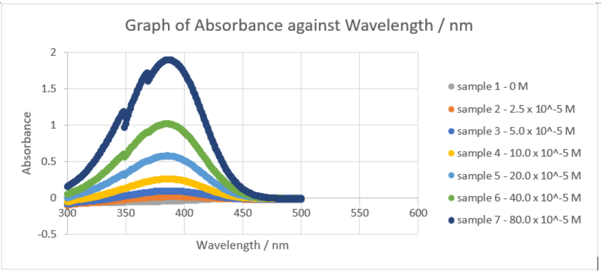
Absorption spectra at different concentrations: compare height at the same wavelength.不同浓度的吸收光谱：必须在同一波长处比较峰高。
ENRead the figure: The horizontal axis is
wavelength, not concentration; the vertical axis is absorbance A, not
transmitted intensity. Near the absorption peak, this sample gives a
larger signal than at the spectral tail. For the same analyte, path
length and wavelength, Beer–Lambert predicts A ∝ C in its valid range.
Selecting λmax can improve sensitivity, but interference and usable
absorbance range still matter; compare with a matched blank.
ENStart from zero: Hemoglobin is the
oxygen-carrying protein in red blood cells. Oxyhemoglobin carries
oxygen; deoxyhemoglobin has released it. Oxygen saturation describes the
fraction of available hemoglobin binding sites occupied by oxygen. A
pulse oximeter estimates this from light, commonly using red and
infrared wavelengths. It is not simply counting blood cells, measuring
total blood volume, or reading heart rate alone.
ENFollow the mechanism: The two hemoglobin forms
absorb the two wavelengths differently. The device compares their
changing optical signals. During each heartbeat, arterial blood volume
changes, creating a pulsatile component above a relatively steady
background from other tissue and blood. Focusing on this component helps
isolate the arterial contribution. Think of noticing a flashing light
against a steady lamp; measured time-varying signals help, without
removing every background effect.
ENTry an example: Teaching example: if only one
wavelength were measured, a weaker signal could reflect several causes,
including more blood or different oxygenation. Two wavelengths and the
pulse-related component provide more information for the calibrated
estimate. When recognizing the method, look for differential hemoglobin
absorption plus pulsation. You do not need the long saturation equation
to understand why both wavelengths and a time-dependent signal are
useful.
S108
· [P2] Pulse-oximeter geometry and absorption directions /
血氧仪布置与吸收方向
P2 Important foundationsP2 重要基础Teacher emphasis课堂强调Worked example例题练习Lower priority降低优先级
Evidence and review target依据与学习抓手
Review target: Read red/IR absorption directions and distinguish transmission from reflection geometry.学习抓手：读红光/近红外吸收方向，分清透射式和反射式布置。
Teacher emphasis课堂明确强调: W2 PDF p44–54; T2-0061–0069
“This is the most important part you need to understand, and this is also the working principle of a post oximeter.”
强调的是两物质在两波长吸收不同，不是医学阈值或长公式。
Worked example课堂/课件例题: W2 PDF p52–54; T2-0065–0067
需会从图读峰谷和题给系数；不能把一个示例方向扩大到所有波长。
Lower-priority detail老师降低细节优先级: T2-0063
“You don't need to memorize this. This is just to show how it is really calculated.”
只降低详细求解式的记忆优先级。
ENIn transmissive oximetry, source and detector
are on opposite sides, as in a finger clip. In reflectance oximetry,
they are on the same side and the detector collects returned light,
useful for sites such as the wrist. Both exploit wavelength-dependent
hemoglobin absorption; reflectance mode does not mean that absorption is
irrelevant.
ENFor the common red/infrared comparison near
660/940 nm, deoxyhemoglobin absorbs red light more strongly than
oxyhemoglobin, while the taught infrared comparison reverses that
tendency. The pulse-related components at both wavelengths are compared
to estimate arterial saturation. Oxygen saturation is C_ox/(C_ox+C_de);
total hemoglobin is C_ox+C_de. Saturation and total concentration are
distinct.
ENThe near-infrared tissue window reflects a
favorable balance of absorption and scattering. It does not provide
unlimited penetration: scattering blurs spatial detail, and strong water
absorption at other infrared wavelengths can increase loss. The long
pulse-oximetry equation is lower priority; ratios and logarithms of
intensity ratios are dimensionless, even though the slide solution
prints nm beside them.
ENClarify the concept: At an isosbestic
wavelength, the two hemoglobin forms have equal extinction coefficients:
in the ideal two-component model, absorption then depends on their total
concentration rather than their oxygenation ratio.
Source / 来源：Week 2 PDF p44–46, p49–52; p46 original hemoglobin
absorption curves; T2-0052–0069
Original slide / 原课件图
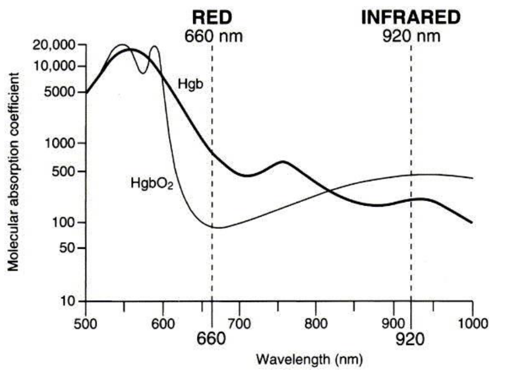
Oxyhemoglobin and deoxyhemoglobin absorb red and infrared light differently.氧合与脱氧血红蛋白对红光、红外光的吸收不同。
ENRead the figure: At 660 nm, follow the dashed
line upward: deoxyhemoglobin (Hgb) absorbs more than oxyhemoglobin
(HgbO₂). Near the infrared marker, their ordering reverses. Two
wavelengths therefore help distinguish their contributions. This
original plot marks 920 nm; the typical pulse-oximeter pair described on
p52 is 660/940 nm. These curves show absorption coefficients, whereas
actual pulse oximetry uses the pulsatile signal and calibration rather
than reading saturation directly from one curve.
ENStart from zero: A photon is a small packet of
light energy. In fluorescence, a molecule absorbs a photon and
temporarily gains energy. It can then release a new photon as it returns
to a lower-energy state. Excitation names the incoming light that starts
the process; emission names the light produced afterward. They are
different stages, rather than the same beam simply bouncing back.
ENFollow the mechanism: Usually, some energy is
lost to molecular motion before emission. The emitted photon therefore
has less energy. Because photon energy is inversely related to
wavelength, less energy means a longer wavelength: the usual Stokes
shift. A staircase analogy helps: the molecule first goes up, steps down
a little without shining, and then comes down while emitting light. The
levels are not literal physical stairs.
ENTry an example: Teaching example: blue
excitation can produce green emission. An emission filter helps block
strong excitation light so the weaker fluorescence can be seen. In an
incorrect-statement question, check whether longer wavelength has
wrongly been called higher energy. Fluorescence may come from an added
dye or naturally fluorescent material. Thus, the fluorescence mechanism
itself does not always require an artificial label.
ENExam wording: If a question asks for the wrong
statement, check the direction of wavelength and energy carefully.
Two-photon excitation combines two lower-energy photons; it does not
mean two individually higher-energy photons.
ENA fluorescence microscope needs a light source
capable of exciting the fluorophore: its output must overlap a usable
absorption/excitation band and provide sufficient light. This source can
be a suitable lamp, LED or laser; it need not always be a laser. A
source at a wavelength the dye cannot absorb will not produce the
expected fluorescence merely because it is bright.
ENIn the usual epi-fluorescence filter cube, the
excitation filter passes the desired excitation band. The dichroic
mirror reflects that shorter-wavelength excitation toward the objective
and sample, but transmits the longer-wavelength fluorescence toward the
detector. The emission filter then passes the desired emission band and
rejects remaining excitation/background. A dichroic mirror sorts
wavelengths by reflection versus transmission; it is not just an
ordinary mirror reflecting every color equally.
ENFor a simple separated-band example with
excitation near 480 nm and emission near 530 nm, a suitable
cutoff/transition between them allows the mirror to reflect excitation
and transmit emission. This is why sample option B is reasonable. Real
absorption and emission are bands, so filter choice considers their
widths, overlap and transition region, not merely two exact numbers. B
and C explain optical design; D is wrong because two-photon excitation
uses two individually lower-energy photons, and higher spatial
resolution is not automatic.
Source / 来源：Week 2 PDF p77; original slide figure / 原课件截图
S111
· [P1] Fluorescence readouts: intensity, color, ratio and lifetime /
荧光读出：强度、颜色、比值与寿命
P1 First passP1 先掌握Sample Q1样卷Q1Supporting concept辅助理解
Evidence and review target依据与学习抓手
Review target: Explain Q1 A: fluorescence can report intensity or colour; distinguish ratio/lifetime readouts.学习抓手：解释Q1 A：可用强度或颜色变化读出；比值/寿命是另外的读出方式。
Sample quiz Q1 (A)样卷Q1 (A): Sample quiz Q1 (A)
“可以这样测”不等于每个荧光器件必须变色。
Supporting course concept课内辅助概念: W1 PDF p50–51; W2 PDF p79, p89–92; W3 PDF p8–12; T2-0009; T2-0099–0101
样卷优先焦点是intensity/color；比值和寿命读出先认词义即可。
ENFluorescence intensity means how much emission
is detected: a sensor may turn on, turn off, become brighter or become
dimmer. Color/wavelength readout instead tracks where the emission
spectrum is located or how different color channels are distributed.
These can change independently. A greener-looking image does not
necessarily contain more total photons, and a brighter signal need not
have a shifted emission peak.
ENA fluorescence array has many sensing spots or
channels. Responses across the array can be expressed as intensity
changes, color changes, or a pattern of both, depending on the probe
design. This explains why sample option A is correct as a statement of
possible readouts. It does not mean every fluorescence sensor must
change color, or that all spots identify targets without recognition
chemistry and calibration.
ENA ratiometric probe compares two measured
channels, for example I₁/I₂, instead of using one intensity alone; the
ratio can reduce some shared intensity variations when the reference
channel behaves suitably. Lifetime readout measures decay after
excitation rather than just total brightness. For a spectrum, read the
wavelength of the emission peak to identify emitted color; the
excitation color is not the emitted color.
Source / 来源：Week 1 PDF p50–51; Week 2 PDF p79, p89–92; Week 3 PDF
p8–12; T2-0009, T2-0099–0101; Sample quiz p1 Q1 A
Original slide / 原课件图
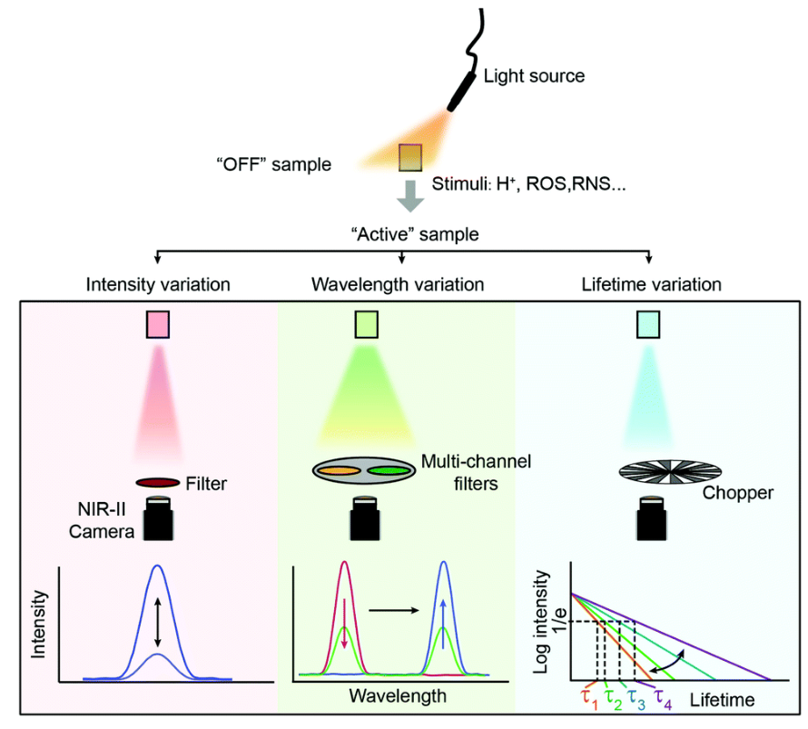
Different fluorescence outputs: intensity, wavelength and lifetime (original lecture slide).不同荧光输出：强度、波长与寿命（原课件）。
ENRead the figure: The left diagram compares
intensity variation, wavelength variation and lifetime variation. Look
for peak height, peak position and decay with time respectively; these
are different observables, not three names for one quantity.
ENStart from zero: Luminescence means light
produced through an excited-state process rather than simply because an
object is hot. The energy can come from absorbed light, giving
photoluminescence, or from a chemical reaction, giving
chemiluminescence. Bioluminescence is chemical light production in a
biological system. Fluorescence and phosphorescence are forms of
photoluminescence distinguished by the states and transitions involved,
not just by the visible color.
ENFollow the mechanism: An energy-level diagram
labels S0 as the ground singlet state, S1 as a higher singlet state, and
T1 as a triplet state. Singlet and triplet describe quantum spin
arrangements, not the number of emitted photons. Fluorescence commonly
returns from S1 to S0. Phosphorescence involves a triplet route that is
usually slower. Internal conversion loses energy without light within
one multiplicity; intersystem crossing changes multiplicity.
ENTry an example: Teaching example: glow remaining
after excitation stops may suggest a slower phosphorescent route, but
identify the actual mechanism rather than assuming every afterglow is
phosphorescence. A chemical glow needs chemical energy instead of an
excitation lamp. In diagrams, arrows downward do not all mean light
emission: some indicate nonradiative relaxation. Follow how energy
enters, where it moves, and which step actually releases a photon.
Source / 来源：W2 PDF p69–76; W2 PDF p77–79; W2 PDF p82–88 |
T2-0088–0100, T2-0105–0107
Original slide / 原课件图
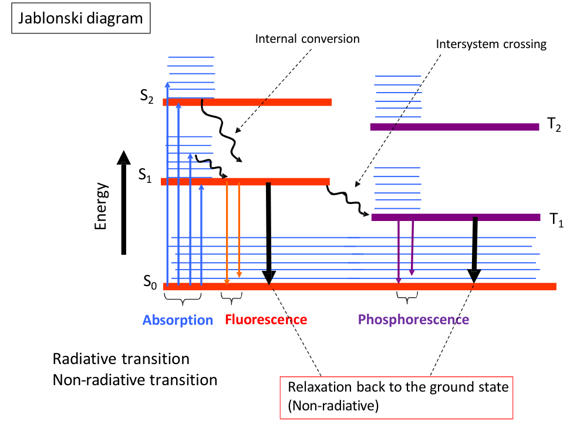
Jablonski diagram: distinguish absorption, fluorescence, phosphorescence and non-radiative loss.Jablonski能级图：区分吸收、荧光、磷光与非辐射损失。
ENRead the figure: Blue upward arrows mean
absorption; orange downward arrows from S₁ to S₀ mean fluorescence.
Before emission, some excitation energy can be lost without producing a
photon, explaining the usual lower-energy, longer-wavelength
fluorescence. Intersystem crossing transfers population to a triplet
state T₁; purple T₁→S₀ emission is phosphorescence. Black return paths
produce no emitted photon. The vertical axis is energy: an upward arrow
is not a longer wavelength.
Worked example课堂/课件例题: W2 PDF p82–88; T2-0105–0107; T7-0054
课堂做亮度和速率短式题；以课件公式为准，口述half及乘法存在不一致。
Teacher emphasis课堂明确强调: T2-0107
“These are the two important property where people talk about if flocen is good or if a flocen is not good.”
两属性为lifetime和quantum yield；跳过相似Example 8不代表排除模型。
ENKey points
Quantum yield Φ is emitted photons
divided by absorbed photons.
With total non-radiative rate kₙᵣ,
τ=1/(kᵣ+kₙᵣ), Φ=kᵣτ and kᵣ=Φ/τ.
Fluorescence brightness also depends on
absorption, commonly through εΦ in the course examples.
中文必会知识点
量子产率Φ是发射光子数除以吸收光子数。
非辐射总速率为kₙᵣ时，τ=1/(kᵣ+kₙᵣ)、Φ=kᵣτ、kᵣ=Φ/τ。
本课程示例中亮度还受吸收影响，常用εΦ表示。
ENStart from zero: An excited molecule has more
than one way to lose energy. It can emit a photon, a radiative route, or
lose energy without light, a nonradiative route. Quantum yield Φ is the
fraction of absorbed photons that lead to emitted photons. Lifetime τ
describes how quickly a population of excited molecules decays; it is
not how long the dye remains usable in a bottle.
ENFollow the mechanism: Imagine two exits from a
room: a light-producing exit and a dark exit. Their rates, kᵣ and kₙᵣ,
add because both empty the excited population. Hence τ=1/(kᵣ+kₙᵣ), and
Φ=kᵣ/(kᵣ+kₙᵣ)=kᵣτ. Faster total escape shortens lifetime. The analogy
describes competing probabilities; a molecule does not choose an exit
deliberately. The rates have units of inverse time, such as s⁻¹.
ENTry an example: Teaching example: 100 photons
arrive, 20 are absorbed, and 12 are emitted. Φ=12/20=0.60, not 12/100.
If τ=12 ns, kᵣ=0.60/12=0.05 ns⁻¹=5×10⁷ s⁻¹. Lifetime is the time to
reach 1/e of the initial population in this model, not the half-life.
Brightness also depends on how many photons are absorbed, so yield alone
does not determine total brightness.
ENExam wording: Do not use all incident photons as
the denominator unless all are absorbed. Lifetime is an exponential 1/e
decay time, not automatically a half-life. Convert ns and s
consistently.
Fluorescence lifetime: competing exit rates on the left, decay after a pulse on the right.荧光寿命：左边看激发态离开路径，右边看脉冲后衰减。
ENRead the figure: From S₁, the molecule may emit
through kᵣ or leave without fluorescence through k₁ and k₂; these
competing routes together set its fluorescence lifetime. On the right, a
short excitation pulse is followed by a fast or slow emission decay. In
the single-exponential model, I(t)=I₀e⁻ᵗ/τ and τ=1/(kᵣ+kₙᵣ), with
kₙᵣ=k₁+k₂ here. Longer τ means slower decay; at τ the intensity is I₀/e,
not I₀/2. A long lifetime alone does not prove a high quantum yield.
Source / 来源：Week 2 PDF p82; original slide figure / 原课件截图
Teaching diagram / 教学示意
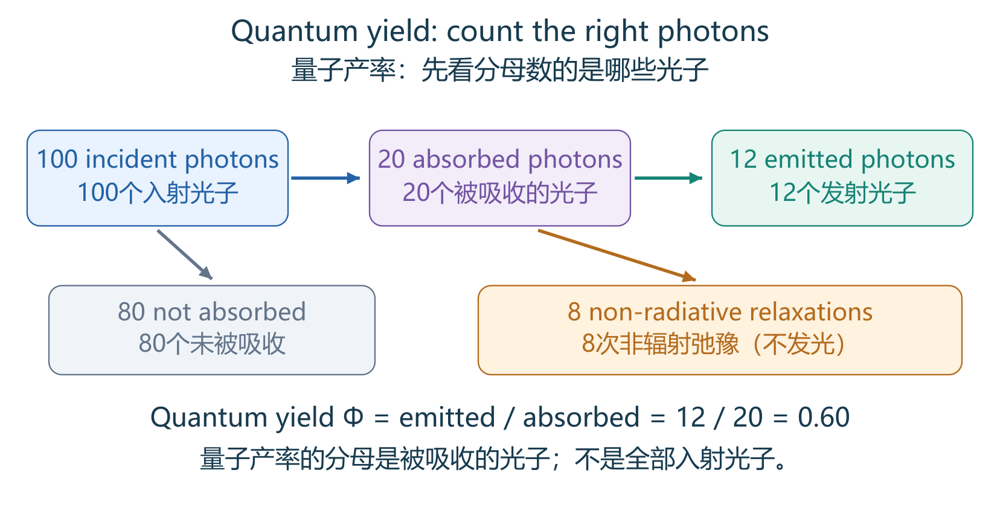
Quantum yield: count the right photons量子产率：先看分母数的是哪些光子
ENRead the figure: This is a made-up counting
example. Of 100 incoming photons, only 20 are absorbed; 12 of those
events produce fluorescence and 8 relax without light. Thus Φ = 12/20 =
0.60. The ratio 12/100 also includes losses before absorption and is not
the fluorescence quantum yield.
ENA dye’s fluorescence can depend on solvent and
local environment. The slide compares spectra in two solvents, so one
dye need not have an identical emission peak in every condition.
Concentration-dependent self-quenching is one reason that adding dye
does not always increase intensity proportionally. Quenching reduces
fluorescence through competing processes; photobleaching refers to
light-induced chemical damage or loss of the fluorophore. Both can dim a
signal, but they are not the same mechanism. Control concentration,
solvent, excitation and detection conditions when comparing samples.
ENIn the simple competing-rate model, if k_nr
increases while k_r is fixed, τ=1/(k_r+k_nr) and Φ=k_r/(k_r+k_nr) both
decrease. For Φ=0.80 and τ=8 ns, k_r=0.10 ns⁻¹; the total rate is 0.125
ns⁻¹ and k_nr=0.025 ns⁻¹. Quantum yield, radiative rate, total decay
rate and measured brightness are related but different quantities.
Brightness εΦ applies to a specified excitation wavelength and
comparable conditions.
Source / 来源：Week 2 PDF p79, p82–86; Week 3 PDF p8; T2-0099–0100,
T2-0105–0107
C07
· [P1] Raman, Rayleigh, Stokes and anti-Stokes /
拉曼、瑞利、斯托克斯与反斯托克斯
P1 First passP1 先掌握Sample Q2样卷Q2Repeated explanation反复讲解Teacher emphasis课堂强调
Evidence and review target依据与学习抓手
Review target: Compare Rayleigh/Raman and the energy/wavelength directions of Stokes/anti-Stokes.学习抓手：会比较瑞利/拉曼，判断Stokes/anti-Stokes的能量与波长方向。
Sample quiz Q2 (E)样卷Q2 (E): Sample quiz Q2 (E)
Raman是振动相关非弹性散射，不是题目问的光学共振器。
Repeated explanation课堂反复讲解: W2 PDF p55–68; T2-0070–0087; T4-0004–0007; T7-0052
概念跨周复习；拉曼过程不能误写成荧光吸收后延时发射。
Teacher emphasis课堂明确强调: T2-0080
“Please differentiate the difference between these two.”
就近指散射时能量/频率保持或变化的区别。
ENKey points
Rayleigh scattering is elastic:
scattered photon energy is unchanged.
Raman scattering is inelastic and
reports molecular vibrations.
Stokes Raman light has lower energy and
longer wavelength;
anti-Stokes has higher energy and shorter wavelength.
Raman shift is usually expressed in cm⁻¹.
中文必会知识点
Rayleigh
scattering是弹性散射，光子能量不变。
Raman
scattering是非弹性散射，反映分子振动。
Stokes
Raman能量更低、波长更长；
anti-Stokes能量更高、波长更短。
拉曼位移常用cm⁻¹。
ENStart from zero: Scattering means light leaves
in a changed direction after interacting with matter. In Rayleigh
scattering, the outgoing photon keeps its energy; this is called elastic
scattering. In Raman scattering, the photon exchanges energy with a
molecular vibration, so its energy changes. Molecules have different
vibration patterns, making a Raman spectrum useful as a chemical
fingerprint rather than just a brightness measurement.
ENFollow the mechanism: For Stokes Raman
scattering, the photon gives some energy to a vibration and leaves with
lower energy and longer wavelength. For anti-Stokes scattering, a
vibration already carrying energy gives some to the photon, which leaves
with higher energy and shorter wavelength. Think of an energy trade
between light and vibration. This differs from fluorescence, which
involves absorption and subsequent emission from an excited electronic
state.
ENTry an example: Teaching example: use one laser
and observe an unchanged-energy peak plus shifted peaks. The unchanged
peak is Rayleigh; shifted vibrational peaks are Raman. Surface-enhanced
Raman scattering (SERS) uses nearby metal nanostructures to strengthen
these Raman signals. Recognize the measured signal: vibrational shifts
mean Raman, whereas a changed resonance position means resonance
sensing. Plasmonic enhancement does not make SERS an optical-cavity
measurement.
ENExam wording: Fluorescence and Raman are
different mechanisms. In the sample resonator question, Raman is the
clearest non-resonance-sensing option. SERS means surface-enhanced Raman
spectroscopy; the metal nanostructure enhances the Raman signal.
Source / 来源：W2 PDF p55–62; W2 PDF p65–68; W3 p88–94 |
T2-0070–0078, T2-0083–0087, T4-0007–0013
S109
· [P2] Why Raman is different from fluorescence /
拉曼为什么不同于荧光
P2 Important foundationsP2 重要基础Repeated explanation反复讲解Lower priority降低优先级
Evidence and review target依据与学习抓手
Review target: Explain a virtual-state vibration exchange versus a real excited-state fluorescence process.学习抓手：分清拉曼振动能交换与荧光真实激发态后发射过程。
Repeated explanation课堂反复讲解: W2 PDF p58–62, p94; T2-0079–0082; T4-0004–0007; T7-0052
该比较支撑P1 C07；虚能级图细节在理解能量方向后再看。
Lower-priority detail老师降低细节优先级: T2-0081
“I'm not going to talk about the history of Raman, you can search for it if you're interested.”
只降级历史和名字来源，不降级能量交换。
ENFluorescence absorbs light into a real
electronic excited state and then emits after an excited-state interval.
The usual Raman diagram instead uses a virtual intermediate state:
scattered light exchanges energy with molecular vibration without
populating that real fluorescence state. Thus Raman does not require the
laser to match an allowed electronic absorption transition in the same
way. It is not simply delayed fluorescent light.
ENPolarizability describes how an electric field
distorts a molecule’s electron distribution. A vibration is Raman-active
when it changes polarizability. Bonding and molecular environment
determine vibration frequencies, producing a fingerprint. Raman is
normally much weaker than Rayleigh scattering; an instrument must
separate the strong unshifted light from weak shifted lines. Rayleigh
and Mie are elastic scattering regimes, whereas Stokes and anti-Stokes
Raman exchange vibration energy.
ENStart from zero: A spectrum can use wavelength,
frequency, or wavenumber on its horizontal axis. Wavelength is the
distance between repeating wave features. Frequency counts oscillations
per second. Wavenumber is inverse wavelength; cm⁻¹ means reciprocal
centimeters, not centimeters. These axes describe related properties,
but their numbers cannot be subtracted as if they were the same unit.
Raman shift measures a difference in wavenumber from the excitation
light.
ENFollow the mechanism: Because 1 nm equals 10⁻⁷
cm, a wavelength written in nm has wavenumber 10⁷/λ in cm⁻¹. For Stokes
scattering, subtract the emitted wavenumber from the excitation
wavenumber: Δν̃=10⁷(1/λexc−1/λS). Here λexc is excitation wavelength and
λS the Stokes wavelength, both in nm. The symbol ν̃ represents
wavenumber, not ordinary frequency. Taking reciprocals is essential
before subtracting.
ENTry an example: Teaching example: 1000 nm
excitation has wavenumber 10000 cm⁻¹; 1080 nm emission has about 9259
cm⁻¹. The Stokes shift is about 741 cm⁻¹, not 80 cm⁻¹. The number 80 is
the wavelength difference in nm. A longer Stokes wavelength means lower
photon energy. For anti-Stokes light the direction reverses; check the
question's sign convention if a signed shift is requested.
Worked example课堂/课件例题: T7-0054–0055; W2 PDF p35 (structure only)
W2 p35只提供光谱仪结构背景，不能声称给出的W2课件有300/1200比较图。
ENKey points
For the same illuminated width and
diffraction order, a higher groove density illuminates more grooves N.
Resolving power R=λ/Δλ=mN increases, and the minimum resolvable
wavelength difference Δλ decreases.
Thus 1200 lines/mm resolves more
closely spaced lines than 300 lines/mm under these assumptions.
中文必会知识点
在受照宽度与衍射级次相同的条件下，刻线密度更高使受照刻线数N增加。
分辨本领R=λ/Δλ=mN增大，最小可分辨波长差Δλ减小。
因此在这些假设下，1200
lines/mm比300 lines/mm能分开更接近的谱线。
ENStart from zero: White light contains many
wavelengths. A diffraction grating is a surface with many regularly
spaced grooves that sends different wavelengths toward different
directions. This lets a spectrometer separate colors and measure a
spectrum. Spectral resolution asks whether two nearby wavelengths can be
seen as two distinct lines. It is different from microscope resolution,
which asks whether two nearby objects can be separated in space.
ENFollow the mechanism: Each illuminated groove
contributes a wave. Their combined interference makes
wavelength-selective bright directions; more contributing grooves can
make those features sharper. The ideal relation is R=λ/Δλ=mN: λ is the
measured wavelength, Δλ the smallest separable difference, m the
diffraction order, and N the illuminated groove count. Grooves outside
the light beam do not count. Here m does not mean calibration slope.
ENTry an example: Teaching example: a 5 mm
illuminated width covers 1500 grooves at 300 lines/mm, but 6000 grooves
at 1200 lines/mm. With the same order, the second grating has four times
the ideal resolving power and one-quarter the minimum Δλ. Thus larger R
and smaller Δλ both mean better separation. Real spectrometers also
depend on slit width and detector sampling, so preserve the comparison
assumptions.
ENExam wording: The lecturer explicitly revisits
this comparison as a Quiz item. Higher resolving power and smaller Δλ
both describe better resolution. The 300/1200 example is anchored to the
Week 5 oral review, not an invented Week 2 slide page.
Labelled sensing attaches a reporter
such as a fluorescent dye.
Label-free sensing detects an intrinsic
change such as absorption, refractive index, or resonance shift without
adding that reporter.
In the sample classification, fluorescence
intensity is treated as a labelled method.
中文必会知识点
有标记传感添加荧光染料等报告物。
无标记传感不添加这种报告物，而测量吸收、折射率或共振位移等内在变化。
样题分类把fluorescence
intensity视为有标记方法。
ENStart from zero: Many biological targets do not
produce an easily visible signal by themselves. A label is an added
reporter, such as a fluorescent dye attached to an antibody. It helps
reveal where the target is or how much is present. Labelled sensing
reads that reporter. Label-free sensing instead reads a property change
caused by the target without adding that kind of reporter.
ENFollow the mechanism: Imagine locating a guest
by a colored badge versus noticing their weight on a floor sensor. The
badge is a reporter; the weight is an intrinsic effect. In an optical
label-free sensor, surface binding can change refractive index, meaning
how light propagates through the local material. A light source measures
that change. Thus label-free does not mean light-free, antibody-free, or
surface-free.
ENTry an example: Teaching example: adding a
fluorescent antibody and measuring its glow is labelled sensing.
Measuring a resonance shift after unlabelled molecules bind can be
label-free sensing. First identify whether a separate reporter was
added, then identify the measured signal. Some substances naturally
fluoresce, called autofluorescence, so do not claim all fluorescence is
labelled. The sample classification concerns its taught dye-based
fluorescence example.
ENExam wording: Label-free does not mean no
illumination, no biological recognition, or no sensor surface.
Autofluorescence exists, so the course classification should not be
turned into an absolute claim about every fluorescence measurement.
Teacher emphasis课堂明确强调: W3 PDF p15–18; T3-0021–0029
“This slide is very, very important.”
强调课堂共振型参考谱主线；固定波长强度读出也可无标记，自发荧光例外保留。
ENLabel-free optical sensing may detect direct
absorption, refractive-index change, or a shift of resonance
wavelength/frequency caused by the target. The index change is a
property change; wavelength/frequency shift is one possible instrument
readout of that change. At fixed medium convention, a shift toward
longer wavelength corresponds to lower frequency. A sensor can also
monitor intensity at a selected point on the shifting response
curve.
ENIn sample Q3, B absorption, C refractive index,
D wavelength and E frequency can therefore be related to label-free
principles. A fluorescence intensity refers to the taught added-dye
reporter and is the intended exception. This classification does not say
that every intensity measurement is labelled, or that autofluorescence
is impossible. “No label” means no added reporter of that kind, not no
light, no excitation, or no antibody receptor.
ENStart from zero: A quantum dot is a very small
semiconductor particle that can fluoresce. Confinement at this size
changes the available electronic energies, so particle size can affect
emitted color. Within a comparable material family, larger dots commonly
emit longer wavelengths. Flow cytometry is a separate method: it passes
cells or particles through a detection region and measures each event,
often using light scattering and fluorescence.
ENFollow the mechanism: Imagine cells passing a
checkpoint one by one. Forward scatter, FSC, mainly provides information
related to size. Side scatter, SSC, relates to internal complexity or
granularity. Fluorescent labels can indicate particular molecules.
Optical setup and cell properties also affect these signals; FSC is not
a perfect ruler and SSC is not a complete picture of the cell
interior.
ENTry an example: Teaching example: a scatter plot
places each measured cell according to its FSC and SSC values; clusters
can suggest different populations. Adding a fluorescent antibody
supplies another measurement for the matching target. This plot is not a
tissue image showing neighboring cell positions. If asked which signal
reports labelled molecular information, choose fluorescence; if asked
which mainly relates to size, choose FSC, with the stated
approximation.
Review target: Recognize the size–emission trend of quantum dots and compare labels qualitatively.学习抓手：认得同材料量子点变大通常发射变红，定性比较染料即可。
Supporting course concept课内辅助概念: W3 PDF p6–9; T3-0003–0007
课堂标记应用介绍；不要求背某种材料的尺寸、寿命或优胜数值。
ENWithin a comparable quantum-dot material family,
smaller dots have a larger band gap and tend to emit shorter-wavelength
light; larger dots tend to emit longer wavelengths. Different sizes can
supply different emission colors. Many dot colors can be excited by one
suitable shorter-wavelength source whose photon energy is sufficient for
their absorption bands, simplifying multicolor detection. This does not
mean any source excites every dot.
ENThe course comparison presents quantum dots as
potentially brighter and more photostable than its molecular-dye
examples, with more distinguishable color channels. Photostability means
maintaining performance under illumination; it is not the same as
excited-state lifetime. Such advantages can help reproducibility and
multiplexing, but actual yield and stability depend on material and
conditions: do not memorize the example percentages as universal values
for every dye or quantum dot.
Quantum-dot size changes the bandgap and therefore the emission color.量子点尺寸改变带隙，进而改变发光颜色。
ENRead the figure: Align each dot along the bottom
with its bandgap above. For the same semiconductor family, a smaller
nanocrystal generally has a larger bandgap and emits a higher-energy,
shorter-wavelength photon; a larger one shifts toward longer
wavelengths. The arrows point left toward increasing wavelength and size
in this original figure, so check the axis direction. The core–shell
drawing shows structure, not two separate colors that must both be
emitted.
A conventional guiding fiber has a
higher-index core and lower-index cladding.
Total internal reflection
requires light travelling from higher to lower refractive index and an
incidence angle above the critical angle.
Point sensing measures
locally;
multiplexed sensing uses several sites;
distributed sensing
reads along the fiber.
中文必会知识点
常规导光光纤的纤芯折射率高于包层。
全内反射要求光从高折射率介质到低折射率介质，且入射角大于临界角。
Point
sensing在局部测量；
multiplexed sensing有多个位置；
distributed
sensing沿光纤分布测量。
ENStart from zero: An optical fibre carries light
along a thin core surrounded by cladding. Refractive index describes a
material's effect on light propagation; a larger index means a lower
phase speed than in vacuum. In a conventional guiding fibre, the core
has the higher index. The boundary can keep suitable light inside
through total internal reflection, allowing it to travel around gentle
bends.
ENFollow the mechanism: Total internal reflection
needs two conditions: light approaches the boundary from the
higher-index side, and its incidence angle exceeds the critical angle.
The incidence angle is measured from the normal, a line perpendicular to
the surface. Think of repeated boundary reflections guiding a beam, but
remember the wave field is not perfectly confined: an evanescent field
extends a short distance outside and decays rapidly.
ENTry an example: Teaching example: molecules near
an exposed sensing section can interact with the evanescent field and
change the optical signal. A question saying that all external fields
vanish under total internal reflection is therefore wrong. Point sensing
measures one location; multiplexed sensing reads several separate sites;
distributed sensing provides information along the fibre. These describe
where measurements occur, not whether the target is biologically
specific.
ENExam wording: An evanescent field outside the
guiding region can interact with the surrounding sample. Total internal
reflection does not mean the electromagnetic field is exactly zero
outside the core.
P2 Important foundationsP2 重要基础Teacher emphasis课堂强调Worked example例题练习Final emphasis仅期末强调
Evidence and review target依据与学习抓手
Review target: Calculate a critical angle or fibre NA and distinguish internal from acceptance angle.学习抓手：会临界角/光纤NA短算，分清界面入射角和外部接受角。
Teacher emphasis课堂明确强调: W3 PDF p20–24; T3-0030–0038
“This is very, very important. This is the foundation of how a fiber works.”
最高优先的TIR条件在C10；本节补公式和角度约定。
Worked example课堂/课件例题: W1 PDF p86
W1所展示为全学期的期末样题，不是W1课后作业；不因此把长题当Quiz形式。
Final-exam emphasis仅期末考试强调: T2-0001
老师明确W1展示的past exam questions需学完整学期再答。
ENSnell’s law is n₁ sinθ₁=n₂ sinθ₂; angles are
measured from the normal. Entering a higher-index medium bends a ray
toward the normal; entering a lower-index medium bends it away. For
n₁>n₂, the critical angle satisfies sinθ_c=n₂/n₁. At θ_c the ideal
transmitted ray is tangent to the interface; angles above it give total
internal reflection. With n₁=1.6 and n₂=1.38, θ_c is about 59.6°.
ENThe fibre’s external acceptance angle is
different from the internal incidence angle at the core–cladding wall.
For an ideal step-index fibre, NA=n₀ sinθ_accept=√(n_core²−n_cladding²),
where θ_accept is the maximum accepted half-angle and n₀ the outside
index. A larger NA accepts a wider cone. Use the right indices and angle
definition; the refractive index of a lens is not automatically the
index to insert in a fibre formula.
Source / 来源：Week 3 PDF p20–24; Week 1 PDF p86; T3-0030–0041
Original slide / 原课件图
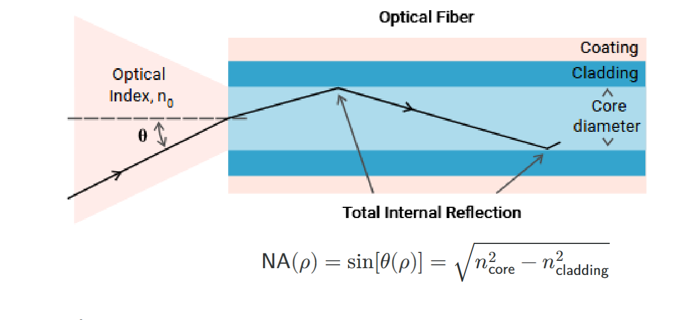
Fibre acceptance angle and numerical aperture (original lecture slide).光纤接受角与数值孔径（原课件）。
ENRead the figure: The marked entry angle is an
external acceptance half-angle. The internal reflection angle at the
core–cladding boundary is measured from that boundary’s normal; do not
interchange the two. The equation printed on this slide assumes entry
from air (n₀≈1); in general NA=n₀ sinθ_accept.
Source / 来源：Week 3 PDF p23; original slide figure / 原课件截图
S115
· [P1] Evanescent sensing is confined near an interface /
倏逝传感局限在界面附近
P1 First passP1 先掌握Sample Q9样卷Q9Repeated explanation反复讲解
Evidence and review target依据与学习抓手
Review target: Explain why an evanescent field senses molecules near the interface rather than far away.学习抓手：解释倏逝场为什么只对靠近界面的分子敏感，远处场会衰减。
Sample quiz Q9 (A)样卷Q9 (A): Sample quiz Q9 (A)
近界面场及其空间范围是正确选项涉及的概念。
Repeated explanation课堂反复讲解: W3 PDF p25–29; T3-0042–0050
近场→结合改变折射率→光谱响应的链条；不要背ASR错误距离。
ENAn evanescent field extends into the lower-index
side of a totally reflecting interface and decays rapidly away from it.
In the slide’s intensity model, I(d)/I(0)=exp(−d/L₀). At one intensity
decay length L₀, intensity is about 37% of its boundary value; at two it
is about 14%. Amplitude and intensity decay lengths use different
conventions, so use the definition printed with the equation.
ENPenetration depends on wavelength,
refractive-index contrast and incidence angle. The sensor is especially
sensitive to molecules within this nearby field, which is why
immobilized receptors at the surface are useful. It is not uniformly
sensitive to an entire thick sample. A strong near-boundary field in
sample Q9 A refers to this surface interaction; it does not mean all
evanescent fields are automatically amplified or that light propagates
deeply through the outside medium.
ENClarify the concept: The wave description of
total internal reflection also gives a small lateral displacement of a
finite reflected beam relative to the ideal ray reflection point: the
Goos–Hänchen shift. The slide uses this with the evanescent-field
diagram to show why a purely geometric picture is incomplete. Keep the
near-interface exponential decay and its dependence on wavelength,
indices and angle; do not confuse a lateral beam shift with penetration
depth normal to the interface.
Source / 来源：Week 3 PDF p25–27 explicitly labels Goos–Haenchen
shift; current S115 supplies decay and convention; recognition-level
addition only
Original slide / 原课件图
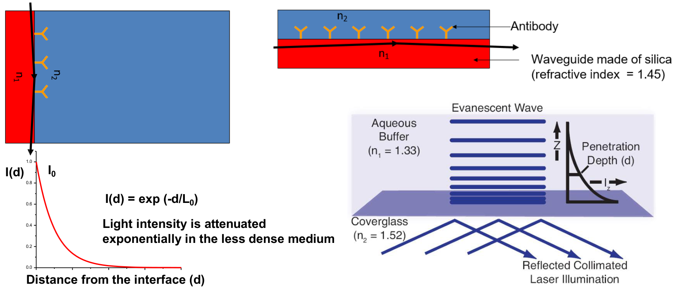
The evanescent field decays away from the interface, making sensing surface-sensitive.倏逝场离开界面后迅速衰减，因此检测对表面附近更敏感。
ENRead the figure: The light remains guided, but
its evanescent field extends into the adjoining sample. Surface
antibodies place bound targets within this short sensing region. Read
the distance axis below: intensity decreases exponentially with distance
from the interface. The slide writes exp(−d/L₀); interpret this as
normalized intensity I(d)/I₀. Thus targets close to the surface affect
the signal more strongly; total internal reflection does not mean zero
field outside the guide.
Repeated explanation课堂反复讲解: W3 PDF p24, p31–38, p48–50; T3-0052–0057; T3-0079–0083
“students usually get confused between multiplex and distributed.”
老师专门指出易混点；模式细节见S116，可在判断概念后再读。
ENKey points
A mode is an allowed field pattern;
single-mode and multimode fibres differ in supported patterns.
Evanescent fields decay outside the guiding region and enable surface
sensing.
Fabry–Pérot cavities use facing reflectors;
whispering-gallery
modes circulate near a boundary;
photonic-crystal cavities confine light
using a structured refractive-index arrangement.
Multiplexing uses
distinct sensing sites;
distributed sensing samples along the fibre.
中文必会知识点
Mode模式是允许存在的场分布；
single-mode单模与multimode多模光纤支持的模式数不同。
Evanescent
field倏逝场在导光区域外衰减，可用于表面传感。
Fabry–Pérot腔使用相对反射面；
whispering-gallery
mode回音壁模式沿边界循环；
光子晶体腔利用结构化折射率分布约束光。
Multiplexed在多个离散位点检测；
distributed沿光纤分布检测。
ENStart from zero: A mode is an allowed pattern of
the light field in a structure. A single-mode fibre supports one guided
spatial pattern at the operating wavelength; a multimode fibre supports
several. This does not mean single-mode light contains only one photon.
A cavity confines light so selected patterns can persist and resonate.
Its geometry helps determine the allowed patterns, much as an
instrument's shape influences its supported notes.
ENFollow the mechanism: A Fabry–Pérot cavity uses
facing reflectors, letting light travel back and forth. A
whispering-gallery mode circulates near a boundary, resembling sound
traveling around a round gallery. A photonic-crystal cavity uses a
structured refractive-index arrangement to confine light. These are
recognition aids, not exact mechanical pictures: all involve
electromagnetic field patterns. An evanescent field outside a guiding
boundary can sample nearby molecules without requiring them to enter the
whole cavity.
ENTry an example: Teaching example: identify
facing mirrors, a circular rim, or a patterned lattice before naming the
cavity. For fibre sensing, distinguish several separate sensing
locations, multiplexed sensing, from information continuously resolved
along a length, distributed sensing. Neither describes the number of
optical modes. Mode describes a field pattern; sensing arrangement
describes where information is obtained.
Source / 来源：W3 PDF p19–24; W3 PDF p23–28; W3 PDF p30; W3 PDF
p31–38; W3 PDF p31–39; W3 PDF p39–45; W3 PDF p48–50 | T3-0030–0045,
T3-0051–0072, T3-0079–0083
Repeated explanation课堂反复讲解: W3 PDF p31–38; T3-0052–0057
“students usually get confused between multiplex and distributed.”
模态/模式色散在本节是辅助；P1先分清空间测量安排。
Lower-priority detail老师降低细节优先级: W3 PDF p30; T3-0051
“Later this part is not that important, but just to share with you, that there are different setups to build to set up a fiber sensor.”
只就近降低传输/反射装置搭建细节，不排除后续复用/分布式。
ENDifferent modes can travel with different
delays. A multimode fibre can collect more light but a pulse may spread
in time because its modes arrive at different times: modal dispersion.
Single-mode operation avoids this particular source of spreading; it
does not eliminate every loss or every kind of dispersion. Mode count
describes field patterns, not target count or number of sensors.
ENPoint sensing reads locally. Multiplexed sensing
separately reads several localized sites/channels along one fibre; the
taught example assigns different targets to different sites. Distributed
sensing resolves a measurand along the fibre, such as temperature at
many positions. Thus sample Q9 D/E fit the classroom examples. In the
general definition, multiplexed sites may measure the same target, and
distributed systems can have multiple parameters; do not turn the
examples into universal restrictions.
SPR is a light-coupled collective electron
oscillation at a metal interface;
LSPR is localized around metal
nanoparticles or nanostructures.
Surface binding can shift a resonance
because the surrounding refractive index changes.
中文必会知识点
光学共振器增强光与样品反复相互作用。
SPR是金属界面上与光耦合的集体电子振荡；
LSPR局域于金属纳米颗粒或纳米结构。
表面结合改变周围折射率，因此可能引起共振位移。
ENStart from zero: Resonance means a system
responds especially strongly at certain frequencies. A playground swing
is easier to drive when pushes match its timing. An optical resonator
similarly favors particular light frequencies, although its mechanism
involves electromagnetic waves rather than a swinging mass. Repeated
light interaction with a sensing region can make small changes easier to
observe through shifts of a resonance peak.
ENFollow the mechanism: In SPR, light drives many
mobile electrons in a metal to oscillate together at an interface. In
LSPR, this collective response is localized around a nanoparticle or
nanostructure. Nearby molecules change the optical environment, often
represented by refractive index, and can shift the response peak. A
metal plasmonic surface is not automatically a closed cavity with two
mirrors; the course groups these mechanisms broadly as resonance
sensing.
ENTry an example: Teaching example: a sensor peak
moves after protein binds to its surface. This suggests resonance-shift
readout; recognition chemistry still determines which protein binds.
Identify SPR by its metal interface and LSPR by localized metal
structures. Do not decide selectivity from a large peak shift alone:
unrelated changes in temperature or surrounding solution can also move a
resonance.
ENExam wording: The course uses a broad
resonance-sensing classification. Do not equate every SPR structure with
a closed Fabry–Perot cavity. For this Quiz, identify mechanism and shift
direction before studying long resonance derivations.
Source / 来源：W3 PDF p39–45; W3 PDF p51–60; W3 PDF p64–75 |
T3-0062–0072, T3-0084–0093, T3-0099–0105
S118
· [P2] Resonance shifts from index and geometry /
折射率与几何造成的共振位移
P2 Important foundationsP2 重要基础Repeated explanation反复讲解Final emphasis仅期末强调Lower priority降低优先级
Evidence and review target依据与学习抓手
Review target: Relate a resonance shift to refractive index or geometry and read bulk-index calibration.学习抓手：知道共振可因折射率或尺寸变化而移位，会读体折射率校准。
Repeated explanation课堂反复讲解: W3 PDF p41–50; T3-0062–0083
P1器件分类先学B10/C11；本节解释λ=2πRn_eff/m及校准含义。
Final-exam emphasis仅期末考试强调: W3 PDF p47–50; T3-0077–0078
“As you can see, on the final exam, it can look like this.”
展示图计算明确是final exam，不提升为Quiz必考。
Lower-priority detail老师降低细节优先级: T3-0076
“Don't bother too much by this part.”
就近是温度/尺寸延伸；仍保留尺寸能使峰移的概念，长温度推导次要。
ENCavity resonators such as Fabry–Pérot and WGM
recirculate light so a sample can interact with the field repeatedly,
rather than only during one pass. For the illustrated WGM model,
λ_r=2πRn_eff/m for a fixed mode order m. Small changes give
Δλ_r/λ_r≈ΔR/R+Δn_eff/n_eff. With radius and mode fixed, a larger
effective index shifts this resonance to longer wavelength. A size
change can also shift it, so a shift is not proof of binding by
itself.
ENBulk refractive-index calibration uses liquids
with known indices and measures the resulting shifts to obtain Δλ/Δn. It
characterizes the optical device’s index response, not its ability to
distinguish one biomolecule from another. Two facing reflectors identify
a Fabry–Pérot cavity, a circulating rim mode identifies WGM, and a
periodic index structure identifies a photonic-crystal resonator. Raman
scattering reports vibrational energy exchange rather than this
resonance-recycling mechanism.
P2 Important foundationsP2 重要基础Repeated explanation反复讲解Lower priority降低优先级
Evidence and review target依据与学习抓手
Review target: Recognize prism/grating coupling and read SPR/LSPR/EOT spectrum axes.学习抓手：认得SPR的棱镜/光栅耦合，并读清反射/消光/透射纵轴。
Repeated explanation课堂反复讲解: W3 PDF p54–68, p81; T3-0098–0103; T4-0001–0003
SPR/LSPR基本区别已列P1 C11；EOT与耦合方法是这一节扩展。
Lower-priority detail老师降低细节优先级: W3 PDF p59–63; T3-0097
“This is some detailed explanation.”
详细传播常数推导低优先；不排除棱镜/光栅方法和峰/谷读图。
ENA propagating surface plasmon couples an
electromagnetic field with collective conduction-electron motion at a
metal–dielectric interface. Exciting it requires appropriate coupling; a
prism or grating can provide a suitable coupling condition. It is not
enough to shine any beam onto any metal and assume an SPR signal. In
LSPR the response is localized around a small metal structure; its
excitation arrangement is often simpler, but wavelength, structure and
polarization can still matter.
ENExtraordinary optical transmission, EOT, refers
here to resonantly enhanced transmission through patterned small holes
in a metal film. Its spectrum can change when the nearby refractive
index changes. Read the plotted observable: traditional SPR often shows
a reflectivity dip, LSPR an extinction peak, and EOT a transmission
feature. A resonance may appear as a peak or a dip depending on what the
detector measures; neither appearance alone identifies the biosensor
family.
SPR, LSPR and EOT: different measured spectra (original lecture slide).SPR、LSPR、EOT：不同的被测光谱（原课件）。
ENRead the figure: Read both axes: SPR plots
reflection against angle here, LSPR extinction against wavelength, EOT
transmission against wavelength. A target-induced resonance change may
move a dip or a peak depending on the observable.
Source / 来源：Week 3 PDF p81; original slide figure / 原课件截图
Original slide / 原课件图
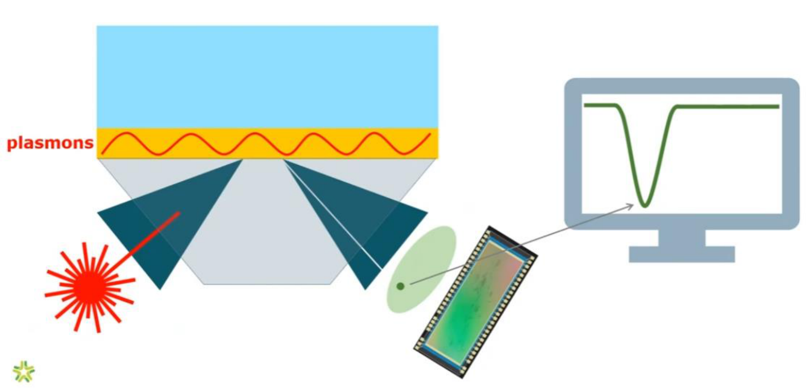
Prism-coupled SPR: energy coupling creates a dip in reflected light.棱镜耦合SPR：能量耦合到表面模式，反射光出现谷值。
ENRead the figure: Follow the red incident beam
through the prism to the thin metal film. At the resonance condition,
energy couples to electron oscillations along the metal–sample
interface, so reflected intensity decreases and the detector sees a dip.
Binding changes the nearby refractive index and shifts the angle or
wavelength where this dip occurs. For conventional propagating SPR,
coupling and p/TM polarization matter; simply shining any light onto
gold does not guarantee resonance.
Review target: Explain fixed-point intensity changes and distinguish a camera from a spectrometer.学习抓手：知道固定工作点强度可随共振移动而变化，相机不直接告诉波长。
Supporting course concept课内辅助概念: W3 PDF p81–86; T3-0111–0115
SPR成像/AI研究应用例子；没有独立Quiz或短计算重点提示。
Lower-priority detail老师降低细节优先级: T3-0111–0112
“I would not want you to memorize this.”
仅就近指旧θ扫描配置，不能据此排除所有SPR成像概念。
ENSPR imaging illuminates many spots and measures
their reflectivity changes in parallel, commonly at a fixed angle and
wavelength. If binding shifts a resonance curve, the intensity at that
fixed operating point can change. Thus sensing a resonance shift does
not always require scanning and measuring the full spectrum in every
measurement. The array improves throughput and can support multiplexing
when its sites have appropriate recognition elements.
ENA camera records spatial intensity values; a
spectrometer resolves optical strength across wavelength. Converting a
camera pattern into an estimated wavelength shift or concentration
requires calibration or a validated model. A dark or bright spot does
not directly supply its wavelength. Machine learning can help map
patterns to biological information, but the measurement and calibration
still have to establish what the pattern means.
Worked example课堂/课件例题: W3 PDF p47–50; T3-0077–0078
课堂实际校准图；长综合图题次于读斜率、线宽和单位。
ENKey points
Bulk refractive-index sensitivity
Sλ=Δλ/Δn has units nm/RIU.
It describes index response, not biochemical
selectivity.
Resonance linewidth is often FWHM (full width at half
maximum);
Q=f0/δf, equivalently λ0/δλ for a narrow resonance.
FOMλ=Sλ/δλ
compares sensitivity with linewidth.
Keep the same spectral coordinate
and units;
narrower lines alone do not determine LOD.
中文必会知识点
体折射率灵敏度Sλ=Δλ/Δn，单位nm/RIU，描述折射率响应而非生化选择性。
共振线宽常用FWHM半高全宽；
Q=f0/δf，窄共振下等价于λ0/δλ。
FOMλ=Sλ/δλ同时考虑灵敏度与线宽。
分子分母必须使用相同光谱坐标与匹配单位；
线更窄也不能单独确定LOD。
ENStart from zero: A resonance peak has a position
and a width. Sensitivity tells us how far the position moves when the
measured quantity changes. Linewidth describes how broad the peak is.
FWHM, full width at half maximum, is the distance between two points at
half the peak height above its baseline. A tall peak can still be broad,
so height alone is not sharpness.
中文从零理解：共振峰同时有位置和宽度。Sensitivity（灵敏度）告诉我们被测量变化时，峰位置移动多少；linewidth（线宽）描述峰有多宽。FWHM，即full
width at half
maximum（半高全宽），是峰高相对基线的一半处左右两点之间的距离。峰高也可能很宽，因此高度本身不是尖锐程度。
ENFollow the mechanism: For refractive-index
sensing, Sλ=Δλ/Δn: peak shift Δλ divided by index change Δn, in nm/RIU.
RIU means refractive-index unit. Quality factor Q compares the resonance
position with its width; a narrow peak at the same position gives larger
Q. FOMλ=Sλ/δλ compares sensitivity with linewidth δλ. Think of a moving
pointer with a blurred edge, but actual uncertainty also depends on
noise and how the peak is fitted.
ENTry an example: Teaching example: a 2 nm shift
for Δn=0.01 gives Sλ=200 nm/RIU. If linewidth is 4 nm, FOMλ=50 RIU⁻¹. Do
not divide this wavelength sensitivity by a width in Hz; convert to one
coordinate first. High Q or high FOM does not alone establish LOD or
biochemical selectivity. A resonance can respond strongly to any index
change, including an unwanted background change.
Source / 来源：W3 PDF p15–18; W3 PDF p25–29; W3 PDF p46–50; W3 PDF
p77–80; W3 PDF p81–87 | T3-0021–0029, T3-0046–0050, T3-0073–0078,
T3-0107–0114
Original slide / 原课件图
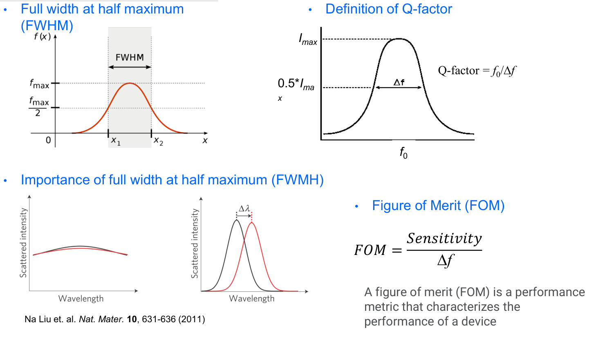
FWHM, Q and FOM: distinguish peak width from peak shift.FWHM、Q与FOM：区分峰宽和峰位移动。
ENRead the figure: For FWHM, first find half the
peak height, then measure the horizontal separation of the two
intersections; it is neither the full base width nor half the center
frequency. Compare the two lower spectra: a narrow peak makes the same
wavelength shift easier to distinguish. Q=f₀/Δf compares center
frequency with linewidth; FOM compares sensitivity with linewidth. Match
the units: frequency sensitivity needs Δf, wavelength sensitivity needs
Δλ. A tall peak alone does not prove high Q or FOM.
ENStart from zero: An antigen is a molecular
target that an antibody can recognize. In the taught antigen rapid test,
antibodies supply the recognition and gold nanoparticles supply a
visible reporter. These are separate jobs. A test line appears when the
appropriate labelled material is captured there. The gold is not simply
a decorative color, and the antibody is not itself an electronic
detector.
ENFollow the mechanism: The liquid travels along
the strip by capillary action, the movement of liquid through small
spaces without a pump. Target antigen can associate with labelled
antibodies and be captured at the test line. Many gold nanoparticles
together create a visible optical response associated with LSPR. Their
electrons interact collectively with light. Think of gathering colored
markers at one location; actual capture is molecular binding, not
deliberate placement.
ENTry an example: Teaching example: if a question
asks the recognition mechanism, answer antibody–antigen binding; if it
asks the gold nanoparticle optical principle, answer LSPR. Do not
replace one with the other. This colorimetric ART example is different
from PCR, which amplifies nucleic acids, and from ordinary fluorescent
reporting. Match the requested step to its mechanism. A control line
checks assay operation; a missing control line makes the result invalid,
even if a test line appears.
中文用例子理解：教学例子：如果问识别机制，答抗体—抗原结合；如果问金纳米颗粒的光学原理，答LSPR，两者不能互换。这个比色ART例子不同于扩增核酸的PCR，也不同于普通荧光报告。把题目问的步骤与相应机制对应起来。
Control
line（控制线）检查检测是否正常运行；即使出现测试线，缺少控制线时结果仍无效。
ENExam wording: Separate recognition from readout:
antibody binding supplies specificity, while the gold nanoparticles
supply the optical signal. Do not answer PCR, electrical membrane
potential, or ordinary fluorescence excitation for this taught
example.
Source / 来源：W3 PDF p76; W7 p52–55 (context; classroom question
diagram); W3 p76–79; W1 PDF p67 | T1-0062–0064, T3-0106,
T7-0047–0050
Teaching diagram / 教学示意
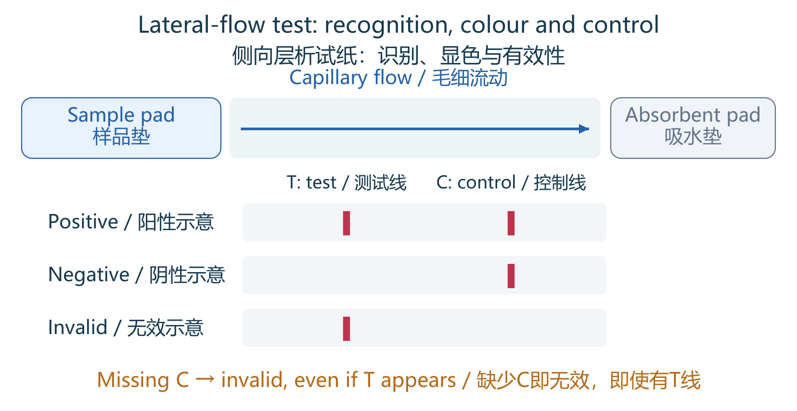
Lateral-flow test: recognition, colour and control侧向层析试纸：识别、显色与有效性
ENRead the figure: Fluid moves along the strip by
capillary action. Antibodies provide selective recognition; accumulated
gold labels provide a visible colour signal through their optical
properties. For the illustrated common assay pattern, C+T means
positive, C alone means negative, and no C means invalid. Read within
the assay-specific time window and follow its instructions.
Source / 来源：Week 1 PDF p67; Week 3 PDF p76; original teaching
schematic / 自绘教学示意，非实验数据
B12 ·
[P2] LSPR tuning and SERS局域等离激元调谐与表面增强拉曼
P2 Important foundationsP2 重要基础Teacher emphasis课堂强调Sample Q2样卷Q2
Evidence and review target依据与学习抓手
Review target: Explain nanoparticle hot spots, SERS enhancement and Raman molecular fingerprints.学习抓手：解释纳米颗粒热点为何增强拉曼，区分SERS指纹与LSPR峰移。
Teacher emphasis课堂明确强调: W3 PDF p88–94; T4-0006–0013
“This is a important slide to describe what is a service enhanced Raman.”
Week3课件内容实际在Week4续讲；ASR service enhanced Raman为surface-enhanced Raman。
Sample quiz Q2 (E (Raman contrast))样卷Q2 (E (Raman contrast)): Sample quiz Q2 (E (Raman contrast))
样卷直接问普通Raman为何不是共振器；SERS是后续增强机制，不等同该E选项。
ENKey points
Nanoparticle material, size, shape
and surrounding refractive index affect LSPR.
SERS means
surface-enhanced Raman scattering: metal nanostructures create strong
local fields, especially at hot spots, and greatly enhance nearby Raman
signals.
Recognize a Raman molecular fingerprint versus an LSPR
resonance shift.
SERS was continued in Week 4;
its deferral in Week 3
did not remove it from scope.
ENStart from zero: LSPR is the light-driven
collective electron response localized around a metal nanostructure. Its
preferred wavelengths depend on the material, size, shape, and
surrounding optical environment. Thus changing a sphere into a rod can
change its spectrum even without adding an analyte. A measured resonance
shift needs a controlled comparison, because geometry and environment
both influence the signal.
ENFollow the mechanism: SERS strengthens normally
weak Raman scattering from molecules near suitable metal structures.
Structures can concentrate the local electromagnetic field, especially
in gaps called hot spots. The stronger field makes nearby Raman signals
easier to detect. Imagine a locally intensified light zone; the
molecules still contribute their vibration-related spectrum. The analogy
does not mean the whole sample becomes equally bright, or that every
molecule automatically reaches a hot spot.
ENTry an example: Teaching example: tracking a
metal resonance peak moving with the surroundings is LSPR-based
resonance readout. Looking for a molecule's shifted vibrational lines,
made stronger near metal, is SERS readout. Both may use plasmonic
structures but answer different measurement questions. For
identification, ask what is plotted: the metal resonance position or a
Raman fingerprint. Enhancement does not remove the need for suitable
recognition, controls, and interpretation.
Source / 来源：W3 PDF p64–75; W3 PDF p88–95; W3 p60–94; W3 p88–94 |
T3-0099–0105, T3-0115–0116, T4-0001–0014
S121
· [P2] SERS enhancement and molecular fingerprints /
SERS增强与分子指纹
P2 Important foundationsP2 重要基础Teacher emphasis课堂强调Supporting concept辅助理解
Evidence and review target依据与学习抓手
Review target: Separate metal-field enhancement from molecular Raman fingerprints; recognize two enhancement paths.学习抓手：分清金属场增强与分子拉曼指纹，认得电磁/化学两条增强路径。
Teacher emphasis课堂明确强调: W3 PDF p88–94; T4-0006–0013
“This is a important slide to describe what is a service enhanced Raman.”
W3最后宣布下周续讲，实际详细机制在W4；巨大增强倍数是示例而非所有基底保证。
Supporting course concept课内辅助概念: W3 PDF p89–90
化学增强和电磁增强区别来自课件图；无需背具体研究疾病或增强倍数。
ENSERS means surface-enhanced Raman scattering.
The metal structure supplies enhancement while the molecule supplies
vibration-related Raman lines. The slide distinguishes electromagnetic
enhancement from an intensified near field and chemical enhancement
involving molecule–surface interactions. Molecules must be suitably
close to the enhancing structure; the entire sample does not receive one
uniform enhancement factor.
ENFor chemical identification, compare the pattern
of Raman-shift positions and intensities: this is a molecular
fingerprint. The illustrated applications use spectral patterns and
analysis to distinguish sample groups. A larger SERS peak alone is not a
unique identifier, and the very large enhancement factors shown are
examples, not a guaranteed value for every substrate. LSPR-based index
sensing follows a metal resonance feature; SERS follows enhanced
molecular vibration lines.
Source / 来源：Week 3 PDF p88–94; T3-0116 (announces continuation
next week)
Week
4 learning block: Microscopes and optical imaging /
第4学习组：显微镜与光学成像
Week 4 concept map /
第4周知识框架
ENChapter logic: Follow light from image formation
and contrast to depth selection, detection and spectral information.
中文本章主线：沿着光的流程，理解成像与对比如何产生，再看怎样选深度、检测光和获取光谱信息。
English term中文名词
Meaning and connection含义与知识联系
Imaging modalities成像模态
Identify the input energy and detected signal;
projection X-ray and reconstructed CT slices differ.先辨输入能量与检测信号，区分投影X射线与重建CT切片。Details / 详解
NA, resolution and
samplingNA、分辨率与采样
d≈0.61λ/NA: larger NA or shorter λ improves
lateral separation; pixels must sample the magnified detail.d≈0.61λ/NA：大NA或短λ改善横向间距；像素须充分采样放大后的细节。Details / 详解
Optical contrast光学对比
Brightfield, darkfield, phase contrast and
fluorescence use different sources of image contrast.明场、暗场、相衬与荧光使用不同对比来源。Details / 详解
Confocal versus
two-photon共聚焦与双光子
Confocal rejects light at detection;
two-photon localizes excitation (F∝I² before saturation).共聚焦在检测端拒光；双光子限制激发位置（未饱和时F∝I²）。Details / 详解
OCT axial separation follows source bandwidth;
lateral detail follows focusing; focused range is another
quantity.OCT轴向间距由光源带宽控制，横向细节依赖聚焦，可聚焦范围是另一量。Details / 详解
Optical detectors光探测器
Photodiode/PMT convert light to current; CCD
shifts charge, while CMOS uses pixel-associated circuits.光电二极管/PMT把光转电流；CCD移电荷，CMOS用像素相关电路。Details / 详解
Hyperspectral cube高光谱立方
Each position has a spectrum: axes are x,y,λ;
scan method determines what is acquired per step.每个位置有光谱，坐标是x,y,λ；扫描方式决定一步记录什么。Details / 详解
P2 Important foundationsP2 重要基础Repeated explanation反复讲解
Evidence and review target依据与学习抓手
Review target: Identify each modality’s input energy, detected signal and resolution–depth trade-off.学习抓手：认出各成像方式的输入能量、检测信号，以及分辨率与穿透深度的取舍。
Repeated classroom explanation课堂反复讲解: T4-0015–0021; Week 4 PDF p4–11
“There's no perfect image to all. Every image modality has its own strength depending on what your application is.”
该句为课堂技术取舍说明，不是Quiz题目承诺；不必背表中每个示例数值。
ENKey points
X-ray imaging measures transmission
attenuation;
CT reconstructs many X-ray projections.
MRI uses magnetic
fields and radiofrequency excitation;
PET means positron emission
tomography and uses a radioactive tracer.
Ultrasound uses sound;
optical
imaging uses light.
X-rays/CT and PET involve ionizing radiation.
Compare contrast mechanism, penetration and resolution rather than
assuming one method is best for every task.
中文必会知识点
X-ray成像测透射衰减；
CT由多个X射线投影重建。
MRI磁共振使用磁场及射频激发；
PET为positron
emission
tomography正电子发射断层，使用放射性示踪剂。
Ultrasound超声用声，optical
imaging光学成像用光。
X射线/CT和PET涉及电离辐射。
比较对比机制、穿透与分辨率，不能认定某技术对所有任务都最好。
ENStart from zero: Imaging means making a map of
where signals come from. Contrast means that two regions give
distinguishable signals, so one can be seen against the other. Different
imaging methods use different physical signals. A bright region can
therefore mean different things in different images. Before comparing
pictures, ask what energy is sent in, what is detected, and what tissue
property changes that signal.
ENFollow the mechanism: X-ray imaging measures
photons passing through tissue; CT combines many viewing angles to
reconstruct slices. MRI uses a strong magnetic field: certain atomic
nuclei act like tiny magnets. A radiofrequency (RF) pulse, an
oscillating electromagnetic field, disturbs their magnetic state; their
subsequent response provides a signal whose relaxation depends on
tissue. PET uses a radioactive tracer that releases positrons, particles
like electrons but positively charged. A positron meeting an electron
produces two gamma photons; detecting pairs helps locate the tracer.
Ultrasound uses returning sound; optical imaging uses light. NIH/NIBIB:
MRI, NIH/NIBIB:
PET.
ENTry an example: Ionizing radiation has enough
energy to remove electrons from atoms. X-rays, CT, and PET involve
ionizing radiation; ordinary diagnostic ultrasound and MRI use
different, nonionizing mechanisms. This classification does not mean
every nonionizing method is automatically suitable in every
circumstance. In English questions, match projection and attenuation to
X-rays, magnetic field and RF to MRI, radioactive tracer to PET, and
echo to ultrasound. Judge resolution, depth, and contrast
separately.
P1 First passP1 先掌握Teacher emphasis课堂强调Supporting concept辅助理解
Evidence and review target依据与学习抓手
Review target: Explain optical biopsy and distinguish virtual staining from physically adding dye.学习抓手：能解释光学活检，并区分虚拟染色与真正添加染料。
Teacher emphasis老师强调: T4-0024; Week 4 PDF p18–20
“So Optical biopsy is quite important because it's non invasive.”
“很重要”针对光学活检的流程和价值；研究案例不代表所有情况下免取样确诊。
Supporting lecture content课件辅助内容: T4-0085–0087; Week 4 PDF p65–70
内窥镜／光纤探头是应用背景，先识别用途，不背仪器品牌和具体器官照片。
ENKey points
Optical biopsy seeks tissue
information through optical imaging, reducing tissue removal in the
taught examples.
Endoscopy brings illumination and detection to internal
sites, often with fibre delivery.
Virtual staining computationally makes
an image resemble a stained tissue image;
it does not physically add a
dye.
Recognize the workflow without assuming every optical method
replaces histopathology.
中文必会知识点
Optical
biopsy光学活检通过光学成像获取组织信息，在课程示例中减少取组织操作。
Endoscopy内窥镜把照明与检测带到体内，常用光纤传输。
Virtual
staining虚拟染色用计算产生类似染色组织的图像，并未实际添加染料。
要认得流程，不应推断所有光学方法都能替代组织病理。
ENStart from zero: A conventional tissue biopsy
removes a sample for examination. Optical biopsy tries to obtain useful
tissue information through optical measurements, sometimes reducing the
need to remove tissue in the taught applications. The word biopsy here
describes the diagnostic purpose, not a requirement that light cuts
tissue out. Different optical methods reveal different information, so
an optical image does not automatically provide every answer that
laboratory pathology provides.
ENFollow the mechanism: Endoscopy brings
illumination and observation to an internal location using an
instrument. Fibres can deliver light or return information through a
narrow path, somewhat like extending the instrument's reach.
Conventional staining physically adds dyes to make structures easier to
distinguish. Virtual staining instead uses computation to produce a
staining-like image from measured input. The tissue is not physically
dyed by the computer.
ENTry an example: Imagine a grayscale tissue image
converted into a colored image resembling a familiar stain. This can
help interpretation, but its colors are calculated from the input and
model; they are not directly measured dye signals. Exam clues are
internal access for endoscopy, optical tissue assessment for optical
biopsy, and computational transformation for virtual staining.
Distinguish image acquisition from display and interpretation.
C13
· [P1] Numerical aperture and microscope resolution /
数值孔径与显微分辨率
P1 First passP1 先掌握Quiz statedQuiz明确提及Teacher emphasis课堂强调Final emphasis仅期末强调
Evidence and review target依据与学习抓手
Review target: Compare objectives by NA at fixed wavelength; use d≈0.61λ/NA and separate magnification from resolution.学习抓手：同波长比较物镜看NA；会用d≈0.61λ/NA，并分清倍率与分辨率。
Explicit Quiz statement老师明确提到Quiz: T5-0059–0063; Week 4 PDF p27–30
“So you'll see these two questions again on your quiz.”
两题中的第一题为物镜比较；相同波长条件下最大NA对应最小可分辨间距。第二题光栅密度见C08。
Teacher emphasis老师强调: T4-0034–0038; Week 4 PDF p29–34
反复强调高分辨能力对应较小d，倍率增加不自动提升分辨能力。
Explicit final-exam statement老师明确提到期末: T4-0030; Week 4 PDF p27–30
“So I can definitely tell you, this will be on the final exam.”
这句单独指期末；本Quiz的依据另见T5，不把两种声明混为一个。
ENKey points
Numerical aperture is NA=n sinθ.
At
a fixed wavelength, the diffraction-limited lateral separation scales as
d≈0.61λ/NA.
Larger NA or shorter wavelength gives a smaller resolvable
separation.
Magnification alone does not guarantee improved resolving
ability.
中文必会知识点
数值孔径NA=n
sinθ。
波长固定时，衍射极限横向最小间距约d≈0.61λ/NA。
NA更大或波长更短，使可分辨间距更小。
只有放大倍率增加，并不保证分辨能力提高。
ENStart from zero: Resolution means telling two
nearby objects apart. Magnification means making their image larger.
Imagine enlarging a blurry phone photograph: the blur becomes bigger,
but hidden detail does not appear. A microscope therefore needs both
suitable magnification and good resolving ability. In this chapter,
lateral resolution concerns separation across the image, rather than
separation along its depth.
ENFollow the mechanism: An objective lens collects
a cone of light. Numerical aperture, NA=n sinθ, describes this
collection ability: n is the surrounding medium's refractive index, and
θ is the cone's half-angle. Collecting a wider cone helps capture fine
detail. Because light spreads through diffraction, even a tiny point
makes a small blurred spot. Larger NA makes that spot smaller at the
same wavelength.
ENTry an example: For the course's Rayleigh
criterion, minimum separation d≈0.61λ/NA. With λ=500 nm and NA=0.5,
d≈610 nm; raising NA to 1.0 gives about 305 nm. The smaller distance
means better resolution. In English questions, higher resolving ability
and smaller resolvable separation point to the same improvement. Compare
NA while holding wavelength and the criterion fixed; choosing the
largest magnification alone is insufficient.
ENExam wording: The objective-lens comparison is
explicitly named again for the Quiz in Week 5. If NA doubles with the
same wavelength and criterion, d halves. “Higher resolution” means a
smaller minimum distinguishable distance.
Numerical aperture: refractive index and the collection cone (original lecture figure)数值孔径：折射率与收光锥（原课件图）
ENRead the figure: Find the dotted optical axis
and angle α: α is the half-angle of the light cone, not its full opening
angle. In NA = n sin α, n is the refractive index between specimen and
objective. A larger NA collects a wider cone and gives a smaller
diffraction-limited separation d at the same wavelength; magnification
is a separate property.
中文读图：找虚线光轴与α：α是收光锥的半角，不是整个张角。NA = n sin
α中的n是样品与物镜之间介质的折射率。同一波长下，更大NA收集更宽的光锥，使衍射限制的最小可分辨距离d更小；放大倍率是另一项性质。
Source / 来源：Week 4 PDF p31; original slide figure / 原课件截图
Teaching diagram / 教学示意
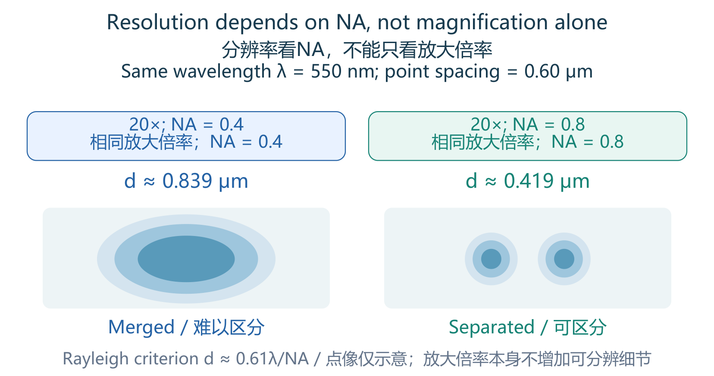
Resolution depends on NA, not magnification alone分辨率看NA，不能只看放大倍率
ENRead the figure: Keep wavelength at 550 nm and
magnification at 20×. Using d ≈ 0.61λ/NA gives about 0.839 μm for NA 0.4
and 0.419 μm for NA 0.8. A 0.60 μm separation exceeds the second
threshold but not the first. The drawn spots illustrate the distinction;
they are not calculated point-spread functions.
ENStart from zero: Even a point source makes a
small diffraction pattern through a circular lens opening. Its central
bright region is called the Airy disk. The disk diameter describes the
size of one point's pattern; the Rayleigh separation describes how far
apart two points must be to distinguish them under that criterion. They
answer different questions, so their numerical factors must not be
exchanged.
ENFollow the mechanism: NA depends on the
collection angle and medium: a suitable immersion liquid can increase
the refractive index n. The optics first form an image, then detector
pixels sample it at discrete positions. Imagine recording a melody with
too few time samples: information can be missed. Spatial undersampling
similarly misses image detail. More detector pixels help only if useful
optical detail reaches them; they cannot undo optical blur.
ENTry an example: Remember the approximate
factors: Rayleigh separation 0.61λ/NA, Airy diameter 1.22λ/NA.
Magnification changes detector image size and affects sampling. In
1/f=1/u+1/v, f is focal length, u object distance, and v image distance.
Use the stated sign convention; for positive distances of a real object
and real image, u=v=20 cm gives f=10 cm. This lens example concerns
image formation, not diffraction resolution.
Locally deemphasised by teacher老师局部降低优先级: T4-0028; Week 4 PDF p26
“It's not required if you know this or not.”
只降低薄透镜求像距这一处的优先级，基础词义仍保留。
ENAn imaging system needs an optical element to
collect or focus light, a detector to convert the light pattern into a
signal, and processing to form or display an image. A lens bends rays by
refraction. Focal length is the lens-to-focus distance for parallel
incoming rays; it is not the distance between two objects that can be
resolved. For a thin lens with real object and image distances taken as
positive, the magnification magnitude is |M|=v/u.
ENIn a medium of refractive index n, light speed
is c/n and wavelength is λ₀/n; its frequency stays the same across a
stationary interface. Reflection returns light to the original medium;
refraction changes its direction in the new medium. Specular reflection
gives a mirror-like direction, whereas diffuse reflection spreads light
into many directions. Absorption removes energy from the light; light
that is not reflected is not necessarily all absorbed, because
transmission and scattering are also possible. Polarimetry measures
optical polarization, the direction/state of electric-field oscillation
explained in S104; spectroscopy instead measures wavelength-dependent
signals. Optical polarization differs from electrode polarization in
electrochemistry.
ENFor a simple, nonabsorbing interface at normal
incidence, intensity reflectance is R=[(n₂−n₁)/(n₂+n₁)]². It is the
refractive-index mismatch that matters under this model. Do not turn the
slide’s glass-versus-water example into a universal rule that any
material with a larger n must always reflect more at every angle.
Repeated classroom explanation课堂反复讲解: T4-0045–0047; Week 4 PDF p32–34
“Resolution is still defined by this Delta D value.”
三像素是课堂建议，课件实践范围约2.3–3；不能理解为增加倍率就使光学d变小。
ENIf the detector pixel pitch is Δx and
magnification is M, its object-space sampling pitch is Δx/M. The course
recommends about 2.3–3 detector pixels across the magnified Rayleigh
separation: M d/Δx≈2.3–3. Thus the same camera can under-sample at low
magnification even when the objective itself resolves the detail.
ENFor example, d=0.5 μm, M=20 and detector pitch
Δx=5 μm give M d/Δx=2: only two pixels span that separation. At M=30,
the ratio becomes 3. This improves recording of existing optical detail;
it does not make d smaller. Distinguish detector pixel size,
object-space pixel size, magnification and optical resolution.
C14
· [P1] Confocal and two-photon microscopy共聚焦与双光子显微镜
P1 First passP1 先掌握Sample Q1样卷Q1Repeated explanation反复讲解
Evidence and review target依据与学习抓手
Review target: Compare confocal pinhole rejection with focal two-photon excitation; each photon has lower energy.学习抓手：分清共聚焦靠针孔挡离焦光，双光子靠焦点局域激发；每个光子能量更低。
Repeated classroom explanation课堂反复讲解: T4-0062–0069; Week 4 PDF p47–61
课堂连续比较宽场、共聚焦及双光子切片机制。高峰值脉冲与漂白取舍见S407，先掌握基本区别。
ENKey points
A confocal pinhole suppresses
out-of-focus light and enables optical sectioning.
Two-photon excitation
is nonlinear and largely confined to the focus;
two longer-wavelength
photons together supply the excitation energy.
These mechanisms improve
contrast and sectioning in different ways.
中文必会知识点
共聚焦pinhole抑制离焦光，实现光学切片。
双光子激发具有非线性，主要限制在焦点；
两个长波长光子共同提供激发能量。
两种机制以不同方式改善对比度与切片能力。
ENStart from zero: When viewing thick tissue,
light from above and below the chosen focus can cover the wanted detail
with background. Optical sectioning means selecting a thin depth layer
without physically cutting the tissue. Think of trying to read one
transparent page while other pages overlap it. Confocal and two-photon
microscopes solve this depth problem through different parts of the
imaging process.
ENFollow the mechanism: Confocal microscopy
illuminates a focused spot and places a small pinhole before the
detector. Properly focused return light passes through; much
out-of-focus light is blocked. Scanning builds an image. Two-photon
microscopy instead needs two photons to supply excitation energy
together. This event becomes much more likely where light is most
concentrated, so fluorescence is mainly generated near the focus rather
than throughout the illuminated path.
ENTry an example: The exam distinction is
detection-side rejection versus excitation-side localization. A pinhole
is the signature of confocal imaging; nonlinear, localized excitation is
the signature of two-photon imaging. Under the simple unsaturated model,
two-photon fluorescence is proportional to I², where I is light
intensity: doubling I gives four times the signal. Longer excitation
wavelengths can help tissue penetration, but do not automatically
improve diffraction-limited spatial resolution.
ENExam wording: Do not call a pinhole the cause of
two-photon excitation. The usual two-photon wavelength advantage
concerns penetration and localized excitation; it does not erase the
dependence of diffraction resolution on wavelength and NA.
ENRead the figure: Trace illumination from Point
Source to Sample, then the returning light toward Pinhole and Detector.
Light from the selected focal plane passes the pinhole; light from
another plane is rejected. This suppresses background rather than
physically cutting the tissue. A point measurement must be scanned to
form an image, and changing focus gives different depth slices.
P2 Important foundationsP2 重要基础Repeated explanation反复讲解Sample Q1样卷Q1
Evidence and review target依据与学习抓手
Review target: Identify brightfield, darkfield and phase contrast by the light collected; understand PSF and display colours.学习抓手：按收集的光辨认明场、暗场与相衬；理解PSF及伪彩色。
Repeated classroom explanation课堂反复讲解: T4-0056–0065; Week 4 PDF p40–46, 51–53
ENBrightfield microscopy mainly uses transmitted
light: absorbing or scattering structures appear darker against a bright
background. Darkfield excludes the direct illumination beam and collects
scattered light, so scattering objects can look bright on a dark
background. Phase contrast turns phase delays caused by optical-path
differences into intensity differences, helping reveal transparent cells
without relying on fluorescent labels.
ENFluorescence contrast instead comes from emitted
light after excitation. Different labels and detection channels can
highlight different structures and show co-localization, meaning that
signals appear at the same spatial location. Display colors may be
assigned by the software: a red, green or blue region in a
pseudo-colored image need not be the sample’s natural color. A suitable
fluorescent probe can report a molecule’s presence or ion binding. The
slide also lists diffusion coefficient, a quantity describing how
rapidly molecules spread by random motion; it is not intensity or color
itself and needs an appropriate fluorescence measurement/model.
ENThe point spread function, PSF, is the image
produced by an ideal tiny point source. It describes how the imaging
system spreads that point into a spot, sideways and along depth. A
sharper-looking image and stronger contrast do not by themselves prove a
smaller PSF or better diffraction resolution. In confocal imaging, the
pinhole suppresses out-of-focus contributions; stacking optical sections
gives a 3D data set.
Source / 来源：Week 4 PDF p40–46, 51–53; T4-0056–0065
ENClarify the concept: In the axial-response plot,
scan the reflector through focus along z: a narrower I(z) response means
a thinner selected optical layer. The smaller pinhole curves are
narrower in the shown comparison. Closing the pinhole also rejects
useful light, so it is not a free improvement without a signal
trade-off. Compare curve width for section thickness; the plot’s similar
peak heights do not establish identical collected photon counts.
Brightfield, darkfield and phase-contrast appearances (original lecture slide)明场、暗场与相衬显示差异（原课件图）
ENRead the figure: Compare the image backgrounds
and the slide labels. Ask whether contrast comes from transmitted
intensity, scattered light or converted phase differences.
中文读图：对照图像背景与原图标签，问对比来自透射强度、散射光，还是相位差转亮度差。
Source / 来源：Week 4 PDF p40; original slide figure / 原课件截图
S407
· [P2] Two-photon requirements and practical advantages /
双光子激发条件与实际优势
P2 Important foundationsP2 重要基础Repeated explanation反复讲解Sample Q1样卷Q1
Evidence and review target依据与学习抓手
Review target: Explain focal high peak intensity and reduced out-of-focus damage; advantages do not guarantee zero damage.学习抓手：理解焦点高峰值光强与焦外损伤减少；优势不等于零损伤。
Repeated classroom explanation课堂反复讲解: T4-0066–0069; Week 4 PDF p56–61
ENTwo-photon absorption is rare unless photons are
concentrated strongly in space and time. A tightly focused pulsed laser
supplies high peak intensity, so simultaneous two-photon excitation is
much more likely near the focus. Because the excitation itself selects
that small volume, a confocal detection pinhole is not required by this
principle. This differs from illuminating a larger volume and then
rejecting unwanted light at the detector.
ENLonger-wavelength excitation and localized
fluorescence generation support deeper imaging in scattering tissue and
reduce out-of-focus photobleaching and photodamage. Emitted photons
scattered on their way out can still be collected because excitation was
localized. These are advantages in contrast, collection and penetration,
not a promise of zero damage or universally higher diffraction
resolution: bright infrared excitation can still heat tissue, and
wavelength and NA still matter.
One-photon and two-photon excitation: energy diagrams and wavelength order (original lecture figure)单光子与双光子激发：能级图与波长顺序（原课件图）
ENRead the figure: Compare the upward arrows: one
blue excitation photon or two lower-energy red photons jointly excite
the fluorophore; green arrows represent emission. On the lower
wavelength axis, right means longer wavelength. The two-photon
excitation wavelength can exceed the emission wavelength because two
photons supply the energy together. Do not apply the usual single-photon
Stokes ordering to each individual two-photon excitation photon.
Source / 来源：Week 4 PDF p55; original slide figure / 原课件截图
C15
· [P1] OCT: low-coherence interference and reflectivity /
OCT：低相干干涉与反射率
P1 First passP1 先掌握Sample Q8样卷Q8Repeated explanation反复讲解
Evidence and review target依据与学习抓手
Review target: OCT uses sample/reference interference to recover depth; layer intensity mainly reflects returned light.学习抓手：OCT用样品／参考光干涉定位深度；层亮度主要来自返回光的反射／后向散射。
Repeated classroom explanation课堂反复讲解: T4-0088–0098; T4-0105–0106; Week 4 PDF p71–86
重复讲两臂合束、反射与深度剖面；长干涉推导、OCT-A研究应用不随核心一并升级为必背。
ENKey points
Optical coherence tomography
combines light returning from a sample with a reference beam.
Low-coherence interference localizes returning signals in depth.
Layer
brightness represents back-reflection/back-scattering under the course
description;
it is not simply a temperature or fluorescence map.
中文必会知识点
光学相干断层成像把样品返回光与参考光合并。
低相干干涉把返回信号定位到不同深度。
按课程描述，层状亮度反映后向反射或散射，而不是简单的温度图或荧光图。
ENStart from zero: Optical coherence tomography,
OCT, builds depth pictures from light returned by tissue. Different
layers return different amounts of light, so the picture can show
boundaries beneath the surface. Its common grayscale brightness
represents the detected return signal, not simply temperature or
fluorescence. The practical difficulty is that light travels too quickly
for ordinary electronics to time these tiny travel differences
directly.
ENFollow the mechanism: OCT splits light into a
sample arm and a reference arm, then recombines their returning beams.
Interference means overlapping light waves reinforce or weaken each
other according to their relative phase. With a broad-band,
low-coherence source, useful interference is linked to closely matched
optical paths. The reference supplies a comparison for identifying
return depth; in modern systems this information can also be recovered
from a measured interference spectrum.
ENTry an example: A useful analogy is comparing an
unknown path with a known ruler: the reference is essential, but OCT
uses wave interference rather than a physical ruler. In a diagram, look
for beam splitting, two arms, and recombination. In a question about OCT
contrast, choose back-reflection or back-scattering. Avoid calling OCT
ordinary electronic time-of-flight measurement, ultrasound echoes, or a
fluorescent-label measurement.
ENExam wording: Identify the reference arm, sample
arm and interference signal. The long Michelson intensity derivation is
lower priority because of the global short-calculation guidance; there
is no separate explicit oral exclusion of all OCT equations.
OCT retinal cross-section compared with an anatomical layer diagram (original lecture figure)OCT视网膜横截面与组织层示意对照（原课件图）
ENRead the figure: Use the labelled arrows to
match the anatomical layers on the left with bands in the OCT image on
the right. Across the image is lateral position; top-to-bottom separates
depths. These display colors encode the strength of returning/scattered
light, not the tissue's natural color or a fluorescent stain. Layer
separation depends on axial resolution; the figure does not supply a
calibrated scale for measuring thickness.
Supporting lecture content课件辅助内容: T4-0089–0098; T4-0106–0108; Week 4 PDF p75–87
未发现老师排除整个OCT；这里只策略性降低长代数推导与血管成像扩展的优先级。
ENIn the slide’s single-wavelength Michelson
example, moving one mirror by L changes the round-trip path by 2L, so
the phase difference changes by 4πL/λ. The detected intensity contains a
phase-dependent interference term; it is not merely the sum of two
unrelated brightness readings. Constructive interference strengthens the
signal and destructive interference weakens it. The long derivation is
secondary; identify the splitter, sample arm, reference arm and
recombination.
ENFor the course’s Gaussian-source approximation
in air, λ₀ is the central wavelength and Δλ is the intensity spectrum’s
FWHM (full width at half maximum); axial separation Δz≈(2
ln2/π)λ₀²/Δλ≈0.44λ₀²/Δλ. Use matching wavelength units: λ₀=800 nm and
bandwidth Δλ=100 nm give about 2816 nm=2.8 μm. At fixed λ₀, doubling
bandwidth halves Δz. This is a depth-resolution relation; changing NA
mainly changes lateral focusing and the useful focus range. Physical
depth in tissue additionally depends on refractive index.
ENAn OCT cross-section commonly uses lateral
position x and depth z. In the taught display, stronger returning
signals receive brighter or red/white display colors, while weak returns
receive dark colors. The color is a signal map, not the natural color of
each eye layer. Refractive-index inhomogeneity creates
reflection/backscatter contrast; absorption along the path can weaken
returns but is not the primary answer to sample Q8.
ENOCT angiography, OCT-A, uses changes associated
with moving red blood cells to map microvasculature. The example avoids
injected vascular dye. It is a flow-related extension of OCT, not
fluorescent labeling of every vessel. Structural OCT asks where tissue
layers are; OCT-A adds information about where blood-cell motion is
detected.
ENClarify the concept: Spectral/Fourier-domain OCT
records the interference spectrum as the sample return combines with the
reference. Fourier processing converts the spectral fringe structure
into a depth-reflectivity profile, often called an A-scan. Moving
laterally and combining depth profiles gives a cross-section. Thus the
raw measured horizontal coordinate can be wavelength, while the
reconstructed coordinate is depth; neither is a fluorescence emission
spectrum used as a label.
Michelson interferometer and the round-trip optical-path difference (original lecture slide)Michelson干涉仪与往返光程差（原课件图）
ENRead the figure: Identify the beam splitter,
fixed mirror, movable mirror, and detector in this Michelson
demonstration. Light travels to each mirror and back; mirror
displacement L changes the round-trip path by 2L. Interference compares
the returning fields, not two independent light counts.
A photodiode converts absorbed
photons into electron–hole pairs and photocurrent.
A PMT emits
photoelectrons from a photocathode, then multiplies electrons at
successive dynodes.
This internal gain helps detect weak light;
it does
not remove all noise.
A point detector usually requires scanning for an
image, whereas CCD/CMOS arrays provide many spatial detector
elements.
中文必会知识点
Photodiode光电二极管将吸收光子转换为电子—空穴对及光电流。
PMT光电倍增管由photocathode光阴极发出光电子，再在dynode倍增极逐级倍增电子。
内部增益帮助检测弱光，不等于消除所有噪声。
点探测器通常需扫描才能成像；
CCD/CMOS阵列提供许多空间探测单元。
ENStart from zero: A light detector turns arriving
light into an electrical signal. A photodiode is a semiconductor device:
suitable absorbed photons create electron–hole pairs, which can be
separated and collected as photocurrent. An electron carries negative
charge; a hole represents a missing electron that behaves as a positive
carrier. The current tells us about the detected light under the
detector's calibrated response.
ENFollow the mechanism: A photomultiplier tube,
PMT, first releases photoelectrons from a photocathode. An electric
field accelerates them toward successive dynodes. Each impact can
release several secondary electrons, producing a cascade before
collection at the anode. Think of a branching count that grows at each
stage. These stages multiply electrons; they are not tiny mirrors
repeatedly reflecting and multiplying light. A PMT requires an
appropriate high-voltage supply.
ENTry an example: For illustration, one initial
electron multiplied by four at each of three stages gives 4³=64
electrons; real gains depend on device and conditions. Internal gain
helps weak signals become measurable, but noise remains. A single
detector reports light at one measurement location, so scanning is
usually needed to build an image. English clues are electron–hole pairs
for photodiodes and photocathode, dynodes, and secondary emission for
PMTs.
Repeated classroom explanation课堂反复讲解: T4-0048–0055; T4-0109–0114; Week 4 PDF p35–38, 99–104
CCD／CMOS比较优先；HSI每像素光谱和x,y,λ是重要基础，技术采集实现见S406辅助。
ENKey points
A CCD accumulates photocharge and
transfers it through a charge-transfer readout structure.
CMOS commonly
uses pixel-associated circuitry for readout or amplification.
Hyperspectral imaging records a spectrum at each spatial location,
producing a spatial–spectral data cube.
中文必会知识点
CCD累积光生电荷，并通过电荷转移结构读出；
CMOS通常通过像素相关电路读出或放大。
Hyperspectral
imaging在每个空间位置记录光谱，形成空间—光谱数据立方。
ENStart from zero: A camera must turn a pattern of
light into numbers. A pixel is one small detector element that samples a
position in the image. Light produces electrical charge in these
elements. Reading all the elements gives a digital image. CCD and CMOS
are two detector-array technologies; they differ mainly in how the
electrical information is collected and read.
ENFollow the mechanism: In a CCD, collected charge
is transferred through a readout structure, like passing measured
packets along a line. CMOS commonly has circuitry associated with pixels
for local conversion or readout, like giving positions their own reading
stations. These analogies explain architecture only: neither guarantees
perfect noise performance. Both still need illumination, optics, and
suitable electronics to produce a useful image.
ENTry an example: Hyperspectral imaging adds a
wavelength dimension: each position has a spectrum, meaning signal
versus wavelength. The result is a cube indexed by x, y, and λ, not a
physical cube inside the camera. A line-scan system records one spatial
line and its spectra, then moves to collect the next line. English clues
are charge transfer for CCD, pixel-associated circuitry for CMOS, and
spectrum at each pixel for hyperspectral imaging.
中文用例子理解：Hyperspectral
imaging（高光谱成像）增加了波长维度：每个位置都有一条spectrum（光谱），即信号随波长的变化。结果用x、y、λ三个坐标组成data
cube（数据立方），并非相机里有一个实体立方体。Line-scan（线扫描）一次记录一条空间线及其光谱，再移动采集下一条。英文辨认：charge
transfer对应CCD，pixel-associated circuitry对应CMOS，spectrum at each
pixel对应高光谱。
ENExam wording: A line-scan instrument records one
spatial line plus its spectra at a time; scanning the other spatial axis
builds the cube. For sample Q9, B remains a reasoned reference answer;
the oral review does not give an unambiguous final letter.
CCD charge transfer and a CMOS pixel-readout example (original lecture figure)CCD电荷转移与一种CMOS像素读出示例（原课件图）
ENRead the figure: In the upper sequence, follow
the arrows: charge packets move down the CCD array, then through the
serial register to an output. In the lower CMOS example, each pixel has
local conversion circuitry and the row/column circuits select readout.
The shown per-pixel ADC is one digital-pixel implementation; it is not a
requirement for every CMOS sensor. Both begin with photons generating
charge.
Source / 来源：Week 4 PDF p36; original slide figure / 原课件截图
Teaching diagram / 教学示意
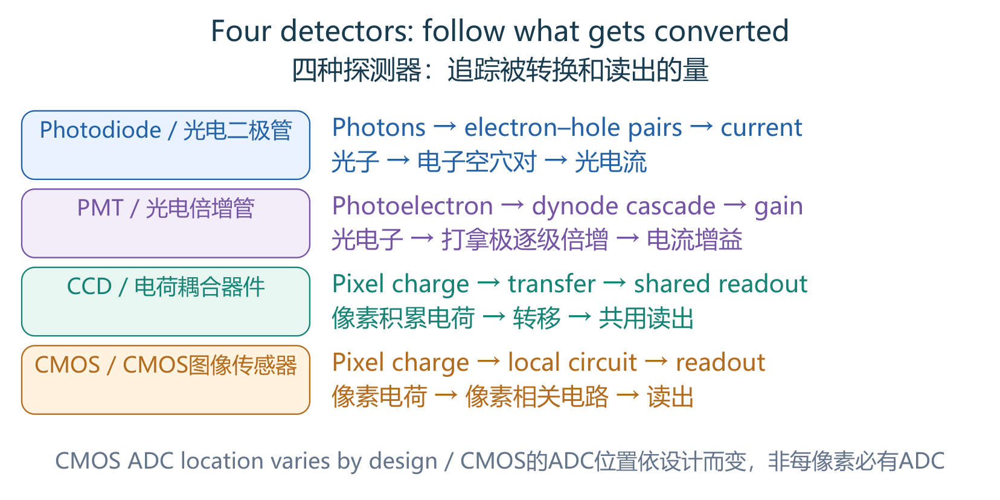
Four detectors: follow what gets converted四种探测器：追踪被转换和读出的量
ENRead the figure: Photodiodes produce
photocurrent. PMTs multiply electrons at dynodes, rather than repeatedly
reflecting light. CCDs transfer charge packets for readout. CMOS sensors
use pixel-associated circuitry, but analogue-to-digital conversion can
be shared at column or other levels; do not generalize one schematic to
every CMOS architecture.
Repeated classroom explanation课堂反复讲解: T4-0052–0055; Week 4 PDF p36–38
架构比较比绝对性能排名优先；不背“所有CCD一定比所有CMOS好”。
ENIn the course comparison, CCD charge is shifted
toward output nodes for conversion and digitization. CMOS uses
pixel-associated circuitry and often parallel readout; selected pixels
can be addressed. ADC means analog-to-digital converter: it turns an
analog voltage into a numerical value. Neither CCD nor CMOS removes the
need for optical focusing.
ENThe slides associate CCD with sensitive,
low-noise scientific imaging, and CMOS with faster readout, lower
power/cost and on-chip integration. Treat these as architecture trends
in the course examples, not absolute rankings for every modern device. A
photodiode has no PMT-style dynode multiplication; a PMT has high
internal gain but still has noise and a wavelength-dependent
response.
B17
· [P1] Sectioning, OCT resolution and hyperspectral data /
切片、OCT分辨率与高光谱数据
P1 First passP1 先掌握Teacher emphasis课堂强调Sample Q8样卷Q8Lower priority降低优先级
Evidence and review target依据与学习抓手
Review target: Separate OCT axial resolution, lateral resolution and object-side depth of field (called depth of focus in slide p83); broader bandwidth improves axial resolution at fixed central wavelength.学习抓手：分清OCT轴向分辨率、横向分辨率与物侧景深（原课件p83称焦深）；固定中心波长时带宽增大改善轴向分辨。
Teacher emphasis老师强调: T4-0100–0104; Week 4 PDF p80–83
Locally deemphasised by teacher老师局部降低优先级: T4-0114; Week 4 PDF p105
“You don't really need to memorize it.”
仅指HSI采集技术，不排除每像素光谱的核心定义。
ENKey points
Widefield collects out-of-focus
background;
confocal rejects it;
two-photon excitation is localized
(fluorescence ∝I² before saturation).
OCT axial resolution depends on
coherence length: broader bandwidth improves it at fixed central
wavelength.
Lateral resolution depends on focusing/NA;
at fixed
wavelength, higher NA reduces object-side depth of field, the usable
focused specimen range, not layer separation.
Slide p83 calls this depth
of focus, although standard terminology reserves depth of focus for
image space.
Hyperspectral imaging records many narrow bands at each
position, not just RGB.
中文必会知识点
Widefield宽场会收集离焦背景，共聚焦抑制它，双光子采用局域激发（未饱和时荧光∝I²）。
OCT轴向分辨率取决于相干长度：中心波长固定时，带宽越宽、轴向分辨越好。
横向分辨率依赖聚焦/NA；
固定波长时，NA越大、物侧景深越小。
Depth
of
field景深是样品保持清晰的深度范围，不是可分辨层间距；
原课件p83称它depth
of focus，但标准术语的depth of
focus焦深指像侧范围。
高光谱在每个位置记录许多窄谱带，不只是RGB。
ENStart from zero: Separate layer selection,
resolution and focus range. Optical sectioning selects a layer; axial
resolution separates structures along depth, while lateral resolution
separates them sideways. Depth of field is the object-side specimen
thickness that stays acceptably sharp. Depth of focus is the image-side
tolerance for the image plane. Slide p83 labels its object-side range
'depth of focus'; recognize the slide's wording, but keep the standard
meanings separate.
中文从零理解：分清选层、分辨和聚焦范围：Optical
sectioning光学切片选择成像层；axial
resolution轴向分辨率区分深度方向的结构，lateral
resolution横向分辨率区分左右结构。Depth of
field景深是样品侧保持清晰的厚度；depth of
focus焦深是像侧允许像面移动的范围。原课件p83把物侧范围写成depth of
focus；要认得课件用词，同时分清标准含义。
ENFollow the mechanism: Widefield imaging collects
substantial out-of-focus background. Confocal imaging rejects much of it
with a pinhole; two-photon imaging mainly creates fluorescence at the
focus, with signal proportional to I² before saturation. In OCT, axial
separation is governed by source coherence length: broader optical
bandwidth improves axial resolution at fixed central wavelength. Lateral
resolution instead depends on focusing and NA. Higher NA improves
lateral detail but reduces object-side depth of field at fixed
wavelength; it does not automatically improve OCT axial resolution.
ENTry an example: Hyperspectral imaging answers a
different question: what spectrum comes from each location? RGB uses a
few broad color channels; hyperspectral data use many narrow wavelength
bands. Imagine a small map in which every square contains a
wavelength-versus-signal graph. This can help distinguish materials with
different spectra, but collecting more bands does not itself sharpen
spatial detail. Exam examples: wider OCT source bandwidth improves axial
resolution; greater NA affects lateral resolution and focus range; x, y,
λ identifies a hyperspectral cube.
Review target: Recognise point/line/wavelength/snapshot acquisition; keep the x,y,λ definition in C16/B17.学习抓手：粗辨点／线／波长／快照采集即可；x,y,λ核心定义仍看C16/B17。
Locally deemphasised by teacher老师局部降低优先级: T4-0114; Week 4 PDF p105
“You don't really need to memorize it. So this is more technical.”
范围是如何生成HSI的技术实现，不是HSI所有概念都不用学。
Repeated classroom explanation课堂反复讲解: T4-0111–0114; Week 4 PDF p99–104
每像素光谱的定义仍重要；本节四种实现图可作理解参考。
ENA spectrometer measures signal versus wavelength
at a location; hyperspectral imaging adds spatial locations. Its cube
has axes x, y and λ, so the third axis is spectral, not anatomical depth
z. Reflectance HSI, Raman HSI and fluorescence HSI use different
light–matter signals, even though all can provide a spectrum at each
position.
ENRead the four acquisition diagrams by asking
what is recorded at once. Point scan records one location’s spectrum;
line scan records a spatial line and its spectra, then scans the other
spatial axis. Wavelength scan records a 2D image at one band, then
changes bands. Snapshot acquisition attempts to collect the
spatial–spectral information in one exposure. Line scan does not obtain
the entire surface cube in one step.
ENDifferent materials can have different spectral
signatures even when an RGB image looks similar. Classification compares
these signatures; many spectral bands can therefore help identify tissue
or materials. A pixel can contain more than one material, giving a mixed
spectrum. More wavelength bands do not automatically improve spatial
resolution, and a spectrum-based classification still requires suitable
reference data or a trained model.
ENStart from zero: A piezoelectric material links
mechanical deformation and electricity. In ultrasound transmission, an
applied voltage makes the material change shape rapidly, creating sound:
this is the inverse piezoelectric effect. On reception, returning sound
pressure deforms it and produces charge: this is the direct effect. It
resembles one device acting as both speaker and microphone, although its
physical conversion mechanism is specifically piezoelectric.
ENFollow the mechanism: Acoustic impedance Z=ρc
combines density ρ and sound speed c. It describes a medium's relation
between sound pressure and particle motion. When sound meets a boundary
with different impedance, some energy reflects. A large mismatch can
produce a strong echo and prevent much sound entering the next medium.
Coupling gel removes an air gap that would otherwise cause strong
reflection at the skin surface.
ENTry an example: Higher frequency usually means
shorter wavelength and finer spatial detail, but also stronger tissue
attenuation and reduced penetration. Choose between small shallow
features and deeper targets; no frequency is best for everything. An
echo also weakens along both outgoing and returning paths. English
clues: voltage to deformation is inverse piezoelectric; pressure to
charge is direct; mismatch means boundary reflection; attenuation means
weakening during travel.
中文用例子理解：频率更高通常意味着波长更短、能分开更细的空间细节，但组织衰减也通常更强，穿透更浅。可理解为在“看清浅处小结构”和“到达深处目标”之间取舍，没有一种频率适合全部情况。回波在去程和回程都会减弱。英文辨认：voltage
to deformation为逆压电；pressure to
charge为正压电；mismatch失配对应界面反射；attenuation衰减对应传播中的减弱。
The same piezoelectric transducer can transmit and receive ultrasound (original lecture figure)同一个压电换能器可以发射也可以接收超声（原课件图）
ENRead the figure: Read the arrow directions. On
the left, Electrical Signal In produces Sound Vibrations Out: voltage
makes the crystal deform/vibrate, the inverse piezoelectric effect. On
the right, Sound Vibrations In produces Electrical Signal Out: incoming
pressure generates electrical charge, the direct piezoelectric effect.
The outgoing and returning ultrasound are mechanical waves, not
electromagnetic light.
中文读图：看箭头方向。左侧Electrical Signal
In电信号输入，变成Sound Vibrations
Out声振动输出：电压使晶体变形/振动，是逆压电效应。右侧声音输入产生电信号输出：入射声压产生电荷，是正压电效应。发出与返回的超声都是机械波，不是电磁光波。
Source / 来源：Week 5 PDF p15; original slide figure / 原课件截图
P1 First passP1 先掌握Teacher emphasis课堂强调Worked example例题练习
Evidence and review target依据与学习抓手
Review target: Use Z mismatch to predict echo strength and transmission; pressure amplitude and intensity are different.学习抓手：按Z失配判断回波与透射，分清声压幅度与强度。
Teacher emphasis老师强调: T5-0022; Week 5 PDF p22
“This is very, very important. This reflection is the key value that what ultrasound is measuring.”
正入射理想无损模型R=[(Z₂−Z₁)/(Z₂+Z₁)]²；平方给强度比例，不是带符号声压。
Slide / classroom worked example课件／课堂例题: Week 5 PDF p25; T5-0027–0032
衰减的课堂例子随频率和路程变化；不需要将组织数据表本身背下来。
ENUltrasound is a mechanical wave above roughly 20
kHz, not an electromagnetic wave. It needs a material medium and cannot
travel through vacuum. In the taught tissue model it is longitudinal:
local particles oscillate along the propagation direction, forming
compression and rarefaction. The particles do not all travel from the
probe to the organ. Wavelength follows λ=c/f; diagnostic frequencies are
in the MHz range, distinct from the 20 kHz hearing boundary.
ENSound pressure is the pressure variation;
intensity is power per area. In the travelling-wave model, I(t)=p(t)²/Z,
with acoustic impedance Z=ρc. For a sinusoid, mean intensity uses RMS
pressure: ⟨I⟩=p_rms²/Z=p_peak²/(2Z). At fixed Z, doubling pressure
amplitude gives four times the intensity, not twice. Do not substitute
peak pressure into the RMS formula without the factor of two.
ENAt a lossless boundary with normal incidence,
the intensity reflection coefficient is R=[(Z₂−Z₁)/(Z₂+Z₁)]² and
transmission coefficient T=1−R. Equal impedances give R=0 in this simple
model; a strong mismatch gives a large return and poor onward
transmission. These are intensity fractions, not signed pressure
amplitudes. Attenuation is loss along the path, including
absorption/scattering; an echo path has outgoing and returning distance.
Keep pressure and intensity attenuation conventions distinct.
ENClarify the concept: At fixed acoustic
impedance, intensity is proportional to pressure squared. If pressure
amplitude decays as p=p₀e^(−α_p x), intensity decays as I=I₀e^(−2α_p x).
If instead I=I₀e^(−α_I x), then α_I=2α_p. A dB loss is
10log₁₀(I₀/I)=20log₁₀(p₀/p); multiply a stated dB-per-length coefficient
by path length. The same α cannot mean all three conventions. For a
reflected echo, count both outward and return paths.
Source / 来源：README §5.1 Attenuation; Week 5 PDF p14, 23–25;
T5-0027–0032 (especially total path); derived directly from I=p²/Z
C17
· [P2] Ultrasound versus photoacoustic imaging超声与光声成像
P2 Important foundationsP2 重要基础Repeated explanation反复讲解Lower priority降低优先级
Evidence and review target依据与学习抓手
Review target: Contrast ultrasound echoes with photoacoustic absorption→heat→expansion→sound, and round-trip versus one-way timing.学习抓手：分清超声回波与光声的吸收→热→膨胀→声，并区分往返／单程时间。
Repeated classroom explanation课堂反复讲解: T5-0004–0017; T5-0044–0051; Week 5 PDF p6–18, 34–43
两种成像从输入与输出信号比较；没有在这组段落明确承诺某道Quiz题。
Locally deemphasised by teacher老师局部降低优先级: T5-0037; Week 5 PDF p27–28
“This part will not be on the exam our previous part will be on exam.”
this part是后续扫描成像技术；不能排除前面的超声基本原理，也未明确该exam专指Quiz。
ENKey points
Conventional ultrasound uses
acoustic transmission and returning echoes.
Photoacoustic imaging starts
with optical absorption, followed by heating, thermoelastic expansion
and acoustic-wave generation;
an ultrasound transducer detects the
sound.
Optical absorption supplies contrast, while acoustic detection
supports depth.
中文必会知识点
常规超声发射声波并接收回波。
光声成像从光吸收开始，随后升温、热弹性膨胀并产生声波，由超声换能器检测。
光学吸收提供对比，声学检测支持较深成像。
ENStart from zero: Ultrasound uses sound above the
human hearing range to look inside tissue. A transducer sends a pulse
and listens for returning echoes. Different boundaries return different
amounts of sound, allowing an image to be formed. This is similar to
listening for an echo in a room, but a medical instrument uses
controlled pulses, sensitive detectors, and known sound-speed
assumptions to estimate positions.
ENFollow the mechanism: Photoacoustic imaging
begins differently: a light pulse is absorbed, producing a small
temperature rise and rapid thermoelastic expansion, which generates
sound. The detector then listens to that sound. Think of converting an
optical event into an acoustic message. The analogy does not mean
ordinary thermal expansion always makes a useful imaging signal; pulse
timing and detection conditions matter.
ENTry an example: For an ultrasound echo, sound
travels to the boundary and back, so depth z=vt/2. With speed v=1540 m/s
and echo time t=40 μs, z=0.0308 m=3.08 cm. For a stated one-way
photoacoustic travel time, use z=vt. English clues: transmission and
echo indicate conventional ultrasound; optical absorption, heating,
expansion, and acoustic detection indicate photoacoustics. The factor of
two comes from the path, not the name alone.
ENExam wording: Echo depth uses a round-trip time:
z=vt/2. For a photoacoustic one-way propagation time, z=vt. The problem
must state which timing it measures. Detailed ultrasound scan and
resolution examples are lower priority under the local lecture
exclusions.
Ultrasound echoes: arrival time locates depth and peak height gives echo strength (original lecture figure)超声回波：到达时间定位深度，峰高表示回波强弱（原课件图）
ENRead the figure: The horizontal axis is Time and
the vertical axis is detected Voltage. The early peak is the skin echo;
later peaks come from the organ's front and back boundaries. Match the
lower distance D to the marked 2D/v delay: sound goes to the boundary
and returns, so D = vt/2. Peak height indicates echo strength and is
also affected by attenuation; it is not directly the depth.
Review target: Recognise A/B/M display names and time gain compensation without technical scanning calculations.学习抓手：只辨认A/B/M显示与时间增益补偿，不练技术扫描计算。
Locally deemphasised by teacher老师局部降低优先级: T5-0037; Week 5 PDF p27–28
“This part will not be on the exam our previous part will be on exam.”
局部说的是形成扫描图像的技术段，前面的压电、声阻抗、反射、衰减仍保留。
Locally deemphasised by teacher老师局部降低优先级: T5-0040; Week 5 PDF p29
“It's just a reference for you because it's too technical.”
指超声分辨率计算，不是光学Rayleigh分辨率。
ENSupporting, lower-priority vocabulary: A-mode
plots echo amplitude against arrival time/depth along one line. B-mode
encodes echo strength as brightness and combines lines into a
cross-section. M-mode repeatedly observes one line to show how
structures move over time. A, B and M here mean amplitude, brightness
and motion; they are not three different biological recognition
molecules.
ENDeeper echoes are weakened by travel, so time
gain compensation increases receiver gain for later returns to make the
display more useful. This does not undo the physical attenuation or
create missing echoes. The lecturer locally excluded the technical
scanning/imaging section; keep its vocabulary as context, while the
earlier piezoelectric, impedance, reflection and attenuation principles
remain central.
中文更深回波沿途减弱，因此time gain
compensation（时间增益补偿）对较晚返回的信号增加接收增益，帮助显示。这不会逆转实际衰减，也不会创造已经缺失的回波。老师局部排除了技术性的扫描/成像段；这里保留名词供理解，前面的压电、声阻抗、反射及衰减原理仍是重点。
Source / 来源：Week 5 PDF p27–31; T5-0037–0041
B19
· [P2] Photoacoustic contrast and X-ray attenuation /
光声对比与X射线衰减
P2 Important foundationsP2 重要基础Repeated explanation反复讲解Worked example例题练习
Evidence and review target依据与学习抓手
Review target: Know photoacoustic absorption contrast and X-ray photon transmission through one or multiple layers.学习抓手：会区分光声吸收对比与X射线光子透射，并计算单层／多层指数衰减。
Absorption contrast and
acoustic reflection contrast are different mechanisms.
中文必会知识点
光声对比依赖光吸收，因此激发波长可突出不同吸收物。
X射线管把电子加速到靶材以产生X射线光子；
用于成像的是光子，不是射向患者的电子束。
X射线透射遵循指数衰减；
连续多层的透过率相乘。
吸收对比与声学反射对比属于不同机制。
ENStart from zero: Different contrast mechanisms
tell us different properties. A conventional ultrasound echo reflects a
sound-impedance boundary. Photoacoustic sound reports optical absorption
that caused local heating and expansion. Changing the excitation
wavelength can therefore emphasize different light absorbers. A strong
photoacoustic signal does not necessarily mean the strongest acoustic
reflector: the signal started from absorption, rather than from a
reflected ultrasound pulse.
ENFollow the mechanism: An X-ray tube accelerates
electrons toward a solid target. Their interactions with the target
generate X-ray photons; these photons pass toward the patient and
detector. Do not confuse electrons inside the source with photons used
for imaging. Tissues weaken the transmitted beam by different amounts.
X-rays are ionizing radiation, meaning individual photons can have
enough energy to remove electrons from atoms.
ENTry an example: For a uniform layer,
transmission T=I/I₀ follows T=exp(−μL), where μ is an attenuation
coefficient and L the layer thickness in matching units. Successive
layers multiply their transmissions. In a simple illustration, two
layers each passing 50% leave 0.5×0.5=25% overall, not zero. English
questions may contrast absorption-based photoacoustics, reflection-based
ultrasound, and transmission attenuation in X-rays. State which
mechanism is measured before deciding what image brightness means.
S503
· [P2] Photoacoustic spectra and reconstruction光声光谱与重建
P2 Important foundationsP2 重要基础Repeated explanation反复讲解Supporting concept辅助理解
Evidence and review target依据与学习抓手
Review target: Explain wavelength-dependent absorption and oxygenation contrast; arrival times locate the sound source.学习抓手：解释波长依赖吸收与氧合对比；到达时间帮助定位声源。
Repeated classroom explanation课堂反复讲解: T5-0063–0072; Week 5 PDF p42–51
课堂在双题Quiz承诺之后恢复光声讲解；不能把前一句承诺挪给光声光谱。
Supporting lecture content课件辅助内容: Week 5 PDF p45–50
小／大吸光物波形和重建图用于理解；不背研究模型结构或“任何情况下光声更好”。
ENPhotoacoustic imaging records sound generated
inside an absorber after light absorption; the received sound is not
simply the incident ultrasound reflecting back. Multiple detectors
receive a wave from the same source at different times. With known
detector positions and an assumed sound speed, back-projection combines
those arrival times to estimate the absorber’s location. Here the timing
describes the source-to-detector acoustic route.
ENChanging laser wavelength changes how strongly a
particular molecule absorbs. Oxygenated and deoxygenated hemoglobin have
different spectra, so multiwavelength photoacoustic signals can help
estimate oxygenation and visualize vessels. This is absorption-based
molecular/functional contrast, not fluorescence emission. Signal also
depends on local light delivery and detection, so a larger signal is not
a universal direct concentration measurement without calibration.
ENIn the slide example, a smaller absorber
generates a shorter acoustic time feature and a larger absorber a
broader feature. The waveform therefore carries size information as well
as arrival-time information. Photoacoustics combines optical absorption
contrast with acoustic detection, but its resolution and depth still
depend on the illumination, acoustic bandwidth and geometry; it is not
automatically superior at every depth and scale.
ENRead the figure: Follow the arrows from laser
pulse through absorption, expansion and acoustic waves to ultrasound
detection. The incoming excitation is light; the outgoing detected
signal is sound.
中文读图：按箭头跟随激光脉冲→吸收→膨胀→声波→超声检测。进入的激发是光，最终检测的信号是声音。
Source / 来源：Week 5 PDF p41; original slide figure / 原课件截图
P2 Important foundationsP2 重要基础Worked example例题练习Repeated explanation反复讲解Lower priority降低优先级
Evidence and review target依据与学习抓手
Review target: Distinguish X-ray projection from CT reconstruction; practice multilayer attenuation before technical scattering details.学习抓手：分清X射线投影与CT重建；先练多层衰减，散射技术细节后看。
Slide / classroom worked example课件／课堂例题: Week 5 PDF p60–61; T5-0082–0085
“Now we have one real example.”
骨／软组织三路径是课件课堂例题，不是已确认课后作业。
Repeated classroom explanation课堂反复讲解: T5-0088–0095; Week 5 PDF p64–68
CT要多角度投影及计算重建，不能说单幅X-ray直接生成三维。
Locally deemphasised by teacher老师局部降低优先级: T5-0087; Week 5 PDF p63
“You don't need to bother too much when you deal with exam and quiz.”
仅降级此处X-ray能量／散射技术细节；不排除前面衰减或后面CT基本概念。
ENThe photoelectric effect absorbs an X-ray photon
and ejects a bound electron when enough energy is available. In the
course comparison, higher atomic-number materials such as bone give
stronger photoelectric attenuation; the approximate trend decreases as
photon energy rises, with absorption-edge exceptions. Compton scattering
changes the photon direction and energy. Scattered photons reaching the
detector can produce fog and reduce useful projection contrast.
ENA projection radiograph combines attenuation
along each beam path; structures at different depths overlap. In the
conventional display taught, more transmission looks darker and less
transmission looks whiter, although display inversion is possible. For
successive uniform layers, I/I₀=exp(−ΣμᵢLᵢ). A single projection does
not separately locate every layer in depth.
ENContrast agents containing high-atomic-number
elements such as iodine or barium can increase attenuation differences
between otherwise similar tissues. Beam collimation and grids reduce the
contribution of scatter. Lower X-ray energy can improve attenuation
contrast but may penetrate poorly; higher energy can reach thicker
regions. Attenuation, contrast and penetration are related choices, not
interchangeable definitions.
ENCT collects projections at many angles and
reconstructs a map of attenuation inside a slice. Simple back-projection
spreads each projection back along its ray paths and adds the
contributions; the slide shows that this can blur the result. Rotating
tube/detector systems collect angular views; helical scanning combines
rotation with patient translation. CT still uses X-rays and therefore
still involves ionizing radiation.
ENStart from zero: A digital image divides space
into pixels and brightness into numerical levels. Sampling chooses
spatial positions; quantization assigns intensity levels. These are
separate choices. With b bits, there are 2ᵇ possible levels: eight bits
give 256. In a tiled picture, tile size resembles spatial sampling;
available colors resemble quantization. Brightness levels do not create
finer spatial resolution.
ENFollow the mechanism: Preprocessing cleans the
input, for example by reducing noise or blur. Convolution forms an
output using weighted neighboring values; the weights form a kernel.
Segmentation marks regions: semantic segmentation says which class each
pixel belongs to, while instance segmentation separates individual
objects. Classification assigns a category to an image or object, often
using shape, intensity, or learned features. Detecting three separate
cells requires instance information, not merely a cell-class label.
ENTry an example: For diagnostic decisions,
positive means the method predicts the condition is present. TP is a
correctly positive case; FN is a missed positive case.
Sensitivity=TP/(TP+FN), so detecting eight of ten actual positives gives
80%. TN is correctly negative, and FP a false alarm;
specificity=TN/(TN+FP). English sensitivity here means finding actual
positive cases, unlike the calibration slope used for a sensor's
response versus concentration.
Review target: Know ROC axes and classification/regression vocabulary; do not memorise advanced model implementations.学习抓手：辨认ROC坐标及分类／回归词义即可，不背高级模型实现。
Locally deemphasised by teacher老师局部降低优先级: T5-0105; Week 5 PDF p87–90
“This part I think it is not very important. You can t it just as reference.”
局部为混淆矩阵／ROC；并未排除前面的采样、量化或卷积基础。
Explicit final-exam statement老师明确提到期末: T5-0106; Week 5 PDF p91–97
“which will not be on the final exam.”
该句针对末尾新技术/机器视觉应用，而且只说final；不据此声明所有图像处理在Quiz都不考。
ENA ROC curve plots true-positive rate,
TP/(TP+FN), against false-positive rate, FP/(FP+TN)=1−specificity, while
the decision threshold varies. Moving toward the upper-left corner means
more true positives and fewer false alarms. AUC is the area under this
curve: the slides show 1 for ideal discrimination and about 0.5 for
random ranking. This diagnostic sensitivity differs from a sensor’s
calibration slope.
ENRead image-analysis questions by the output:
object detection finds locations such as bounding boxes; segmentation
assigns pixel regions; classification gives a category; regression
predicts a numerical value; tracking follows an object over time.
Feature extraction measures properties such as area, shape or intensity.
Enhancement/denoising aims to improve the input image, whereas
classification interprets it. ML-assisted processing still depends on
suitable sensor and image data.
ENSampling frequency is samples per unit time,
f_s=1/Δt, not the number of times an image is averaged. Repeating and
averaging suitably independent noisy measurements can reduce random
noise, but this is a separate operation. Bit depth controls the number
of intensity levels; spatial pixel spacing controls spatial sampling.
Increasing any one of these does not automatically improve all
definitions of resolution or eliminate systematic error.
ENClarify the concept: Use the denominator to
distinguish diagnostic metrics: recall/sensitivity=TP/(TP+FN), among
actual positives; precision=TP/(TP+FP), among predicted positives;
specificity=TN/(TN+FP), among actual negatives; accuracy=(TP+TN)/all
cases. A high value of one metric does not guarantee all others are
high. The course directly emphasizes the confusion matrix and
sensitivity/specificity; precision and accuracy here are supporting
terminology.
DNA is typically negative; protein net charge
varies with pH/pI, so bound charge is not universally positive or
negative.DNA通常负电，蛋白净电荷随pH/pI变，因此结合电荷并非普遍同正或同负。Details / 详解
B21
· [P2] Redox and reference-relative potential氧化还原与相对电位
P2 Important foundationsP2 重要基础Repeated explanation反复讲解Lower priority降低优先级
Evidence and review target依据与学习抓手
Review target: Know oxidation loses electrons, reduction gains them, and electrode potentials are relative to a reference.学习抓手：认出氧化失电子、还原得电子，电极电位相对参考测量。
Repeated classroom explanation课堂反复讲解: T6-0011–0018; T6-0034–0040; Week 6 PDF p13–18, 31–40
电极角色和相对电位是测量基础；正负极不能无条件代替阳极／阴极定义。
Locally deemphasised by teacher老师局部降低优先级: T6-0036–0038; Week 6 PDF p35–36
“Basically, this is just a reference for you to take a look.”
范围是电位表和W6的Nernst背景推导；不排除W7以后膜电位的概念。
ENKey points
Oxidation loses electrons;
reduction
gains electrons.
Oxidation occurs at the anode and reduction at the
cathode;
electrode polarity depends on cell type.
Electrode potential is
measured relative to a reference.
Nernst-type equilibrium potentials
depend logarithmically on ion activities, not linearly on concentration.
When using reduction-potential tables, Ecell=Ecathode−Eanode;
do not mix
oxidation and reduction signs.
中文必会知识点
Oxidation氧化失电子；
reduction还原得电子。
Anode阳极发生氧化、cathode阴极发生还原，但正负极性取决于电池类型。
电极电位相对参比测量。
Nernst型平衡电位与离子活度的对数有关，并非与浓度直接成正比。
使用还原电位表时Ecell=Ecathode−Eanode，不要混用氧化与还原电位符号。
ENStart from zero: An oxidation–reduction reaction
transfers electrons. Oxidation loses electrons; reduction gains them.
The two occur together because electrons need an acceptor. Use the
memory aid OIL RIG: Oxidation Is Loss, Reduction Is Gain. The anode is
where oxidation occurs, and the cathode where reduction occurs. Their
positive or negative polarity depends on the cell type, so polarity
alone is a poor universal definition.
中文从零理解：Oxidation–reduction（氧化还原）反应转移电子：oxidation氧化失去电子，reduction还原得到电子。两者同时发生，因为释放的电子必须被某处接受。可记OIL
RIG：Oxidation Is Loss，Reduction Is
Gain。Anode（阳极）发生氧化，cathode（阴极）发生还原；它们的正负极性取决于电池类型，因此不能只靠正负极性作普遍定义。
ENFollow the mechanism: An electrode potential
tells us its electrical potential relative to a reference, just as a
height needs a chosen ground level. Specify the reference before
comparing readings. Ion-selective electrodes respond to particular ions,
and their equilibrium potential follows a logarithmic activity
relationship. Activity is an effective chemical amount; in suitable
dilute approximations it relates to concentration. It is not a
universally straight-line voltage-versus-concentration response.
ENTry an example: If a question supplies both
electrode values as reduction potentials, calculate
Ecell=Ecathode−Eanode. For example, 0.8 V minus 0.2 V gives 0.6 V. Do
not reverse another sign because oxidation occurs there; both values
already use a reduction convention. Exam clues are loss of electrons for
oxidation, gain for reduction, stable reference for potential
measurement, and logarithmic rather than linear dependence for
Nernst-type equilibrium sensing.
中文用例子理解：若题目提供的两电极数值都是reduction
potentials（还原电位），计算Ecell=Ecathode−Eanode。例如0.8 V减0.2
V得到0.6
V。不能因为某电极实际发生氧化，就在相减之外再随意翻转一次符号；表格已使用统一的还原约定。英文辨认：loss
of electrons是氧化，gain是还原；stable
reference是电位测量基准；Nernst型平衡传感是对数而非线性依赖。
S601
· [P2] Electron flow, ionic flow and wearable chemical sensing /
电子流、离子流与可穿戴化学检测
P2 Important foundationsP2 重要基础Repeated explanation反复讲解Supporting concept辅助理解
Evidence and review target依据与学习抓手
Review target: Separate electron flow in wires from ionic flow in solution; repeated monitoring needs reversibility and stable readout.学习抓手：分清导线电子流与溶液离子流；连续监测需要可重复响应及稳定读出。
Repeated classroom explanation课堂反复讲解: T6-0011–0016; T6-0048–0049; Week 6 PDF p13–17, 44–46
课堂用化学电子转移及汗液离子反复解释；一次诊断也需要准确性／再现性，不能照录为不需要。
Supporting lecture content课件辅助内容: T6-0102–0105; Week 6 PDF p87–89
柔性无线系统为应用项目背景，无需背通信模块和材料工艺。
ENIn an electrochemical cell, electrons travel
through the metal/electrical circuit and ions carry charge in the
solution. A salt bridge or porous junction permits ionic charge balance
without requiring the two bulk solutions to mix freely. The bridge does
not replace the external wire that carries electrons. Redox links the
chemical reactions at the electrodes to the electrical measurement.
ENWearable chemical sensors can analyze ions or
metabolites in sweat, tears or saliva; they are different from
electrodes recording ECG/EEG voltages. Continuous monitoring requires
repeatable responses when the target rises and falls, not only a single
irreversible detection. Printed flexible electrodes and wireless
electronics make integration convenient, but a chemical signal measured
in one body fluid is not automatically the same measurement as blood
concentration.
S602
· [P3] Standard potential, Nernst equation and reference conversion /
标准电位、Nernst式与参比换算
P3 Supporting readingP3 辅助阅读Lower priority降低优先级
Evidence and review target依据与学习抓手
Review target: Know potentials require a reference and Nernst dependence is logarithmic; use supplied data without memorising tables.学习抓手：知道电位需参比、Nernst是对数依赖；按给定数据算，不背电位表。
Locally deemphasised by teacher老师局部降低优先级: T6-0036; Week 6 PDF p35
“Basically, this is just a reference for you to take a look.”
标准电位表在该处被称reference。
Locally deemphasised by teacher老师局部降低优先级: T6-0038; Week 6 PDF p36
“Here is another supporting information as a reference.”
仅降低W6温度／Nernst背景推导的优先级；不代表后续膜电位Nernst概念排除。
ENStandard reduction potential E° compares a
half-reaction’s tendency to gain electrons under specified standard
conditions. The standard hydrogen electrode, SHE, is assigned 0 V. In
the course table, a more positive reduction potential indicates the
oxidized form is a stronger electron acceptor/oxidizing agent. Do not
confuse a stronger oxidizing agent with a species that itself loses
electrons.
ENFor a specified redox reaction, E=E°−(RT/nF)lnQ;
at 25 °C, E=E°−(0.05916 V/n)log₁₀Q. Here n is electrons transferred in
the written reaction, and Q is the reaction quotient built from
activities with their stoichiometric powers. It is not the Q used for
resonator quality factor or electrical charge. With E° and n fixed,
increasing Q by ten lowers E by 0.05916/n V under this convention.
ENChanging the reference changes the numerical
reading, not the physical indicator electrode: E(indicator versus new
reference)=E(indicator versus SHE)−E(new reference versus SHE). In the
slide, 0.750 V versus SHE becomes 0.750−0.197=0.553 V versus Ag/AgCl, or
0.750−0.2444≈0.506 V versus saturated calomel. Use the reference values
stated in the question, since they depend on reference conditions.
P1 First passP1 先掌握Repeated explanation反复讲解Teacher emphasis课堂强调
Evidence and review target依据与学习抓手
Review target: Match potentiometric→potential, amperometric→current and conductometric→conductance; pH sensing is potentiometric.学习抓手：会配对电位型→电位、安培型→电流、电导型→电导；pH测量归电位型。
Repeated classroom explanation课堂反复讲解: T6-0019–0022; T6-0032–0033; Week 6 PDF p19–21
老师在章节总结和后面讲解中反复按测量变量分类。
Teacher emphasis老师强调: T6-0042–0043; Week 6 PDF p41–43
“A PH sensor is a potential metric sensor because it measures the changes of the potential”
ASR potential metric对应potentiometric。只强调老师的开头解释，后面视频旁白不是额外考试承诺。
ENKey points
Potentiometric sensing reads
potential, ideally with negligible measurement current.
Amperometric
sensing measures current at a controlled potential.
Conductometric
sensing reads conductance;
impedimetric sensing reads the response to an
AC perturbation.
Identify the measured variable before doing
arithmetic.
中文必会知识点
Potentiometric测电位，理想情况下测量电流极小；
amperometric在控制电位下测电流；
conductometric测电导；
impedimetric测交流扰动的响应。
先识别被测量，再计算。
ENStart from zero: Electrical sensing can measure
different things. Voltage, or potential difference, describes electrical
energy per unit charge; current describes how much charge passes each
second. A water analogy helps: pressure difference resembles voltage,
while flow rate resembles current. Electricity is not literally flowing
water, but the analogy explains why measuring a driving difference and
measuring a flow are different tasks.
ENFollow the mechanism: Potentiometric sensing
measures potential with very little measurement current, like checking
pressure without drawing much water. Amperometric sensing controls
electrode potential and measures reaction current. Conductometric
sensing measures ease of electrical flow. Impedimetric sensing applies a
small alternating signal and measures both response size and timing.
Match the method to its readout before thinking about the biological
target.
ENTry an example: In a three-electrode system, the
working electrode is the sensing reaction site. The reference electrode
provides a stable potential baseline and ideally carries negligible
current. The counter electrode carries the balancing current. A
reference is like a reliable zero mark on a ruler, not the main reaction
electrode. Exam clues are potential for potentiometry, current at
controlled potential for amperometry, and AC response for impedance.
中文用例子理解：三电极系统中，working
electrode（工作电极）是感测反应位置；reference
electrode（参比电极）提供稳定电位基准，理想情况下几乎不承载电流；counter
electrode（对电极）承担配平电流。参比像尺子上的可靠零点，不是主要反应电极。英文辨认：potential对应电位型；current
at controlled potential对应安培型；AC
response（交流响应）对应阻抗型。
ENExam wording: Working, reference and counter
electrodes have different roles. A reference electrode provides a stable
potential reference. In a three-electrode arrangement, the counter
electrode carries the balancing current while the reference ideally
carries negligible current.
Three-electrode roles in a standard cell标准三电极池：三根电极各做什么
ENRead the figure: The potentiostat controls WE
potential relative to RE while measuring the reaction current through
the WE–CE path. RE provides a stable potential reference and its sensing
input draws approximately no current. This standard WE/RE/CE arrangement
differs from the pictured glucose strip with two working contacts and
one reference contact.
Source / 来源：Week 6 PDF p37–40; original teaching schematic /
自绘教学示意，非实验数据
S603
· [P1] Ion-selective membranes, pH and ISFET /
离子选择膜、pH与ISFET
P1 First passP1 先掌握Teacher emphasis课堂强调Repeated explanation反复讲解
Evidence and review target依据与学习抓手
Review target: Identify the ion-selective membrane and pH→H⁺ activity→potential; ISFET is an additional implementation.学习抓手：会认离子选择膜及pH→H⁺活度→电位；ISFET为补充实现。
Teacher emphasis老师强调: T6-0042–0043; Week 6 PDF p41–43
“A PH sensor is a potential metric sensor because it measures the changes of the potential”
Repeated classroom explanation课堂反复讲解: T6-0040–0042; Week 6 PDF p39–43
连续说明膜赋予选择性；并不是只靠普通电极就自动识别单一离子。
ENAn ion-selective electrode, ISE, combines a
selective membrane response with an approximately open-circuit potential
measurement relative to a stable reference. The sensing membrane favors
a target ion; it is not simply a perfectly selective size sieve for
every molecule. Activity means effective concentration after considering
interactions, expressed relative to a standard state as a dimensionless
quantity for the logarithm; in a suitable dilute approximation it
corresponds to concentration. A bare metal electrode alone does not
automatically identify which of many dissolved species caused the
signal.
ENA potentiometric pH sensor responds to
hydrogen-ion activity, with pH=−log₁₀a_H⁺. Ten times greater H⁺ activity
lowers pH by one. A glass membrane and a fixed internal reference create
a potential related to the outside solution. For an ideal monovalent ion
at 25 °C, the potential change has magnitude about 59 mV per tenfold
activity change; the sign depends on the defined electrode/potential
convention.
ENIn an ion-sensitive FET, ISFET, the sensing
layer’s ion-dependent potential acts as a gate influence, and the
transistor converts it to channel-current change. Reading channel
current does not mean that the analyte must undergo amperometric redox
at the electrode. Distinguish the chemical sensing mechanism at the gate
from the electrical readout of the transistor.
ISFET: an ion-sensitive surface gates a source–drain current (original lecture figure)ISFET：离子敏感表面控制源漏电流（原课件图）
ENRead the figure: Find Reference electrode in the
solution, the Capture/sensor layer on the transistor, and Source/Drain
at the channel ends. Ions or bound analytes change the surface/gate
potential; the transistor converts that change into a change in channel
current. The reference electrode establishes the solution potential. The
arrow is current along the transistor channel, not a stream of target
ions entering the electronic circuit.
PDMS (polydimethylsiloxane)
soft lithography casts and cures a polymer on a master, then peels and
bonds it to form structures such as microchannels.
Know each step’s
function and the integration advantage;
detailed recipes and equipment
settings are secondary.
中文必会知识点
Photolithography光刻通过曝光、显影形成光刻胶图案；
etching刻蚀去除选定材料，deposition沉积添加材料。
PDMS聚二甲基硅氧烷软光刻在母模上浇注、固化聚合物，再剥离、键合，可形成微通道。
认识各步骤功能与集成优势即可，详细配方和设备参数次要。
ENStart from zero: Microfabrication makes small,
patterned structures such as electrodes and fluid channels. The
challenge is processing selected places rather than covering everything
uniformly. Photolithography solves a patterning task using
light-sensitive photoresist. A mask determines where exposure reaches
it, and development creates the pattern. Which exposed or unexposed
parts remain depends on the resist type; there is no single rule for
every process.
ENFollow the mechanism: Etching removes selected
material; deposition adds material. PDMS is a flexible polymer used in
soft lithography. Liquid polymer is placed over a patterned master,
cured to become solid, peeled away, and bonded to another surface to
make enclosed channels. Think of making a molded stamp and sealing it
onto a floor. The analogy explains shape copying; actual bonding and
material compatibility still matter.
ENTry an example: A microfluidic channel guides a
small fluid volume past a sensing surface, supporting controlled
handling and integration. It does not itself guarantee perfect
biological recognition or a lower detection limit. For English matching
questions, exposure and development point to photolithography; material
removal to etching; material addition to deposition; master, casting,
curing, and peeling to PDMS molding. Understand each action before
memorizing fabrication recipes or equipment settings.
Review target: Know which resist region remains after development and distinguish etching from lift-off.学习抓手：辨认显影后正／负胶哪部分留下，并分清刻蚀与剥离。
Supporting lecture content课件辅助内容: T6-0027–0033; Week 6 PDF p24–30
制造流程背景，未发现独立本Quiz承诺；不要把曝光本身当立即去除全部胶。
ENPhotoresist is a light-sensitive material that
makes a temporary pattern. After exposure and development, positive
resist removes the exposed regions, whereas negative resist
retains/crosslinks the exposed regions. A mask therefore produces
opposite resist patterns with the two types. Exposure patterns the
resist; it does not by itself mean that the underlying silicon has
already been etched.
ENEtching removes exposed substrate/material
through the patterned mask. Wet etching uses liquid chemical reagents;
dry etching uses processes such as plasma. Deposition adds material. In
lift-off, material is deposited over a resist pattern, then removing the
resist also removes the material on top of it, leaving the material
deposited in the intended openings. Lift-off is not simply another word
for etching the substrate.
ENIn PDMS soft lithography, a patterned master is
the mold; liquid polymer precursor is poured, cured and peeled off to
reproduce microstructures. The cured structure can then be
assembled/bonded into a microfluidic device. PDMS is a polymer, not
silicon; soft lithography copies a master’s pattern rather than exposing
every final polymer device as if it were silicon photolithography.
Biocompatibility means compatibility with the intended biological
sample/tissue use. Visible transparency supports optical readout;
chemical modification adds recognition layers. Material choice also
balances flexibility and manufacturability.
Teacher emphasis老师强调: T6-0070–0071; Week 6 PDF p55, 57–59
“These two equations are quite important.”
重点是识别与间接电读出的两步机制；不能推广成所有安培传感器都必须测H₂O₂。
Repeated classroom explanation课堂反复讲解: T6-0051–0053; T6-0064–0073; Week 6 PDF p49, 55–59
多次用glucose说明酶、电极、电流的关系；具体施加电压和所有反应式不作为统一常数背。
ENKey points
In the taught glucose-oxidase
example, an enzymatic reaction links glucose to an electroactive
product.
An amperometric electrode converts the product-related reaction
into current.
A paired background channel can help subtract non-target
electroactive interference under matched conditions.
中文必会知识点
课程的glucose
oxidase示例中，酶反应把葡萄糖与电活性产物联系起来。
安培型电极把产物相关反应转为电流。
条件匹配时，配对背景通道可帮助扣除非目标电活性干扰。
ENStart from zero: An enzyme is a biological
catalyst: it speeds a suitable chemical reaction rather than being the
target we want to count. Glucose oxidase, GOx, helps react glucose. This
recognition step makes the response linked to glucose, but a reaction
alone is not yet a number on a meter. An electrode and electronics are
needed to convert chemical activity into a measurable electrical
signal.
ENFollow the mechanism: In the taught
first-generation example, the enzyme reaction generates hydrogen
peroxide, H₂O₂. Its electrode reaction transfers electrons, and moving
charge produces current. Within a calibrated working range, more glucose
can produce a larger current. Think of the enzyme as a selective
chemical worker and the electrode as a counter for transferred charge.
Neither role alone explains the complete biosensor.
ENTry an example: Other electroactive substances
also contribute current. A matched channel without GOx can estimate
background for subtraction. For illustration, a sensing channel reading
12 μA and a background channel reading 3 μA gives a corrected signal of
9 μA, assuming matched backgrounds. This does not automatically give
glucose concentration without calibration. English clues: enzymatic
recognition identifies the target; amperometric readout measures
current. Other generations can use different electron-transfer
pathways.
ENExam wording: The enzyme recognition step and
electrode transduction step are different. The lactate example is called
exam-style without a clear Quiz/final distinction. This edition lowers
the multi-step mass-to-moles-to-electrons calculation because of the
Quiz’s short-calculation guidance; keep the simple
reaction–charge–current chain as supporting knowledge.
Glucose strip example: enzyme-coated and uncoated working electrodes subtract background (original lecture figure)葡萄糖试纸示例：有酶与无酶工作电极相减去背景（原课件图）
ENRead the figure: Follow the labels, not just the
three contact pads. This example contains an Ag/AgCl reference plus two
working electrodes: the first has GOx, the second has no GOx. The first
measures glucose-related H₂O₂ current plus interference; the second
estimates interference. Subtracting the second current helps isolate the
glucose contribution when backgrounds match. These are not the usual
working/reference/counter three-electrode roles, and subtraction cannot
remove every interference automatically.
Source / 来源：Week 6 PDF p58; original slide figure / 原课件截图
B23
· [P2] Three glucose-sensor generations葡萄糖传感器三代原理
P2 Important foundationsP2 重要基础Teacher emphasis课堂强调Supporting concept辅助理解
Evidence and review target依据与学习抓手
Review target: Recognise oxygen/peroxide, mediator and direct electron-transfer generations; keep the first-generation core clear.学习抓手：认出氧／过氧化氢、介体、直接电子传递三代；先掌握第一代核心。
Teacher emphasis老师强调: T6-0071; Week 6 PDF p57
“These two equations are quite important.”
明确重要的两式是GOx/H₂O₂基本路线，已在C19；不能给所有代际化学细节套同一重要性。
Supporting lecture content课件辅助内容: T6-0070; Week 6 PDF p58–59
“This is more on the chemistry side.”
三代比较是简要背景，没有与电子计量例题同等的考试提示。
ENKey points
First generation uses the natural
oxygen/peroxide pathway;
second generation uses an electron-transfer
mediator;
third generation aims at direct enzyme–electrode electron
transfer.
In the taught peroxide-oxidation example: H₂O₂ → O₂+2H⁺+2e⁻.
A
matched electrode without GOx measures background for subtraction.
Do
not generalize this example into “all amperometric sensors must measure
peroxide”.
中文必会知识点
第一代使用天然氧气/过氧化氢途径；
第二代使用electron-transfer
mediator电子传递介体；
第三代追求酶—电极直接电子传递。
课程的过氧化氢氧化例子为H₂O₂→O₂+2H⁺+2e⁻。
匹配的无GOx电极测背景以便相减。
不能推广为“所有安培型传感器都必须测过氧化氢”。
ENStart from zero: A glucose enzyme reacts with
glucose, but the sensor also needs a route for the reaction's electrons
to communicate with an electrode. The three generations describe
different routes, not three release dates. First-generation GOx sensing
uses the natural oxygen pathway and can monitor oxygen consumption or
hydrogen peroxide. In the taught peroxide example, peroxide oxidation
produces electrons that are measured as current.
ENFollow the mechanism: Second-generation sensing
uses a mediator, a chemical electron carrier, to shuttle electrons
between the enzyme and electrode. Think of a delivery worker connecting
two sites. Third-generation sensing aims at direct enzyme–electrode
electron transfer, without that shuttle. The analogy concerns electron
transport, not physical movement of the enzyme. Direct transfer is a
design goal whose practical success depends on the enzyme and electrode
arrangement.
中文跟着机制走：第二代使用mediator（介体），即化学电子载体，在酶和电极之间传递电子，可类比连接两处的送货员。第三代追求direct
enzyme–electrode electron
transfer（酶—电极直接电子传递），不再用这个中间载体。比喻说的是电子传递，不是酶实际被搬运；直接传递是设计目标，能否实际实现取决于酶及电极的布置。
ENTry an example: For the taught reaction
H₂O₂→O₂+2H⁺+2e⁻, each peroxide molecule releases two electrons. A
background electrode without GOx helps estimate non-target current when
conditions are matched. English clues: oxygen or peroxide for first
generation, mediator for second, direct electron transfer for third.
Amperometric only tells you current is measured at controlled potential;
it does not imply that every amperometric biosensor measures peroxide or
uses a glucose enzyme.
中文用例子理解：课程反应H₂O₂→O₂+2H⁺+2e⁻中，每个过氧化氢分子释放两个电子。无GOx背景电极在条件匹配时帮助估计非目标电流。英文辨认：oxygen或peroxide提示第一代，mediator提示第二代，direct
electron
transfer提示第三代。Amperometric只说明在受控电位下测电流，并不代表所有安培型生物传感器都测过氧化氢或使用葡萄糖酶。
Three glucose-sensor generations: different routes from enzyme reaction to electrode (original lecture figure)葡萄糖传感器三代：酶反应到电极的不同传递路线（原课件图）
ENRead the figure: Read top to bottom and follow
the e⁻ arrows to the electrode on the right. First generation uses
oxygen/H₂O₂ chemistry; second generation uses a mediator cycling between
reduced and oxidized forms (Medred/Medox); third generation seeks direct
electron transfer between enzyme and electrode. The changing feature is
the electron-transfer route, not three different targets. Direct
transfer is a design objective that requires a suitable enzyme–electrode
interface.
Source / 来源：Week 6 PDF p59; original slide figure / 原课件截图
B24
· [P2] Charge, current and reaction stoichiometry /
电荷、电流与反应计量
P2 Important foundationsP2 重要基础Worked example例题练习Teacher emphasis课堂强调Quiz statedQuiz明确提及
Evidence and review target依据与学习抓手
Review target: Understand electron stoichiometry and q=It; practise the multi-step mole/mass examples after the first-pass concepts.学习抓手：理解电子计量与q=It；多步浓度/质量/摩尔例题放在第一轮概念之后练。
Slide / classroom worked example课件／课堂例题: Week 6 PDF p51–52, 60; T6-0054–0063
ENStart from zero: Charge Q is the amount of
electrical charge transferred; current I is its transfer rate. One
ampere means one coulomb each second. If current stays constant, Q=It,
where t is time. For example, 1 mA for 10 s transfers 0.001 A×10 s=0.010
C. A large current for a short time can transfer the same charge as a
small current for a long time.
ENFollow the mechanism: Chemical reactions count
particles, while electrical instruments measure charge. A mole is a
counting unit for many particles. Faraday's constant F≈96485 C/mol
connects these descriptions: one mole of electrons carries that charge
magnitude. If each analyte molecule transfers z electrons, nₐ moles of
analyte transfer z nₐ moles of electrons. Under complete conversion and
collection, Q=z nₐF.
ENTry an example: Read z from the stated reaction,
not from the analyte's name. If 1 μmol of analyte transfers two
electrons per molecule completely, Q=2×10⁻⁶×96485≈0.193 C. To start from
mass, first divide by molar mass; do not insert grams directly into the
mole formula. English clues: stoichiometry determines electron count,
current is charge per time, and integrated charge measures total
transfer. These are illustration calculations, not claimed actual Quiz
questions.
B25
· [P2] FET, nanopore and capacitive readout /
场效应管、纳米孔与电容读出
P2 Important foundationsP2 重要基础Repeated explanation反复讲解Teacher emphasis课堂强调
Evidence and review target依据与学习抓手
Review target: Explain how binding changes FET current and how nanopores modulate ionic current; changes can have either sign.学习抓手：解释结合怎样改变FET电流、纳米孔怎样调制离子电流；变化方向可正可负。
Repeated classroom explanation课堂反复讲解: T6-0074–0091; Week 6 PDF p64–81
课堂以分子、细胞、FET、DNA序列和人体动作反复说明读出；变化方向依电荷、沟道及条件。
Teacher emphasis老师强调: T6-0074; Week 6 PDF p64–65
“Because molecules are charged, this sentence is important.”
正文按实际条件限定为分子净电荷与pH有关，不把“任何分子都非零电荷”作普适事实。
ENKey points
In a field-effect transistor (FET)
sensor, binding near the gate changes the channel’s electrical response.
A nanopore reads ionic-current changes/blockades as molecules interact
with the pore.
A capacitive sensor reads changes in capacitance, which
depends on geometry and dielectric properties (ideal plates: C=εA/d).
Conductance G=1/R;
conductance and material conductivity are related but
different quantities.
ENStart from zero: Different electrical sensors
turn binding into different circuit changes. In a field-effect
transistor, FET, the gate's electrical influence controls current
through a channel, like a handle controlling flow. Binding near the
sensing gate can alter that influence. The analogy does not mean
molecules physically block the channel in every FET sensor; the
important idea is electrical control of channel response.
ENFollow the mechanism: A nanopore is a very small
opening carrying ionic current through liquid. An interacting molecule
changes current, often causing a blockade. Capacitance instead describes
charge stored per voltage. For ideal parallel plates, C=εA/d: ε
describes dielectric properties, A plate area, and d spacing. Binding
can alter the effective dielectric environment or geometry, changing
capacitance without being a nanopore blockade.
ENTry an example: Conductance G=1/R measures how
easily a particular device conducts, in siemens; resistance R is
measured in ohms. Conductivity is a material property; a device’s
conductance also depends on its geometry. English matching: gate and
channel point to FET; ionic-current blockade to nanopore; stored charge
and dielectric changes to capacitive sensing. For ideal plates with ε
and A fixed, doubling d halves C. Apply that example only when the
stated geometry supports it.
S605
· [P2] DNA charge, protein pH response and isoelectric point /
DNA电荷、蛋白质pH响应与等电点
P2 Important foundationsP2 重要基础Teacher emphasis课堂强调Repeated explanation反复讲解
Evidence and review target依据与学习抓手
Review target: Know DNA is typically negative and protein net charge depends on pH relative to pI.学习抓手：认出DNA通常负电；蛋白净电荷要看pH相对pI。
Teacher emphasis老师强调: T6-0074; Week 6 PDF p64–65
“Because molecules are charged, this sentence is important.”
老师强调电荷会影响读出；正文补充pI边界，避免所有蛋白永远同符号的误解。
Repeated classroom explanation课堂反复讲解: T6-0074–0076; Week 6 PDF p64–65
正负电荷是电导/FET判断的基础；不需要背每一种蛋白具体pI。
ENDNA is normally negatively charged in the taught
aqueous setting because of its phosphate backbone. A protein is not
always positive or always negative: its net charge depends on ionizable
amino-acid groups and the solution pH. Binding can therefore change an
electrical sensor in different directions; “all biomolecules have the
same charge” is a poor general rule.
ENFor a simple ionizable group, pKa is the pH
where protonated and deprotonated forms are equally populated. Below
pKa, the protonated form is favored; above it, the deprotonated form is
favored. Deprotonation of an acidic group changes neutral to negative,
while deprotonation of a basic group can change positive to neutral.
Losing H⁺ does not always produce the same final charge for every
group.
ENThe isoelectric point, pI, is the pH at which a
protein has zero net charge. It can still contain both positive and
negative groups. In the usual acid–base trend, pH below pI gives a more
positive net charge and pH above pI gives a more negative net charge. pI
is a whole-protein net-charge condition; it is not the pKa of every side
chain.
Repeated classroom explanation课堂反复讲解: T6-0081; T6-0086–0091; Week 6 PDF p71–81
“Your current dropped after you detect it.”
T6-0081紧邻也说依目标可能上升／下降，因此仅作图示案例，不无条件记“结合一定降电流”。
Supporting lecture content课件辅助内容: Week 6 PDF p71–81
具体n/p方向按固定偏置、理想静电门控条件；纳米孔读离子电流，非DNA自行释放电子。
ENIn a FET, source and drain are connected by a
conducting channel and the gate controls its carrier population. The
same bound charge can affect an n-type electron channel differently from
a p-type hole channel. The slides illustrate opposite conductance
changes. Therefore, identify carrier type, charge and bias before
assigning an increase or decrease; detecting a target does not
universally make FET current rise. Under the illustrated ideal
electrostatic-gating model at fixed bias, positive bound charge attracts
electrons and increases n-type channel conductance, but depletes holes
and decreases p-type conductance; negative charge gives the opposite
tendency. Screening, bias and device design can modify the actual
response.
ENIn nanopore sequencing, a voltage drives ionic
current through a small opening. A DNA/RNA strand changes that current
as it translocates; the time sequence of current levels is interpreted
to infer sequence. The measured current is carried by ions through the
pore, not by electrons travelling along the DNA as a metal wire. Read
blockade amplitude and duration as electrical features, not as
fluorescence colors.
ENCapacitive sensing can measure either molecular
changes near an interface or mechanical deformation. In the wearable
examples, bending or pressure changes effective separation/geometry and
therefore capacitance. Such a motion sensor need not use an enzyme or
redox reaction. Ask whether the cause is charge/dielectric binding or
physical geometry before assigning the sensing principle.
Explicit final-exam statement老师明确提到期末: T6-0096; Week 6 PDF p84–86
“You'll also see it in this year's final exam.”
明确对象是完整阻抗+Bode绘图，不能改写成这次Quiz一定画图。
ENKey points
Impedance includes magnitude and
phase in AC response.
Ideal R is frequency-independent;
|XC|=1/(2πfC)
decreases with frequency, while XL=2πfL increases.
A Bode plot shows
magnitude and phase versus logarithmic frequency.
A capacitor’s
imaginary impedance is not its positive magnitude.
Long complex-number
combinations and full Bode plotting remain secondary for this Quiz.
中文必会知识点
Impedance阻抗包含交流响应的幅值与相位。
理想R不随频率变；
|XC|=1/(2πfC)随频率升高减小，XL=2πfL随频率升高增大。
Bode图画幅值和相位随对数频率的变化。
电容的虚数阻抗不能等同于其正值幅度。
复杂阻抗组合与完整Bode作图仍为本次Quiz次要内容。
ENStart from zero: An alternating signal
repeatedly changes direction. Its response can differ not only in size
but also in timing. Impedance describes both: magnitude is the
voltage-amplitude to current-amplitude ratio, and phase describes their
relative position within a cycle. Imagine two people swinging with the
same rhythm but reaching the front at different times. That timing
difference resembles phase; it is not merely another amount of
resistance.
ENFollow the mechanism: An ideal resistor has
frequency-independent resistance. A capacitor stores charge; its
reactance magnitude |XC|=1/(2πfC) decreases when frequency f increases.
An inductor opposes changing current; XL=2πfL increases with frequency.
C and L are capacitance and inductance. In complex-number notation,
capacitive impedance has a negative imaginary part, not simply a
positive resistance. Doubling f halves capacitive reactance magnitude
when C stays fixed.
ENTry an example: A Bode plot shows magnitude and
phase against logarithmic frequency, revealing behavior across a wide
frequency range. Do not add resistance and reactance magnitudes as
ordinary numbers. For an ideal series 3 Ω resistor and capacitor
impedance −j4 Ω, total magnitude is √(3²+4²)=5 Ω, not 7 Ω. Here j marks
the imaginary direction. For this Quiz, understand trends and phase
before lengthy complex-number algebra.
P2 Important foundationsP2 重要基础Repeated explanation反复讲解Supporting concept辅助理解
Evidence and review target依据与学习抓手
Review target: Read Nyquist real/negative-imaginary axes and identify Rₛ, Rct and Cdl before detailed circuits.学习抓手：先会读Nyquist实部／负虚部轴，并认出Rₛ、Rct、Cdl，再看详细电路。
Repeated classroom explanation课堂反复讲解: T6-0075–0080; Week 6 PDF p66–70
课堂反复用细胞／分子覆盖改变电流和阻抗；本节Nyquist坐标不是Bode横轴频率。
Supporting lecture content课件辅助内容: Week 6 PDF p66–70, 84–86
半圆与界面参数帮助读原图；完整多频点Bode期末声明在B26，不把它套到所有Nyquist细节。
ENAn impedance biosensor can change because of the
liquid’s bulk conduction or the electrode–liquid interface. In the
slide’s equivalent circuit, R_s represents solution resistance. C_dl is
double-layer capacitance: opposite charges accumulate on the two sides
of the interface, storing charge like a capacitor. R_ct describes
difficulty of charge transfer across the interface; a larger value means
harder transfer. W denotes a diffusion contribution, associated with
chemical species moving toward or away from the surface. Binding can
impede a redox probe’s access and increase R_ct in this example; not
every sensor must change by the same component or in the same
direction.
ENA Nyquist impedance plot places real impedance
Z′ on the horizontal axis and commonly −Z″ on the vertical axis. Each
point corresponds to a different measurement frequency; frequency is not
the horizontal coordinate. In the simple semicircle example, its width
relates to R_ct, and the real-axis offset relates to R_s. A Bode plot
instead shows magnitude and phase versus frequency. The name Nyquist
here is distinct from the optical sampling theorem.
ENThe cell-coverage examples use a resistive
barrier: more surface coverage obstructs ionic current and lowers
conductance under the shown conditions. The measured change can follow
cell adhesion, spreading or growth. This is an electrical observation of
the interface, not proof that every covered surface has the same
biological identity. For a particular sensor, interpret the calibrated
direction and background rather than assuming “more analyte always means
more current.”
Source / 来源：Week 6 PDF p66–70, 72, 84–89; T6-0075–0080,
T6-0092–0101
Original slide / 原课件图
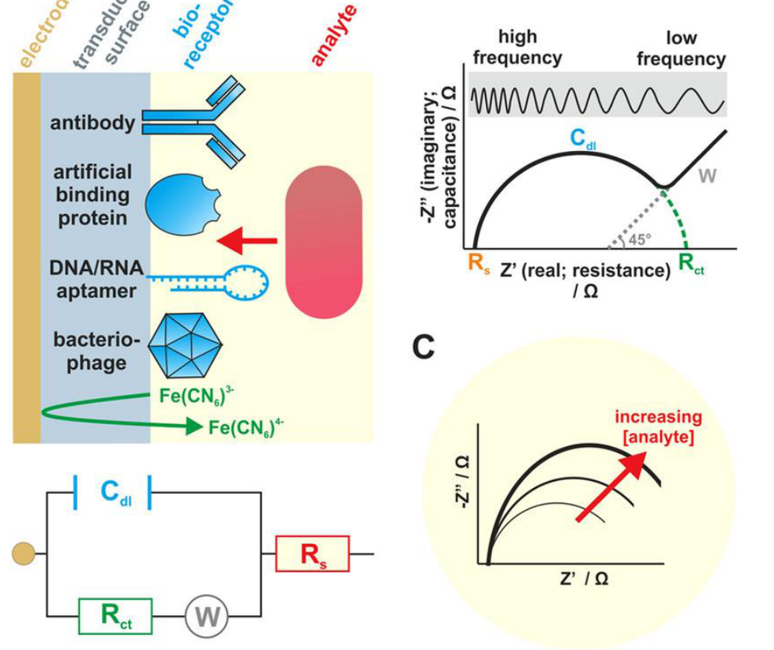
Electrode interface circuit and Nyquist impedance response (original lecture slide)电极界面电路与Nyquist阻抗响应（原课件图）
ENRead the figure: Find R_s, R_ct and C_dl and the
real/negative-imaginary axes. Increasing analyte widens the semicircle
in this illustrated mechanism. Frequency labels indicate which point was
measured; they are not the horizontal axis.
Source / 来源：Week 6 PDF p66; original slide figure / 原课件截图
S608
· [P2] Peak, RMS and voltage–current phase /
峰值、均方根与电压电流相位
P2 Important foundationsP2 重要基础Worked example例题练习Repeated explanation反复讲解Final emphasis仅期末强调
Evidence and review target依据与学习抓手
Review target: Match peak/RMS conventions and recognise capacitor current lead; add impedances as complex quantities.学习抓手：匹配峰值／RMS约定，认出电容电流超前；阻抗按复数相加。
Slide / classroom worked example课件／课堂例题: Week 6 PDF p86; T6-0099–0101
例4输出4.77V为peak，与输入5V peak一致；R+ZC的幅值不是R+|ZC|。
Repeated classroom explanation课堂反复讲解: T6-0092–0101; Week 6 PDF p82–86
交流幅值与频率是课堂基础；原电感式XL误写成2πL/f已更正为2πfL。
Explicit final-exam statement老师明确提到期末: T6-0096; Week 6 PDF p84–86
“You'll also see it in this year's final exam.”
只指完整Bode多频点绘图，不代表本Quiz要完整推导相位。
ENFor a sinusoidal voltage, V_rms=V_peak/√2, and
similarly I_rms=I_peak/√2. RMS describes the effective magnitude for
power in a resistor; it is neither peak-to-peak magnitude nor the signed
cycle average, which is zero for a symmetric sinusoid. Apply this factor
only to the stated sinusoidal waveform, not to every possible
signal.
ENFor ideal components using the voltage phase
relative to current, a resistor has zero phase difference, a capacitor
has negative impedance phase (current leads voltage), and an inductor
has positive impedance phase (current lags voltage). At DC steady state
an ideal capacitor blocks continuous conduction; as frequency rises its
reactance magnitude falls. An ideal inductor has the opposite frequency
trend. Phase sign depends on the stated convention, so check which
signal is the reference.
Week
7 learning block: Bioelectricity, ECG and EEG /
第7学习组：生物电、心电与脑电
Week 7 concept map /
第7周知识框架
ENChapter logic: Ionic gradients and selective
channels create cell voltages; tissue activity reaches electrodes as
potential differences, which are interpreted as EMG, ECG or EEG
patterns.
Recording measures potential differences;
stimulation deliberately applies an electrical input. ECG, EMG and EEG
identify heart, muscle and brain-related recordings.记录测电位差；刺激主动施加电输入。ECG、EMG、EEG分别对应心脏、肌肉及脑相关记录。Details / 详解
Membrane potential and AP
phases膜电位与动作电位阶段
Vm=inside−outside. Na⁺ entry raises the taught
neuronal voltage; later K⁺ exit lowers it, with a possible dip below
rest.Vm=胞内−胞外。课程神经元中Na⁺内流使电压升高，随后K⁺外流使其降低，可短暂低于静息。Details / 详解
Threshold triggers a spike; stronger input
commonly produces more similar spikes per second, not proportionally
taller spikes.阈值决定是否触发；更强输入通常增加每秒相似尖峰数量，不是让单个尖峰成比例变高。Details / 详解
Nernst versus GHKNernst与GHK
Nernst balances one ion; GHK combines ions
with different permeabilities. Zero summed current does not require
every ionic current to vanish.Nernst平衡一种离子，GHK综合不同通透性的多种离子。电流总和为零不要求每项都为零。Details / 详解
Electrode–electrolyte
interface电极—电解质界面
Ionic tissue current meets electronic metal
conduction; the interface adds voltage offsets and frequency-dependent
impedance.组织离子载流与金属电子载流在界面交接；界面加入电压偏移及随频率变化的阻抗。Details / 详解
P / QRS / TP波 / QRS波群 / T波
P: atrial depolarization; QRS: ventricular
depolarization; T: ventricular repolarization. These are waveform
events, not separate leads.P：心房去极化；QRS：心室去极化；T：心室复极化。这是曲线事件，不是三个导联。Details / 详解
ECG leads and RR
interval心电导联与RR间期
A lead defines a voltage-difference view;
II=I+III for the given limb definitions. With RR in seconds, heart
rate=60/RR.导联定义一种电位差视角；所给肢体定义满足II=I+III。RR用秒时，心率=60/RR。Details / 详解
Scalp EEG and wave
frequency头皮脑电与脑波频率
EEG reflects combined neuronal activity at
standardized sites. Frequency comes from complete cycles/elapsed
seconds; amplitude is a different quantity.EEG在标准位置记录神经元共同活动。频率=完整周期数/实际秒数；幅度是另一个量。Details / 详解
C20
· [P1] ECG, EMG and EEG: match the organ and signal /
ECG、EMG与EEG：组织来源对应
P1 First passP1 先掌握Sample Q4样卷Q4Quiz statedQuiz明确提及Repeated explanation反复讲解
Evidence and review target依据与学习抓手
Review target: Match ECG, EMG and EEG to their tissue and distinguish direct recording from smartwatch sleep estimation.学习抓手：会对应ECG心脏、EMG肌肉、EEG脑活动；区分手表睡眠估计与直接脑电记录。
Sample Q4: smartwatch sleep estimation样卷Q4：手表睡眠估计: Sample quiz PDF p1 Q4
Lecturer previewed this sample question老师再次提示这道样题: T7-0053
“You'll see it very soon again.”
这是题型信号，不能保证原题复现；原题机制补充见S706。
Three major biopotential recordings反复介绍三类生物电记录: W7 PDF p5–8; T7-0002–0006; T7-0096
ENKey points
ECG records cardiac electrical
activity;
EMG records muscle electrical activity;
EEG records scalp
potential differences associated with brain activity.
These are
biopotentials measured relative to a reference.
A smartwatch can
estimate sleep from motion and heart-related signals without directly
recording scalp EEG.
中文必会知识点
ECG记录心脏电活动，EMG记录肌肉电活动，EEG记录与脑活动有关的头皮电位差。
它们都是相对于参照测得的生物电位。
智能手表可以用运动与心脏相关信号估计睡眠，而不直接记录头皮EEG。
ENStart from zero: Start with biopotential: a
voltage difference produced by biological activity. Voltage compares two
locations; it is not the amount of electricity stored in an organ.
Electrodes are conductive contacts that let an instrument measure that
difference. ECG means electrocardiogram, recording heart activity; EMG
means electromyogram, recording muscle activity; EEG means
electroencephalogram, recording brain-related activity at the scalp.
ENFollow the mechanism: Cells move charged
particles called ions across their membranes. Many cells acting together
create small voltage changes that can reach recording electrodes. The
instrument compares a recording location with another location or
reference, then amplifies the difference. Think of listening to a crowd
rather than one person: a surface recording combines nearby activity.
This analogy explains summation, not literal sound transmission.
ENTry an example: In an English question, match
cardiac with ECG, muscular with EMG, and scalp or brain with EEG. A
watch using an accelerometer measures motion; its heart sensor provides
heart-rate information. Combining these signals can estimate sleep
patterns. That does not mean the watch directly records EEG or measures
brain-wave frequency. First identify what is physically measured, then
identify what the software estimates.
ENExam wording: Do not infer that every wearable
measures EEG. The sample smartwatch combination is accelerometer plus
heart-rate/heart-rate-variability information. EMG numerical ranges
labelled “for reference” do not remove basic EMG recognition from the
review.
“Again, this one, I leave it to you. You'll see it very soon again.”
老师也说明该睡眠机制课堂没有充分覆盖；本节补足理解，不声称原题必复现或所有手表规格相同。
ENIn an optical pulse sensor, an LED illuminates
tissue and a photodetector records changes in received light as blood
volume changes with each pulse: photoplethysmography, PPG. Pulse timing
can provide heart rate and pulse-interval variability, used as a proxy
for HRV in suitable conditions. An accelerometer separately measures
movement. Software combines such clues to estimate sleep.
ENPPG pulse sensing, SpO₂ oxygen-saturation
estimation and EEG are different measurements. Oxygen saturation
estimates blood oxygenation using wavelength-dependent absorption; it
does not directly count brain-wave cycles. EEG electrodes record scalp
electrical potentials; EMG electrodes record muscle electrical activity.
For sample Q4, motion plus optical pulse/variability supports A. The
fact that LEDs can also be used for SpO₂ does not establish D’s proposed
brain-activity mechanism.
Source / 来源：Sample quiz PDF p1 Q4; Week 7 PDF p7, p43–44, p79–85;
Week 1 PDF p16, p48, p69–75; Week 2 pulse-oximetry section; T7-0053
S707
· [P1] Elementary charge and electrical units /
元电荷与基础电学单位
P1 First passP1 先掌握Quiz statedQuiz明确提及
Evidence and review target依据与学习抓手
Review target: Recall elementary charge and the units A=C/s, V=J/C, Ω=V/A; separate electron motion from conventional current.学习抓手：记元电荷及A=C/s、V=J/C、Ω=V/A，分清电子运动与约定电流方向。
Basic charge/current/voltage facts may not be supplied基础电荷/电流/电压事实需自行记忆: W7 PDF p9–13; T7-0007–0008
“These are some parameters that will not be provided on the exam or the quiz.”
字幕数值有ASR误识，e和库仑换算以原课件正确数值为准；不能把历史期末可带纸套到闭卷Quiz。
ENElectrical charge is quantized: the charge of an
electron is −e and that of a proton is +e, where e≈1.602×10⁻¹⁹ C. One
coulomb corresponds to about 6.24×10¹⁸ elementary charge magnitudes. e
is a charge magnitude; eV is an energy unit. The same numerical factor
appears in converting 1 eV to joules, but coulombs and joules are
different units.
ENCurrent is the rate of charge transfer: I=ΔQ/Δt
for an average, or dQ/dt instantaneously; 1 A=1 C/s. Voltage is energy
per unit charge: 1 V=1 J/C. Resistance has units Ω=V/A. For example,
transferring 2 μC in 1 ms gives an average current of 2 mA, not 2
μA.
ENConventional current follows positive-charge
motion. Thus an electron moving in one direction contributes current in
the opposite direction. Positive charges tend toward lower electrical
potential under an electric field; negative charges respond oppositely.
Biological fluids carry charge mainly through ions, while metal wires
carry it through electrons. The lecturer explicitly identified these
basic charge/unit facts as items that may need recall rather than being
supplied.
B27
· [P1] Neurons, threshold and all-or-none firing /
神经元、阈值与全或无发放
P1 First passP1 先掌握Repeated explanation反复讲解Teacher emphasis课堂强调
Evidence and review target依据与学习抓手
Review target: Explain threshold and all-or-none firing: stronger input often changes firing rate rather than spike size.学习抓手：理解阈值与全或无；更强刺激通常增加发放频率，不让单峰成比例变高。
Threshold explained before the action-potential phases进入五阶段前多次解释阈值: W7 PDF p19–21; T7-0011–0013; T7-0023–0025
Core mechanism supporting the emphasized phases支撑老师强调的动作电位阶段: T7-0028–0030
“These five stages are very important.”
重点是阈值/全或无与阶段的联系；不将这句推广为S701内辅助不应期也被点名。
ENKey points
Dendrites receive input;
the axon
conducts action potentials.
Beyond threshold, a neuronal action
potential is approximately all-or-none;
stronger stimulation commonly
increases firing rate, not single-spike amplitude proportionally.
Below
threshold does not mean zero voltage: a typical neuronal resting value
is about −70 mV, varying by cell.
Passive recording measures activity;
active stimulation applies an external electrical input.
中文必会知识点
Dendrite树突接收输入，axon轴突传导动作电位。
达到threshold阈值后，神经元动作电位近似all-or-none全或无；
更强刺激通常提高firing
rate发放频率，而非成比例增大单个尖峰幅度。
未达阈值不等于零电压：典型神经元静息约−70
mV，不同细胞可不同。
Passive recording被动记录测活动；
active
stimulation主动刺激施加外部电输入。
ENStart from zero: A neuron is a signalling cell.
Dendrites receive many inputs; the cell body integrates them; the axon
carries action potentials toward other cells. Threshold is the level of
excitation needed to trigger a spike. Below threshold, a neuron can
still have a resting voltage and small voltage changes. For example,
moving from −70 to −65 mV is electrical change even if it does not
trigger an action potential.
ENFollow the mechanism: Beyond threshold, the
taught neuronal spike is approximately all-or-none: it fires rather than
being proportionally smaller. Stronger stimulation commonly produces
more spikes per second, a higher firing rate. Think of sending more
similar pulses to communicate stronger input. This describes the course
model, not a promise of identical numerical spike heights in every cell
and recording.
ENTry an example: Compare two teaching traces:
both have similar spike heights, but one contains 5 spikes and the other
10 in one second. Their firing rates are 5 and 10 Hz; the second is more
frequent, not necessarily larger in amplitude. Passive recording
observes activity already occurring. Active stimulation deliberately
applies an input to influence activity. In English questions, do not
read “no spike” as “zero membrane voltage”.
A neuron's parts: dendrites, soma, axon, myelin and terminal buttons.神经元各部分：树突、胞体、轴突、髓鞘与末梢。
ENRead the figure: Start at the branched
dendrites, which receive inputs, then locate the soma and the long axon
leading to the terminal buttons. The yellow sleeves are myelin around
the axon; they are not extra electrodes. This is a single-cell structure
diagram: an action potential propagates along its axon, whereas scalp
EEG records activity contributed by many cells through tissue.
Source / 来源：Week 7 PDF p19; original slide figure / 原课件截图
S701
· [P2] Ion channels, pumps and propagation /
离子通道、离子泵与动作电位传导
P2 Important foundationsP2 重要基础Repeated explanation反复讲解Supporting concept辅助理解
Evidence and review target依据与学习抓手
Review target: Separate pumps from channels and ligand gating from voltage gating; understand trigger-zone propagation.学习抓手：分清泵/通道及配体/电压门控，懂触发区与沿轴突传导。
Mechanism in the classroom action-potential video课堂动作电位影片解释机制: W7 PDF p19–21, p34–38; T7-0023–0025
Refractory period is explanatory support不应期是辅助解释: S701 supporting paragraph; OpenStax A&P 2e §12.4
不应期术语未在本组原课件/老师提示中单独强调；该段按P3辅助阅读，不因C21重要而一起升级。
ENThe sodium–potassium pump maintains the
concentration gradients: it moves Na⁺ outward and K⁺ inward using
metabolic energy. Ion channels instead allow selected ions to flow when
their gates open. The rapid rising and falling phases of the taught
neuronal action potential are mainly channel events. Repolarization is
not simply the pump suddenly switching on.
ENLigand-gated means that a chemical messenger
opens a channel; voltage-gated means that membrane voltage controls the
gate. Dendritic inputs can produce small graded changes. At the axon
hillock or trigger zone, a sufficiently strong combined input reaches
threshold and activates a spike. Threshold is the trigger level, not the
height of the completed spike.
ENPropagation means that excitation triggers the
next section of axon membrane, so the action potential is regenerated
along the axon rather than merely fading like a passive voltage
disturbance. In the course model, stronger stimulation produces more
similar spikes, not a proportionally larger spike at every position. A
spike travelling along an axon and a surface EEG trace are different
recording scales.
ENSupporting explanation: after a spike, channel
inactivation and recovery produce a refractory period during which the
membrane briefly cannot fire again normally, helping explain why spikes
remain separate events. This term was not separately emphasized as a
Quiz memorization requirement in the supplied slides.
Source / 来源：Week 7 PDF p19–21, p34–38; T7-0023–0025;
不应期辅助核实：OpenStax
§12.4
C21
· [P1] Membrane potential and action-potential phases /
膜电位与动作电位阶段
P1 First passP1 先掌握Teacher emphasis课堂强调Repeated explanation反复讲解
Evidence and review target依据与学习抓手
Review target: Recognize resting, depolarizing, peak, repolarizing and hyperpolarizing phases and the Na⁺/K⁺ sequence.学习抓手：看懂动作电位五阶段与Na⁺内流、K⁺外流；未达阈值仍有膜电位。
Five phases explicitly called very important老师明确说五阶段很重要: W7 PDF p33–38; T7-0028–0030
“These five stages are very important.”
Ion gradients and membrane voltage反复讲解离子梯度与膜电位: W7 PDF p19–27; T7-0011–0018; T7-0023–0025
约−70 mV是典型静息示例，不能推为所有细胞恒负；小于阈值不等于电压为零。
ENKey points
Use Vₘ=Vinside−Voutside.
A resting
membrane is usually negative inside.
Depolarization means becoming less
negative and may include a positive overshoot;
repolarization returns
toward rest;
hyperpolarization becomes more negative than rest.
The
taught sequence emphasizes Na⁺ influx and subsequent K⁺ efflux.
中文必会知识点
使用Vₘ=Vinside−Voutside。
静息时细胞内通常为负。
Depolarization表示变得不那么负，并可能出现正向超射；
repolarization返回静息；
hyperpolarization比静息更负。
课程重点顺序为Na⁺内流，随后K⁺外流。
ENStart from zero: A cell membrane separates
intracellular fluid, inside the cell, from extracellular fluid, outside.
Ions are charged atoms or molecules: Na⁺ is a positive sodium ion and K⁺
a positive potassium ion. Membrane potential is Vₘ=Vinside−Voutside. If
the outside is our zero reference and the inside is −70 mV, Vₘ is −70
mV. Negative means lower electrical potential, not absence of electrical
activity.
ENFollow the mechanism: In the taught neuronal
action potential, sodium channels open and positive Na⁺ enters. The
inside becomes less negative: depolarization. Voltage can briefly become
positive. Later sodium entry declines and K⁺ leaves, bringing voltage
downward: repolarization. Continued potassium movement can briefly make
voltage more negative than rest: hyperpolarization. Channels are
selective gates, but the analogy does not mean every ion can use every
gate.
ENTry an example: Follow the numbers: −70→−40 mV
is depolarization, even though both values remain negative. +30→−70 mV
is repolarization; −70→−80 mV is hyperpolarization relative to a −70 mV
resting level. Thus becoming less negative is the key phrase. The
statement “inside is always negative” fails during a positive overshoot.
Remember 1 mV=0.001 V when calculating or reading axes.
中文用例子理解：沿数值判断：−70→−40
mV是去极化，虽然两个数都仍为负；+30→−70 mV是复极化；以−70
mV为静息基准，−70→−80 mV是超极化。因此becoming less
negative“变得不那么负”是关键表达。“细胞内始终为负”遇到动作电位的正向超射就不成立。计算或读坐标时，记住1
mV=0.001 V。
ENExam wording: “The inside is always negative” is
false during an action potential. Keep mV separate from V. Long
multi-ion membrane equations and derivations are secondary to the phase
names, ion directions and sign convention.
Action-potential phases: read voltage vertically and time horizontally.动作电位阶段：纵轴读电压，横轴读时间。
ENRead the figure: Start near the resting negative
voltage; rising is depolarization, falling is repolarization, and the
dip below rest is hyperpolarization. The dashed threshold is a trigger
level, not peak height. The drawn numerical values illustrate this model
rather than every cell.
Source / 来源：Week 7 PDF p35; original slide figure / 原课件截图
B28
· [P2] Ionic gradients: Nernst versus GHK离子梯度：Nernst与GHK
P2 Important foundationsP2 重要基础Teacher emphasis课堂强调Lower priority降低优先级
Evidence and review target依据与学习抓手
Review target: Know how ion gradients and selective permeability create membrane voltage; distinguish single-ion Nernst from multi-ion GHK.学习抓手：懂离子梯度、选择性通透与膜电位；认Nernst单离子、GHK多离子，不主攻长式。
Take away the ion-concentration concept老师要求抓住离子浓度核心概念: W7 PDF p22–30; T7-0014–0020
“This is the most important concept that you should take away from this equation.”
Long cellular equations presented for reference长细胞方程仅供参考: T7-0017–0021
“This is more like a mathematic expression. You don't need to memorize this.”
不把局部长式降优先扩大为整个膜电位概念不考；具体this无同步翻页，不能逐式宣称全部排除。
ENKey points
Membrane voltage arises from ion
gradients and selective permeability: typically more K⁺ inside and Na⁺
outside.
Nernst describes the equilibrium potential for one ion;
Goldman–Hodgkin–Katz (GHK) includes several ions weighted by
permeability.
Zero net membrane current does not require each ionic
current to be zero.
Learn the meaning of the equations without
prioritizing their long derivations.
中文必会知识点
膜电压来自离子梯度与选择性通透：通常K⁺胞内更多、Na⁺胞外更多。
Nernst能斯特描述单种离子的平衡电位；
Goldman–Hodgkin–Katz（GHK）按通透性考虑多种离子。
跨膜净电流为零不要求每种离子电流都为零。
记住方程含义，长推导不作为优先任务。
ENStart from zero: An ion concentration gradient
means unequal amounts per unit volume on two sides. Typically K⁺ is more
concentrated inside a neuron and Na⁺ outside. An open channel permits
selected ions to cross: this is permeability. For K⁺, concentration
favours outward movement, while a negative interior attracts positive K⁺
inward. The combination of concentration and electrical effects
determines movement, not concentration alone.
ENFollow the mechanism: Nernst asks a single-ion
question: what voltage balances the concentration drive for this ion,
giving zero net flow of that ion under its equilibrium assumptions? GHK
considers several ions and their different permeabilities. Imagine
several selective doors: how open each door is affects the combined
outcome. This is a guide to weighting; GHK voltage is not simply an
ordinary arithmetic average of the individual Nernst voltages.
ENTry an example: For conceptual questions, “one
ion’s equilibrium potential” points to Nernst; “multiple ions weighted
by permeability” points to GHK. Zero total current does not require
every ionic current to be zero. In a simple teaching example, +2 units
from one contribution and −2 from another sum to zero while both remain
nonzero. You should understand this balance before trying a long
equation or memorizing a particular resting voltage.
中文用例子理解：概念题看到one ion’s equilibrium
potential“单种离子的平衡电位”，对应Nernst；看到multiple ions weighted by
permeability“按通透性考虑多种离子”，对应GHK。总电流为零，不要求每种离子的电流都为零。一个简单例子是：某项贡献+2单位，另一项−2单位，合计为零，但两项各自都不为零。先理解这种平衡，再去看长公式或背某个静息电压数值。
ENClarify the concept: In the slide’s
equivalent-circuit branch, Iion=gion(Vm−Eion), with conductance
gion=1/Rion. Vm−Eion expresses the electrochemical driving force as a
voltage relative to that ion’s equilibrium potential. If Vm=Eion, this
branch’s net current is zero in the model, even with an open channel.
That is different from GHK’s zero sum of several nonzero ionic currents.
Treat this as supporting interpretation, not a required long
derivation.
Inside and outside the membrane: ion concentration gradients and a selective channel.细胞膜内外：离子浓度梯度与选择性通道。
ENRead the figure: The enlarged membrane separates
extracellular fluid on the left from the intracellular region on the
right. Read the colored wedges below: Na+ and Cl− are more concentrated
outside in this model, while K+ is more concentrated inside. The black
arrow illustrates K+ movement through a selective channel; actual net
ionic flow depends on both concentration and electrical driving forces.
The +/− signs show charge separation near the membrane, not that the
whole intracellular fluid contains only negative ions.
Gel and electrode–skin circuit explained讲解凝胶导电接触与界面电路: W7 PDF p41–42; T7-0035–0038
Long interface circuit and Bode plotting are final-exam examples长界面电路与Bode作图为期末例题: W7 PDF p77–78; T7-0077–0081
“This question is a very typical final exam question.”
保留元件含义与高低频趋势；不因期末例题提升为Quiz长计算重点。
ENKey points
Tissue carries ionic current;
metal
leads carry electronic current.
The interface introduces a half-cell
potential and frequency-dependent polarization/contact impedance.
The
course equivalent circuit contains a half-cell source, an interfacial
resistance/capacitance branch and solution resistance.
Poor or unequal
contact can distort recorded signals;
a pure series-resistor exercise is
only a simplified model.
中文必会知识点
组织中为离子电流，金属导线中为电子电流。
界面引入half-cell
potential半电池电位及随频率变化的极化/接触阻抗。
课程等效电路含半电池电源、界面电阻/电容支路及溶液电阻。
接触差或两侧不匹配可能使记录失真；
纯串联电阻练习只是简化模型。
ENStart from zero: An electrolyte is a fluid
containing mobile ions, such as dissolved salts. Ions carry electrical
charge in tissue fluids; electrons carry charge in metal wires. At the
electrode–electrolyte interface, these two conducting systems meet. The
electrode is therefore more than a perfect wire touching skin: its
surface interacts with the fluid and adds its own electrical behaviour
to the measurement.
ENFollow the mechanism: The course represents this
interface with an equivalent circuit, a simplified electrical model. Ehc
is the half-cell potential, a surface-related voltage offset. Rs
represents resistance in the fluid. Rd and Cd represent interfacial
resistance and capacitance associated with charge transfer and
polarization. Capacitance allows charge separation at the surface, so
response depends on changing frequency. These components explain
behaviour; they are not literal separate parts hidden under the
electrode.
ENTry an example: Suppose the biological voltage
stays unchanged but electrode contact shifts. The recorded voltage can
change because contact impedance or surface potential changed: this is
an artifact. Two unequal contacts can also introduce unequal errors that
differential subtraction cannot fully cancel. Thus a pure
series-resistor problem is useful for practising V=IR, but it omits the
full interface. In English, look for contact impedance, polarization and
half-cell potential as interface terms.
S702
· [P2] Skin contact and interface impedance皮肤接触与界面阻抗
P2 Important foundationsP2 重要基础Repeated explanation反复讲解Final emphasis仅期末强调
Evidence and review target依据与学习抓手
Review target: Explain gel contact, volume conduction and low/high-frequency interface trends; unequal contacts leave residual noise.学习抓手：懂凝胶接触、容积传导和界面高低频趋势；知道接触不匹配会残留噪声。
Contact and small-signal measurement discussed课堂讲接触与微弱信号记录: W7 PDF p41–42, p49–54; T7-0035–0046
“离子游到皮肤”的课堂类比按容积传导解释，不作逐字生理机制。
Long mains-interference and interface calculations长工频干扰/界面计算属期末例题: W7 PDF p74–78; T7-0074–0081
“This question is a very typical final exam question.”
Quiz先理解趋势与匹配；完整电阻网络、复数化简与全Bode作图降优先。
ENSurface electrodes do not have to touch the
muscle itself. Ionic currents in conductive tissue fluids produce
extracellular voltage differences that can be detected at the skin: this
is volume conduction. Conductive gel improves electrode–skin contact.
Changing contact pressure, drying gel or motion can change contact
impedance and add an artifact even if muscle activity stays the
same.
ENFor the slide model Rs+(Rd in parallel with Cd),
low frequency makes the capacitor branch difficult to pass, so the
impedance approaches Rs+Rd. At high frequency the capacitor branch
becomes easier to pass and bypasses Rd, so the impedance approaches Rs.
Thus a single fixed resistor cannot describe this interface at every
frequency. Ehc is a voltage offset and is not the same quantity as
impedance.
ENDifferential measurement cancels interference
only to the extent that it reaches both inputs equally. Unequal
electrode contact impedances can turn shared mains interference into
unequal input voltages, leaving a residual after subtraction. This
explains the ECG interference example conceptually; its long
resistor-network calculation is secondary to good contact, matched
inputs and common-mode rejection.
Source / 来源：Week 7 PDF p41–42, p49–54, p74–78; T7-0035–0046,
T7-0073–0081
C22
· [P1] ECG morphology and reading frequency from a trace /
ECG波形与从时轴读频率
P1 First passP1 先掌握Sample Q5样卷Q5Teacher emphasis课堂强调Repeated explanation反复讲解
Evidence and review target依据与学习抓手
Review target: Match P/QRS/T to cardiac events and calculate frequency from complete cycles over elapsed time.学习抓手：会认P/QRS/T；按完整周期数÷实际时间算频率，先看横轴单位。
Sample Q5: EEG frequency from a trace样卷Q5：脑电时轴读频率: Sample quiz PDF p1 Q5
低清、不规则样图仅暂估C≈45 Hz；老师未确认最终字母。
Read the actual time span, not the ending tick老师反复纠正时间窗口误读: W7 PDF p84–87; T7-0092–0095
“You need to pay attention to the x axis.”
ECG waveform and beat interval讲解心电波形与峰间时间: W7 PDF p65–69; T7-0068–0071
P/QRS/T的定义保留；更详细生理与诊断留后续课程，不背图上所有近似时长。
ENKey points
The P wave relates to atrial
depolarization, the QRS complex to ventricular depolarization, and the T
wave to ventricular repolarization.
For a reasonably periodic trace,
frequency f=N/Δt or f=1/T.
Always read the horizontal-axis unit
first.
中文必会知识点
P wave对应心房去极化，QRS
complex对应心室去极化，T
wave对应心室复极化。
近似周期波形的频率f=N/Δt或f=1/T。
必须先读横轴单位。
ENStart from zero: An ECG is a voltage-versus-time
trace. The atria are the heart’s upper chambers; the ventricles are its
lower pumping chambers. P marks atrial depolarization, QRS ventricular
depolarization, and T ventricular repolarization. These labels describe
electrical stages, which are related to contraction but are not
identical to mechanical movement. P, QRS and T are parts of a waveform,
not three separate ECG leads.
ENFollow the mechanism: Frequency asks how many
complete repetitions occur each second; its unit is hertz, Hz. Period T
asks how long one repetition takes. Therefore f=1/T, or f=N/Δt for N
complete cycles in a time window Δt. Picture repeatedly walking the same
loop: count completed loops, not every step. For a waveform, do not
count both its upward and downward portions as separate cycles.
ENTry an example: Suppose a teaching trace shows
10 complete cycles in 200 ms. Convert 200 ms to 0.200 s, then calculate
f=10/0.200=50 Hz. Eleven successive matching peaks contain ten
peak-to-peak intervals. An irregular EEG trace may support only a rough
estimate: choose a representative window and state its uncertainty. A
taller wave means larger voltage amplitude; it does not automatically
mean higher frequency.
ENExam wording: Sample Q5 is a rough estimate from
a low-resolution, irregular EEG trace, around 45 Hz with C (40–48 Hz)
only a provisional reference, not a confirmed answer. Treat it as
graph-reading practice rather than an exact numerical standard.
ENAtria are receiving chambers and ventricles are
pumping chambers. The right side sends oxygen-poor blood from the body
to the lungs; the left side sends oxygen-rich blood from the lungs to
the body. Heart valves promote one-way flow. Left and right describe the
person’s anatomy, not necessarily the left and right of a drawing.
ENSystole is the contraction or pumping phase;
diastole is the relaxation and filling phase. An ECG records the
electrical activation associated with this cycle, not blood flow itself.
Electrical depolarization helps initiate contraction, but the voltage
trace and the mechanical contraction are different quantities.
ENThe SA node, sinoatrial node, is the usual
pacemaker that starts the normal heartbeat. Activation spreads through
the atria and then through the AV node, atrioventricular node, before
ventricular activation. The ordered timing helps the atria and
ventricles work in sequence. Pacemaker cells set the timing; the larger
muscle tissue performs most of the pumping.
S704 ·
[P2] ECG waves, segments and intervals心电的波、段与间期
P2 Important foundationsP2 重要基础Supporting concept辅助理解Lower priority降低优先级
Evidence and review target依据与学习抓手
Review target: Distinguish wave, segment and interval; locate PR/ST/QT/RR and the cardiac events they span.学习抓手：分清波、段、间期；图上找PR/ST/QT/RR与对应事件，不背全部时长。
Labels on the ECG lecture figure原课件心电图的标签: W7 PDF p65–67; T7-0068–0071
More detailed ECG interpretation deferred复杂心电解释留后续课程: T7-0068–0069
“Here I will not go too deep.”
P/QRS/T归C22先掌握；本小节补图轴词，诊断规则与近似持续时间不是普适常数。
ENA wave is a visible deflection; a segment is the
portion between waves; an interval includes a specified time span
containing one or more waves. Do not confuse a flat-looking segment with
a zero membrane potential in every heart cell. The ECG is a difference
recorded at the body surface, and different cell activities can cancel
in that difference.
ENPR interval runs from the start of P to the
start of QRS: from the start of atrial depolarization to the start of
ventricular depolarization. ST segment lies after QRS and before T. QT
interval runs from the start of QRS to the end of T, covering
ventricular depolarization through repolarization. RR is instead the
spacing between successive R peaks, used for heart-rate calculation.
ENAtrial repolarization is usually hidden by the
larger QRS complex; the T wave is ventricular repolarization. The slide
shows approximate P, PR, QRS and T durations for orientation.
Understanding which event and time span each label represents is more
useful here than treating those approximate durations as universal
constants or as a diagnosis.
Source / 来源：Week 7 PDF p65–67; T7-0068–0070; 图示定义核实：OpenStax
§19.2
Original slide / 原课件图
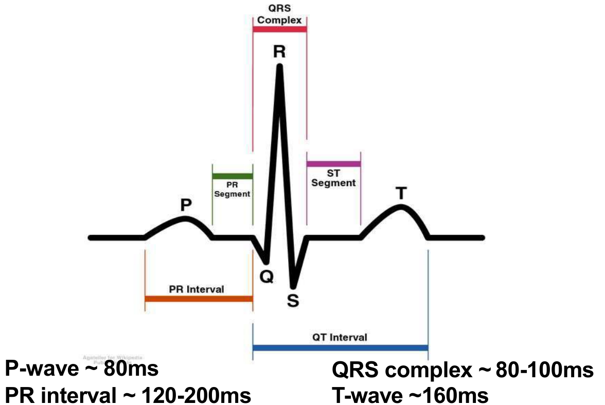
ECG wave labels and intervals from the lecture slide.原课件的心电波与间期标记。
ENRead the figure: Locate P, QRS and T first, then
follow the horizontal spans of PR, ST and QT. These are features within
a trace, not limb lead I/II/III. Durations on this slide are approximate
reference values.
Source / 来源：Week 7 PDF p66; original slide figure / 原课件截图
B30 ·
[P2] ECG leads, heart rate and EMG心电导联、心率与肌电
P2 Important foundationsP2 重要基础Repeated explanation反复讲解Supporting concept辅助理解Lower priority降低优先级
Evidence and review target依据与学习抓手
Review target: Distinguish electrodes from ECG leads; use II=I+III and heart rate=60/RR with RR in seconds.学习抓手：分清电极、导联和P/QRS/T；会II=I+III与心率=60/RR（RR用秒）。
Three contacts and potential-difference views讲解三个接触点与多个电位差: W7 PDF p68–69; T7-0071–0073
课堂将三导联与三波峰联系的口语不够准确，资料按原导联电位差定义纠正。
ECG trace explains beat timing心电曲线说明峰间时间与心率: W7 PDF p66–69; T7-0070–0071
这是曲线解释，未发现该处有单独命名的课后习题；不贴“课后例题”标签。
EMG amplitude/bandwidth numbers are reference valuesEMG幅度/带宽数值仅供参考: W7 PDF p47–48; T7-0039
“When I say it's just for reference, I really means that it will not be on the quiz. It will also not be on the exam.”
近邻页为EMG数值范围，不能据此排除EMG定义、电极位置和后续差分原理。
ENKey points
An ECG lead is a
potential-difference view;
P, QRS and T are features within a waveform,
not three different leads.
For standard limb leads, II=I+III.
Heart
rate=60/RR when RR is in seconds;
RR=0.8 s gives 75 beats/min.
EMG
measures muscle electrical activity, with electrode placement and
reference affecting the recorded signal.
中文必会知识点
ECG
lead心电导联是一种电位差观察视角；
P、QRS、T是同一波形内的特征，不是三个不同导联。
标准肢体导联满足II=I+III。
RR用秒时，heart
rate心率=60/RR；
RR=0.8
s对应75次/分。
EMG肌电测肌肉电活动，电极位置与参考位置影响记录。
ENStart from zero: An electrode is a physical
contact; an ECG lead is a defined voltage difference between contacts or
references. Think of viewing the same event from different camera
angles: different leads view the same heart activity differently. P, QRS
and T are stages visible within a trace. They are not lead I, lead II
and lead III, and changing the lead can change waveform appearance.
ENFollow the mechanism: For the three limb
contacts in the slide, I=V₂−V₁, II=V₃−V₁ and III=V₃−V₂. Adding I and III
cancels V₂, leaving II. Example: V₁=1.0, V₂=1.2 and V₃=1.5 mV give
I=0.2, III=0.3 and II=0.5 mV. This is a voltage identity for the stated
lead definitions, not a claim that three different heart stages are
being added together.
ENTry an example: The RR interval is the time from
one R peak to the next. If RR=0.8 s, one beat takes 0.8 s: 1/0.8=1.25
beats per second, then ×60 gives 75 beats per minute. This is a teaching
calculation, not a diagnosis. EMG instead records muscle electrical
activity; which muscle and where the recording and reference electrodes
sit affect the signal. Heart-rate arithmetic does not automatically
apply to arbitrary EMG spikes.
Surface EMG: two electrode potentials form the differential signal Vd=V1−V2.表面肌电：两个电极的电位形成差分信号Vd=V1−V2。
ENRead the figure: Find the two black electrode
points above the skin; they measure local potentials V1 and V2 arising
from muscle electrical activity conducted through tissue. The red
voltage arrow and formula indicate subtraction, not two separate kinds
of muscle. Noise that reaches both inputs with the same value cancels
ideally; unequal interference remains. Surface EMG generally contains
contributions from multiple muscle fibers, rather than the intracellular
voltage of one fiber.
Source / 来源：Week 7 PDF p53; original slide figure / 原课件截图
B31
· [P2] EEG placement and brain-wave vocabulary脑电位置与脑波词汇
P2 Important foundationsP2 重要基础Teacher emphasis课堂强调Repeated explanation反复讲解
Evidence and review target依据与学习抓手
Review target: Know scalp EEG is population activity, why electrode placement matters, and the slow-to-fast band order.学习抓手：懂头皮EEG测群体活动、位置的重要性，认δ→θ→α→β→γ由慢到快。
EEG spatial placement emphasized强调脑电电极空间位置: W7 PDF p79–84; T7-0085–0087
“The spatial location of each electrode is very, very important.”
不能照课堂宽泛说法推成EMG任意两点都等效；不背电极数为所有系统固定值。
Brain-wave frequency and state associations讲脑波频率与状态关联: W7 PDF p84–87; T7-0091–0096
详细频带边界随约定而变；原p84的gamma<25有误。频率读图高优先另见C22/S705。
ENKey points
Scalp EEG reflects population
activity;
the 10–20 system standardizes electrode positions.
exact boundaries vary by
convention, and its gamma <25 label is erroneous.
Alpha often
accompanies relaxed wakefulness, delta slow-wave sleep;
these are
associations, not diagnoses.
中文必会知识点
头皮EEG反映群体活动，10–20
system规范电极位置。
由慢到快为delta δ、theta θ、alpha α、beta β、gamma
γ。
W7 p84列出δ 1–3、θ 4–7、α 8–12、β 13–25
Hz；
具体边界随约定变化，其中γ<25为错误标注。
Alpha常伴随放松清醒，delta常见于慢波睡眠；
这是相关表现，不是诊断规则。
ENStart from zero: Scalp EEG records small voltage
differences associated with the combined activity of many neurons,
especially coordinated synaptic activity. It is not simply a direct
recording of one neuron’s action potential. The international 10–20
system gives standard scalp positions, so recordings can use comparable
locations. Imagine microphones placed consistently around a crowd;
placement matters. This analogy describes collective measurement, not
actual sound or precise identification of every individual neuron.
ENFollow the mechanism: Brain-wave bands group
oscillations by frequency: delta, theta, alpha, beta, gamma run from
slower to faster. Read time on the horizontal axis and count complete
cycles to estimate frequency; vertical height describes voltage
amplitude. The slide lists delta 1–3, theta 4–7, alpha 8–12 and beta
13–25 Hz. These are course conventions, not universal boundaries. Its
gamma “<25 Hz” label is inconsistent and should not be memorized.
ENTry an example: A teaching trace with ten cycles
in one second is 10 Hz, fitting the slide’s alpha range. Four cycles in
one second would be slower despite taller peaks. Alpha often accompanies
relaxed wakefulness and delta slow-wave sleep, but these are
associations rather than individual diagnostic rules. For English
multiple-choice questions, distinguish “higher amplitude” from “higher
frequency” and retain the slow-to-fast band order before memorizing
numerical limits.
ENClarify the concept: In the conventional 10–20
labels shown, odd numbers identify left-hemisphere sites and even
numbers right-hemisphere sites; z marks the midline. F/T/C/P/O label
regions. These are spatial recording-site labels, not frequency bands,
and the left/right convention refers to the subject.
Scalp EEG recording and the international 10–20 electrode layout.头皮EEG记录与国际10–20电极布局。
ENRead the figure: The left picture links a scalp
electrode cap to several recorded traces. The right top view shows named
recording sites: F, T, C, P and O refer to frontal, temporal, central,
parietal and occipital regions; z marks the midline. These labels
identify electrode positions, not the names of brain-wave frequency
bands. Multiple electrodes sample different spatial combinations of
brain activity; a recording site is not an isolated single neuron.
ENThe slide associates beta with awake, alert
activity; alpha with relaxed wakefulness; theta with deeper relaxation
or drowsier states; and delta with deep sleep. Gamma is a faster band.
These associations overlap and depend on recording context. A single
frequency label does not uniquely prove a sleep stage, a thought or a
disease.
ENWhen the visible window starts at 0.2 s and ends
at 0.8 s, its duration is 0.6 s, not 0.8 s and not one second. Count
complete repetitions within that duration, then divide by 0.6 s. Real
EEG often contains multiple frequencies; a rough cycle count estimates a
representative oscillation, not the complete frequency spectrum.
Vertical height and horizontal repetition rate must be read
separately.
ENChapter logic: Choose a cell-recording method,
preserve and amplify the weak signal, then select its useful frequency
band; this chapter stops at Parts One and Two through PDF p29.
A pipette forms a tight membrane seal. Voltage
clamp holds voltage/read current; current clamp applies current/read
voltage.吸管与膜紧密封接。电压钳保持电压、读电流；电流钳施加电流、读电压。Details / 详解
MEA / raster plot多电极阵列 / 栅格图
MEA records extracellular activity from many
sites in parallel. A raster plot shows when each channel detects
spikes.MEA并行记录多个位点的细胞外活动；栅格图显示各通道何时检测到尖峰。Details / 详解
High input impedance reduces loading; low
output impedance drives a load; gain specifies amplification. They are
independent roles.高输入阻抗减少加载，低输出阻抗驱动负载，增益决定放大倍数；三者分工不同。Details / 详解
Preamplifier /
isolation前置放大 /
隔离
The preamplifier handles a weak input;
isolation limits unwanted electrical paths and supports patient
protection.前置放大处理弱输入；隔离限制不希望出现的电连接路径，帮助保护被测者。Details / 详解
Inverting /
non-inverting反相 /
同相
In the shown ideal circuits, gains are −Rf/Ri
and 1+Rf/Ri. The minus sign reverses polarity, not amplification
itself.所示理想电路增益为−Rf/Ri与1+Rf/Ri。负号表示极性翻转，不表示没有放大。Details / 详解
Filters attenuate unwanted frequency
components: low-pass keeps slower components, high-pass faster,
band-pass an interval, notch a narrow rejected band.滤波器削弱不需要的频率成分：低通保留较慢、高通较快、带通保留区间、陷波抑制窄频带。Details / 详解
Frequency-response
graph频率响应图
Horizontal frequency and vertical gain reveal
the retained region. The local RC worked example is excluded; basic
filter-role recognition remains.横轴频率、纵轴增益显示保留区域。局部RC例题被排除，基本滤波功能辨认仍保留。Details / 详解
P1 First passP1 先掌握Quiz statedQuiz明确提及Repeated explanation反复讲解
Evidence and review target依据与学习抓手
Review target: Recognize patch-clamp and MEA structures, recording location and manual versus parallel throughput.学习抓手：辨识膜片钳与MEA的结构、胞内外记录及逐次/并行通量差别。
Two methods explicitly named for quiz/exam老师明确点名Quiz/exam的两个方法: W8 PDF p9–13; T8-0014–0016; T8-0018
“So if on a quiz or exam, if you happen to see any question asking you, please write down the two main method.”
原话还要求能画图简述；当前单选重点为图识别与比较，不要求模拟卷手写图。
Pipette and array recording explained in detail细讲微吸管与阵列记录: T8-0005–0016
不背吸管尺寸、平台96孔、历史年代等示例数字。
ENKey points
Patch clamp forms a tight seal
between a micropipette and a membrane patch and can record controlled
membrane currents or potentials depending on the mode.
A MEA records
extracellular signals at many electrode sites in parallel.
The lecturer
explicitly names these two methods for Quiz/exam recognition.
中文必会知识点
Patch
clamp用微吸管与膜片形成紧密封接，根据模式记录受控的膜电流或电位。
MEA通过多个电极位点并行记录细胞外信号。
老师明确点名这两种方法可作为Quiz或考试的辨识内容。
ENStart from zero: Patch clamp and MEA answer
different measurement questions. A micropipette is a very small glass
tube containing conducting liquid and an electrode. In patch clamp, its
opening contacts a tiny patch of cell membrane and forms a tight seal.
This close electrical connection allows detailed measurements from that
cell or membrane patch. “Clamp” means controlling an electrical
variable, not mechanically squeezing the whole cell.
ENFollow the mechanism: In voltage-clamp mode, the
instrument holds a chosen membrane voltage and measures the current
needed; in current-clamp mode, it applies a chosen current and records
voltage. A multielectrode array, MEA, instead places many electrodes
near cells and records extracellular signals in parallel. Think of one
close inspection point versus many listening stations. This analogy
captures measurement coverage; it does not imply that the electrical
signals are sounds.
ENTry an example: If an English question describes
a glass pipette, membrane patch and tight seal, identify patch clamp. If
it describes patterned electrodes, many recording sites and simultaneous
extracellular recording, identify MEA. A standard MEA does not directly
report the intracellular membrane voltage at every site. Conversely, a
single patch-clamp recording does not automatically provide parallel
recordings from an entire network. Match the geometry and measured
quantity together.
ENClarify the concept: Whole-cell patch clamp: a
glass micropipette first forms a tight seal with a small membrane patch;
the patch beneath the opening is then disrupted to provide electrical
access to the cell interior. It is not simply a hollow needle puncturing
anywhere through a cell. Configuration and clamp mode are different:
voltage clamp holds voltage and reads current; current clamp applies
current and reads voltage.
ENExam wording: Recognize the pipette–membrane
seal versus the patterned electrode array. Do not replace a standard
electrode array with the excluded detailed conformal-electrode
material/design requirements.
Intracellular versus extracellular recording (original lecture figure).细胞内与细胞外记录（原课件图）。
ENRead the figure: The patch electrode accesses
the cell interior; the external electrode stays outside. Compare the two
illustrated waveforms: their shapes and amplitudes need not be the same.
Position and recording method determine what voltage is measured.
Source / 来源：Week 8 PDF p9; original slide figure / 原课件截图
Original slide / 原课件图
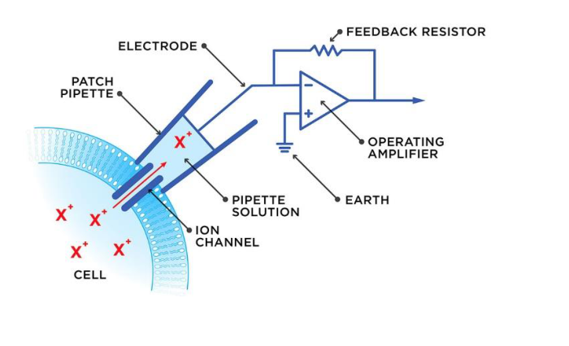
Patch pipette connected to a feedback amplifier (original lecture figure).膜片吸管与反馈放大器连接（原课件图）。
ENRead the figure: Find the patch pipette touching
the membrane, the electrode inside its solution, and the operating
amplifier with a feedback resistor. The pipette seal selects the
membrane region for electrical recording; this is different from a flat
MEA electrode beneath cells.
Source / 来源：Week 8 PDF p9; original slide figure / 原课件截图
S801
· [P1] Recording-method trade-offs and raster plots /
记录方法的优缺点与栅格图
P1 First passP1 先掌握Quiz statedQuiz明确提及Repeated explanation反复讲解Supporting concept辅助理解
Evidence and review target依据与学习抓手
Review target: Compare patch-clamp and MEA throughput and read a raster plot as spike timing rather than voltage height.学习抓手：比较膜片钳/MEA通量，认栅格图的时间、通道与尖峰；刻痕不表示电压高度。
Patch clamp and MEA explicitly remain the key methods老师重申膜片钳和MEA是关键方法: W8 PDF p9–13; T8-0014–0018
“The answer will be these two.”
明确题型信号只指两个主方法；栅格图是MEA影片讲解中的理解工具，不是单独点名必考。
MEA parallel-recording advantages and video explained讲阵列并行记录优势及影片: T8-0009–0016
Impedance and optical comparison columns are secondary阻抗/光学对照列次要: W8 PDF p13; T8-0016–0018
“If you're interested, you can search for it.”
该两列及细优缺点按P3浏览；不要把主方法的明确考试信号平均分给所有方法。
ENPatch clamp allows detailed controlled-current
or controlled-voltage measurements in a selected cell or membrane patch,
but precise pipette positioning and skilled operation limit manual
throughput. A standard MEA can record many extracellular sites in
parallel without inserting a pipette into each cell; it is convenient
for repeated network recordings. Its signal also depends on electrode
contact and cell density or maturity. Many sites do not automatically
mean a complete intracellular voltage map.
ENA raster plot summarizes spike timing: the
horizontal axis is time, each row represents one recording electrode,
and each short mark denotes a detected spike. Marks aligned across rows
suggest coordinated firing; dense bursts differ from isolated spikes.
The marks primarily show when spikes occur, not their voltage
amplitudes. This is how a MEA’s many channels become a readable picture
of network activity.
ENThe comparison slide also shows impedance and
optical methods. Bulk impedance reflects an electrical response of the
measured sample or culture, rather than automatically identifying each
individual cell. Optical reporters can change fluorescence with cellular
activity and provide many imaging sites. However, fluorescence intensity
is not itself an absolute voltage in millivolts; interpreting it as
electrical activity may require calibration. Patch clamp and MEA remain
the two methods the lecturer explicitly asked students to recognize.
Recognize four cellular recording approaches by the probe and measured signal.从探头与测量信号辨认四种细胞记录方法。
ENRead the figure: Read left to right: an MEA uses
several electrode sites near cells; patch clamp uses a glass pipette
sealed against a membrane region; impedance measurements apply
electrical probing and measure the voltage–current relationship; optical
techniques detect a light-based reporter response. The cartoons show
different measurement interfaces, not interchangeable ways to obtain
exactly the same waveform. The illustrated MEA arrangement is
extracellular. For a voltage-sensitive optical reporter, quantitative
voltage estimates need calibration; generic fluorescence intensity is
not an absolute voltage.
Source / 来源：Week 8 PDF p13; original slide figure / 原课件截图
Teaching diagram / 教学示意
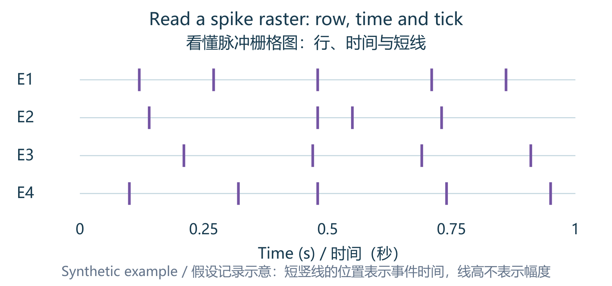
Read a spike raster: row, time and tick看懂脉冲栅格图：行、时间与短线
ENRead the figure: Each row here is one
electrode/channel; each tick is a detected spike event at a time. Ticks
near 0.48 s across several channels illustrate roughly coordinated
timing. Tick height is only a plotting symbol, not voltage amplitude.
The array measures extracellular signals; interpretation depends on
detection and electrode placement.
Source / 来源：Week 8 PDF p11–13; original teaching schematic /
自绘教学示意，非实验数据
C24
· [P1] Differential amplification and common-mode noise /
差分放大与共模噪声
P1 First passP1 先掌握Teacher emphasis课堂强调Worked example例题练习
Evidence and review target依据与学习抓手
Review target: Use Vout=G(V₁−V₂), identify common-mode interference and understand why matched inputs matter.学习抓手：会用Vout=G(V₁−V₂)，理解共模抑制及电极不匹配为什么留下噪声。
Differential recording explicitly emphasized老师明确强调小信号差分消噪: W7 PDF p52–54; T7-0043–0046
“This is very important question that you need to keep in mind about why EMG can work very well, how to ignore the noise, given that the signal is very small.”
只能抑制两端相似的干扰，不能把口语说明扩成所有噪声/运动都完全消失。
Weak signals and amplification emphasized again再次强调微弱信号需放大: W8 PDF p19–20; T8-0021–0023
“you should expect that these bioelectrical signals or biopotential signals are all very weak.”
Classroom quiz: third reference electrode课堂quiz：第三参考电极: T7-0047–0049; W7 PDF p52–55
“These two questions are very typical quiz type of question.”
A接3只对课堂原图有效；要学参考/接地的作用，不背无图编号。
ENKey points
A differential amplifier amplifies
the difference between two inputs: Vout=G(V₁−V₂).
A signal appearing
similarly at both inputs is common-mode and is ideally rejected.
High
input impedance reduces loading of a weak biological signal.
中文必会知识点
差分放大器放大两输入之差：Vout=G(V₁−V₂)。
两端相似的信号是common-mode，理想情况下被抑制。
较高输入阻抗减少对微弱生物信号的负载影响。
ENStart from zero: A differential amplifier
receives two voltages and enlarges their difference: Vout=G(V₁−V₂). G is
voltage gain, a multiplication factor. A voltage added equally to both
inputs is common-mode. If V₁=S₁+n and V₂=S₂+n, subtraction removes the
identical n, leaving S₁−S₂. Imagine two thermometers both shifted by the
same calibration error: their difference still cancels that shared
error.
ENFollow the mechanism: If the noises differ,
n₁−n₂ remains; real amplifiers also reject common-mode imperfectly. High
input impedance means the measuring input draws very little current from
the biological source. That reduces loading, which would otherwise alter
the voltage being measured. It preserves the input signal; it does not
itself set gain. Think of measuring gently without draining the source,
rather than automatically making its signal bigger.
ENTry an example: Example: V₁=1.4 mV, V₂=1.1 mV
and G=1000. First subtract: 0.3 mV. Then multiply: 300 mV=0.300 V.
Adding the same 5 mV interference to both inputs leaves the difference
unchanged ideally. Adding 5 mV to only one input changes it greatly.
Therefore “large gain removes any noise” is false: gain also enlarges
noise that survives the subtraction.
ENExam wording: Subtract before multiplying, and
convert mV to V correctly. The reference and recording locations matter.
Gain alone does not guarantee removal of noise that appears differently
at the two inputs.
B32
· [P2] Amplifier chain, isolation and polarity放大链、隔离与极性
P2 Important foundationsP2 重要基础Repeated explanation反复讲解Lower priority降低优先级
Evidence and review target依据与学习抓手
Review target: Separate amplification, filtering and isolation; explain high input/low output impedance and polarity.学习抓手：分清放大、滤波、隔离；懂高输入/低输出阻抗，认反相与同相极性。
Biopotential amplifier chain explained讲解生物电放大链各级: W8 PDF p19–24; T8-0021–0026
Other amplifier diagrams are locally described as reference其他放大器结构局部说供参考: W8 PDF p23–24; T8-0026
“You don't need to memorize these. These are just for your reference.”
these所指页面无同步证据，不能声称逐式排除反相/同相短增益；结构与长式降优先。
ENKey points
A preamplifier handles weak input;
high-pass filtering reduces slow drift and low-pass filtering reduces
fast interference.
Isolation supports patient protection.
High input
impedance reduces loading;
low output impedance helps drive a load.
Neither specifies voltage gain.
Inverting amplification reverses
polarity;
non-inverting preserves it.
Recognize the ideal gains −Rf/Rin
and 1+Rf/Rin as supporting relations, not an explicit memorization
promise.
中文必会知识点
Preamplifier前置放大器处理弱输入；
高通减小慢漂移，低通减小快速干扰。
Isolation隔离用于患者保护。
高输入阻抗减少加载，低输出阻抗便于驱动负载，二者都不直接决定电压增益。
Inverting反相放大翻转极性；
non-inverting同相放大保持极性。
理想增益−Rf/Rin和1+Rf/Rin可作辅助辨识，并非老师明确保证必背。
ENStart from zero: A weak biological signal
usually needs several processing stages. A preamplifier enlarges the
initial small signal. High-pass filtering reduces slow drift; low-pass
filtering reduces fast components outside the useful range. An isolation
stage separates electrical connections to help protect the subject and
limit unwanted current paths. Amplification, filtering and isolation
perform different jobs: none should be described as automatically doing
everything the other stages do.
ENFollow the mechanism: Input impedance describes
how strongly the amplifier loads its source. A high value draws little
input current and helps preserve the source voltage. Output impedance
concerns driving the next device: a low value reduces voltage loss into
that load. Gain is separately the ratio of output signal to input
signal. Think of a gentle receiver connected to a strong sender; this
illustrates loading, not a rule that high impedance creates large
gain.
ENTry an example: Inverting means polarity
reversal: a positive input produces a negative output in the ideal
circuit. Non-inverting keeps polarity. With Rf=20 kΩ and Rin=10 kΩ, the
ideal inverting gain is −Rf/Rin=−2; the non-inverting gain is
1+Rf/Rin=3. Thus a +1 mV input gives −2 mV or +3 mV respectively. The
minus sign describes polarity, not an absence of amplification. These
simple examples explain the circuits rather than promise a specific Quiz
question.
Biopotential acquisition chain: preamplifier, high-pass filter, isolation and low-pass filter.生物电采集链：前置放大、高通、隔离与低通。
ENRead the figure: Follow the arrows from the
patient on the left to Vout on the right. The preamplifier raises a weak
signal; the high-pass stage reduces DC and slow drift; the isolation
stage provides electrical separation for safety and helps prevent ground
loops; the low-pass stage attenuates excessively fast components. Each
tiny filter graph has frequency on its horizontal axis. Gain, filtering
and isolation serve different functions: amplification alone does not
remove all noise or provide patient isolation.
Source / 来源：Week 8 PDF p22; original slide figure / 原课件截图
S802
· [P2] Amplifier requirements, bandwidth and safety /
放大器要求、带宽与安全
P2 Important foundationsP2 重要基础Repeated explanation反复讲解Lower priority降低优先级
Evidence and review target依据与学习抓手
Review target: Understand amplifier impedance, gain, useful bandwidth and isolation; use the chart for orientation rather than memorizing boundaries.学习抓手：懂放大器阻抗、增益、有效带宽与隔离；图表认大致关系，不背所有边界数值。
Amplifier requirements and stages discussed讲解放大器要求与处理链: W8 PDF p19–22; T8-0021–0026
高输入阻抗减小加载，不直接保证高增益；>10 MΩ来自课件，不是字幕逐字数值。
Detailed amplitude/frequency chart data need not be memorized幅度/频率图详细数据不用死记: W8 PDF p21; T8-0023–0024; T8-0064
“You don't need to memorize these things.”
EOG/ERG和ground loop用于词汇理解；不将论文图边界、全部商业指标当考试重点。
ENThe requirement slide gives high input impedance
(>10 MΩ), low output impedance and large gain (often >1000) for
weak biopotential signals. These numbers describe the stated
application, not every amplifier: the preceding slide lists gains from
×10 to ×10000. Input impedance preserves the source voltage, output
impedance helps drive the load, and gain sets amplification. None of
these three quantities substitutes for the others.
ENFrequency response must cover the useful signal
band. More gain does not restore signal removed by an unsuitable filter,
and a wider bandwidth can admit more unwanted components. The
amplitude-versus-frequency chart shows that ECG, EEG and EMG occupy
different approximate regions; its detailed numerical boundaries were
presented for reference. EOG means electrooculogram, associated with
eye-related potentials; ERG means electroretinogram, recording retinal
electrical responses, rather than EEG brain recordings.
ENAn isolation stage protects the subject by
limiting unwanted electrical connections and current paths; it also
helps prevent ground loops. A ground loop is an unintended closed path
through connected grounds that can introduce interference. Safety is
therefore about patient-connected current paths and protection, not
merely choosing a small voltage gain. Amplification, isolation and
filtering remain distinct functions.
Review target: Use the op-amp picture to recognize signal inputs, supply terminals, output and feedback; keep gain relations as support.学习抓手：辅助看懂运放输入、供电、输出与反馈；短增益关系备查，不主攻长推导。
Other amplifier diagrams locally called reference其他放大器图局部说仅供参考: W8 PDF p23–24; T8-0025–0026
“You don't need to memorize these. These are just for your reference.”
these没有同步页切换，不能说老师逐式明确排除了反相/同相短增益；本节仅作为理解结构的辅助。
Diagram reading supports the main amplifier concept读图支撑放大器主概念: W8 PDF p23–24
优先C24和B32；只有满足理想线性负反馈条件才用相关闭环公式。
ENThe op-amp triangle has a non-inverting (+)
signal input, an inverting (−) signal input and an output. The supply
terminals power the circuit; they are not the two measured biological
signal inputs. The +/− input labels specify which input contribution
increases or decreases output polarity, not that one electrode must
always have a positive measured voltage and the other a negative
one.
ENIn the shown circuits, a feedback resistor
connects output back to the inverting input. Under the ideal
linear-operation assumptions, the resistor ratios set the closed-loop
gains: −Rf/Ri for inverting and 1+Rf/Ri for non-inverting. A minus sign
reverses polarity. These relations should not be applied as if output
could grow without limit; the amplifier must remain within its available
output range.
Compare inverting and non-inverting op-amp feedback circuits.比较反相与同相运放反馈电路。
ENRead the figure: On the left, Vi reaches the −
input through Ri; on the right, Vi reaches the + input. In both
circuits, trace Rf from the output back to the − input. Under ideal
linear-operation assumptions, the gains are −Rf/Ri and 1+Rf/Ri
respectively. The minus sign means output polarity is reversed; it does
not mean negative signal size or negative input impedance. These
relations apply while the amplifier remains within its operating and
output limits.
A high-pass filter attenuates
low-frequency components;
a low-pass filter attenuates high-frequency
components.
A band-pass filter preserves a frequency interval.
A
band-reject or notch filter suppresses an interval or narrow
interference band, such as mains interference when appropriately
selected.
中文必会知识点
High-pass抑制低频，low-pass抑制高频；
band-pass保留一个频率区间；
band-reject或notch抑制一个区间或窄干扰带，例如适当选择时可抑制工频干扰。
ENStart from zero: A recorded signal can contain
slow baseline drift, useful biological changes, and fast interference
together. Frequency describes how rapidly each repeating component
changes, not how tall it is. A filter treats these components
differently. Pass means retain relatively well; attenuate means reduce
amplitude. A low-pass filter does not turn every fast oscillation into a
slower one: it mainly weakens the unwanted fast components.
ENFollow the mechanism: High-pass keeps higher
frequencies and reduces slower ones; low-pass does the reverse.
Band-pass keeps an interval between lower and upper limits. Band-reject
suppresses an interval; a notch is a narrow rejection band. Think of
frequency gates accepting certain repetition rates. Actual transitions
are gradual, so near a cutoff the amount of attenuation matters.
ENTry an example: For an idealized 10–100 Hz
band-pass teaching example, a 5 Hz component is reduced, a 40 Hz
component is retained, and a 200 Hz component is reduced. A suitably
chosen notch can reduce 50 Hz mains interference. However, useful signal
at 50 Hz is also affected: the filter cannot recognize whether a
component is biological or interference merely from its origin. Match
the requested frequency range to the filter type.
ENExam wording: Keep filter-role recognition in
the main review. The particular RC cutoff example was excluded from this
year’s exam in its local context; this does not justify excluding every
filter concept from the Quiz.
P2 Important foundationsP2 重要基础Teacher emphasis课堂强调Worked example例题练习Lower priority降低优先级
Evidence and review target依据与学习抓手
Review target: Read pass/stop regions of response graphs first; understand RC cutoff trends without prioritizing the old worked calculation.学习抓手：先读响应图的通过/衰减区；RC仅懂R/C增大时截止频率降低，旧例题后看。
Graph recognition supports the emphasized four filter roles读图支撑老师强调的四种滤波作用: W8 PDF p25–26; T8-0026–0027
“The meaning of low pass and high pass you should not get confused.”
四曲线辨认属C25的P1内容；本小节中的RC公式和电路细节另外降优先。
Slide worked RC cutoff calculation课件RC截止计算例题: W8 PDF p27–29; T8-0027–0029
The particular past-exam cutoff example was locally excluded那道往年截止例题被局部排除: T8-0028
“But I can tell you it will it will not be in this year's exam, okay?”
ENOn a frequency-response plot, the horizontal
axis is frequency and the vertical axis is gain or response magnitude. A
low-pass curve is relatively large at low frequency and falls at high
frequency; a high-pass does the reverse. A band-pass retains a middle
region and falls at both ends; a band-reject has a suppressed middle
region. On a time trace, removing fast components often makes the
waveform smoother; removing slow components can remove baseline
drift.
ENThe analog-filter diagrams implement these same
roles using resistors, capacitors and op-amps. A high-pass stage
followed by a low-pass stage can form a band-pass when the lower cutoff
is below the upper cutoff. For a simple first-order RC stage, the
supporting relation is fc=1/(2πRC): increasing R or C lowers fc. The
lecturer excluded the particular worked RC cutoff example; retain the
role and graph recognition, with this formula as supporting
understanding rather than a promised Quiz calculation.
Four filter responses: low-pass, high-pass, band-pass and band-reject.四种滤波响应：低通、高通、带通、带阻。
ENRead the figure: Read the frequency axis from
left to right. A high part of a curve means relatively strong
transmission, and a low part means attenuation. Blue idealized
boundaries and the smooth practical curves express the same pass/stop
roles.
Source / 来源：Week 8 PDF p25; original slide figure / 原课件截图
Formulas
explained with small examples公式符号与短例题（完整补全）
ENUpdated 2026-10-14: the original ten worked
relations are expanded here by checking the classmate’s formula sheet
against the lecture sources. P1/P2/P3 set revision order, not certainty
of appearing on the quiz. Long formulas remain available for recognition
and substitution when quantities are supplied.
ENSymbols are reused between topics: n can mean
refractive index, charge-carrier density or electron count; R can mean
resistance, reflectivity or resolving power. Read the definition beside
each formula. Δ denotes a change or a spectral separation, j² = −1, and
log₁₀ is distinct from ln. Always match units before calculating.
ENQuick route: follow a chapter’s formula links,
read the equation and symbols, then check its conditions and tiny
example. The cards below retain every topic in the classmate’s 37-row
appendix and add supported short relations from the covered
lectures.
ENWhen to use: Convert a measurable response
change into target amount and compare the threshold with output
noise.
中文何时使用：将响应变化换算为目标量，比较检测阈值与输出噪声。
ENConditions and traps: Use a valid local linear
calibration, with σ_y and m in matching response units. The 3σ rule is
the course approximation. Apply an integer ceiling only when the problem
requires discrete counts at or above LOD. Sensitivity is a slope; LOD is
a concentration. Do not use the saturated part or mistake m for σ. W1
p62 mixes current and current-density units.
中文条件与易错点：使用有效局部线性校准，σ_y 与 m
响应单位一致。3σ
是本课程采用的近似；只有要求不低于阈值的整数计数时才向上取整。
灵敏度是斜率，检出限是浓度；不用饱和段，不把 m 当 σ。W1 p62
电流和电流密度单位混写。
ENTiny example: σ_y=2 and m=10.911 in matching
units give LOD≈0.55 mM.
ENRevision priority: Recognise; optional
calculations. Printed as a background sensor example; no class-worked
Hall calculation or direct Quiz question was found. Recognize the
proportionality first.
ENSymbols and units: I: current (A); B_perp:
magnetic field perpendicular to the current/sensing plate (T); n_c:
carrier number density (m⁻³); q: signed carrier charge (C); t: plate
thickness (m).
ENWhen to use: Relate transverse Hall voltage to
magnetic field; at fixed I, n_c, q and t, V_H is proportional to
B_perp.
中文何时使用：把横向霍尔电压与磁场联系起来，其他参数固定时 V_H 与 B_perp
成正比。
ENConditions and traps: Simple uniform slab with a
dominant carrier type and the stated field geometry. The sign depends on
carrier type and measurement polarity. n_c here is a number density, not
optical refractive index; t is thickness, not time. A voltage sign needs
a defined polarity.
ENRevision priority: Important supporting
relations. W2 explicitly defines these symbols; learn the relationships
and meanings, not a new wave-equation derivation.
中文复习优先级：重要基础关系。W2
明确定义这些符号，要懂关系与含义，不增加波动方程推导要求。
Formula: 公式：E_field(z,t) = E0 cos(ωt − kz); ω = 2πf; k = 2π/λ; v_phase = fλ; in vacuum: c = fλ0
ENSymbols and units: E_field: electric field, not
photon energy; E0: field amplitude; f: Hz; ω: rad/s; k: rad/m; λ:
wavelength in the propagation medium; λ0: vacuum wavelength; c≈3×10⁸
m/s.
ENWhen to use: Recognize frequency, phase and
propagation direction; shorter vacuum wavelength means higher
frequency.
中文何时使用：辨认频率、相位、传播方向；真空波长越短，频率越高。
ENConditions and traps: The cosine expression is
an ideal monochromatic plane wave. Use c=fλ only with vacuum wavelength;
in a medium use its phase speed. The course writes frequency as ν. ω is
not f: they differ by 2π. The electric-field symbol E and photon-energy
E are different quantities.
中文条件与易错点：余弦式为理想单色平面波；c=fλ
必须使用真空波长，介质中用其相速度。课件频率符号为 ν。 ω 不是 f，两者差
2π；电场 E 与光子能量 E 是不同量。
ENTiny example: λ0=600 nm gives f≈5×10¹⁴ Hz and
ω≈3.14×10¹⁵ rad/s.
中文短例理解：λ0=600 nm 时 f≈5×10¹⁴
Hz，ω≈3.14×10¹⁵ rad/s。
Source / 来源：W2 PDF p17 | T2-0011 | T2-0012
FX104 · [P1] Photon energy, total energy and photon rateFX104 · [P1] 单光子能量、总能量与光子率
ENRevision priority: First: know and calculate.
The lecturer uses this in the 500 nm photon example and W2 p80 bacterium
calculation.
ENWhen to use: Move between wavelength, energy per
photon, total energy and photons per second.
中文何时使用：在波长、单光子能量、总能量及每秒光子数之间换算。
ENConditions and traps: Use one photon wavelength
or sum over wavelengths for a broadband beam. The 1240 shortcut requires
nm and eV. For photons reaching a sample, use power actually incident on
that sample. P is energy per second, not photon energy. Do not multiply
by the number of dye molecules, and do not confuse incident and detected
photon rate.
中文条件与易错点：单色光用一个波长，宽带光需按各波长求和；1240 快捷式要求 nm
与 eV。求照到样品的光子率时用实际到达样品的功率。 P
是每秒能量，不是光子能量；不额外乘染料分子数，不混淆入射与探测光子率。
ENTiny example: 410 nm and 10 nW give
E_ph≈4.845×10⁻¹⁹ J and N_dot≈2.064×10¹⁰ s⁻¹.
ENRevision priority: Recognise; optional
calculations. Shown in the particle-model slide; no dedicated momentum
arithmetic was located. Recognize the concept and inverse-wavelength
trend.
ENWhen to use: Explain why absorption/reflection
can transfer momentum and why light can exert pressure.
中文何时使用：解释吸收/反射为何能传递动量，以及光为何能施加压力。
ENConditions and traps: This is the vacuum photon
relation. It is not an unqualified formula for momentum inside a
material. Momentum, energy and photon rate have different units; P/E_ph
is not a momentum.
ENTiny example: Doubling vacuum wavelength halves
each photon’s momentum.
中文短例理解：真空波长加倍，单光子动量减半。
Source / 来源：W2 PDF p19
FX106 · [P2] Energy fractions: reflection, absorption and transmissionFX106 · [P2] 反射、吸收与透射能量比例
ENRevision priority: Important supporting
relations. A useful foundation for distinguishing optical interactions
and absorbance notation.
中文复习优先级：重要基础关系。用于区分光学作用及吸光度记号的重要基础。
Formula: 公式：R + A_frac + T = 1
ENSymbols and units: R: reflected fraction;
A_frac: absorbed fraction; T: transmitted fraction. All are
dimensionless fractions of the same incident energy.
中文符号与单位：R：反射比例；A_frac：吸收比例；T：透射比例；均为同一入射能量的无量纲比例。
ENWhen to use: Check a simple optical energy
budget and determine a missing fraction.
中文何时使用：核对简单光能量收支，并求缺失的比例。
ENConditions and traps: The measured/accounted
channels must include all outgoing reflection/transmission; in a
scattering sample, any separately excluded scattered light needs its own
budget term. A_frac is an absorbed fraction, whereas Beer–Lambert
absorbance A is −log10(T); the two A meanings are not
interchangeable.
中文条件与易错点：被计入的反射/透射必须覆盖全部对应出射能量；散射样品中若有另外排除的散射光，应单独加入收支。
A_frac 是吸收比例；Beer–Lambert 的吸光度 A 是 −log10(T)，两个 A
不能混用。
ENTiny example: R=0.10 and T=0.70 imply
A_frac=0.20, not an absorbance of 0.20.
ENRevision priority: Important supporting
relations. W2 explains length and absorption/scattering coefficients;
coefficients can be supplied, so do not memorize material tables.
ENWhen to use: Explain why a longer path or larger
loss coefficient reduces direct transmitted light.
中文何时使用：解释光程更长或损耗系数更大时，直达透射光为何减少。
ENConditions and traps: Uniform medium and
direct/ballistic-beam attenuation with approximately constant
coefficients. Scattering removes photons from the direct beam but does
not necessarily absorb them; total diffuse light is a different
quantity. μL must be dimensionless. A 1/e distance is not a sharp
boundary at which all light disappears.
ENWhen to use: Convert transmitted fraction to
absorbance and solve for concentration, path length or absorptivity.
中文何时使用：把透过比例换成吸光度，并求浓度、光程或吸光系数。
ENConditions and traps: Use a specified wavelength
and a valid linear Beer–Lambert regime, after an appropriate
blank/reference correction. Do not assume a buffer never absorbs at
every wavelength. 15% means T=0.15; absorbance is not 1−T. Do not mix ε
with ε′ or round ε before completing the calculation.
ENRevision priority: Recognise; optional
calculations. The lecturer says the detailed coefficients/derivation
need not be memorized. Use this to recognize the two-wavelength
principle or substitute supplied data.
ENWhen to use: Use two absorption measurements to
separate two hemoglobin concentrations.
中文何时使用：用两个吸收测量分开两种血红蛋白浓度。
ENConditions and traps: Two-species additive
absorption approximation with supplied coefficients and independent
wavelength responses; backgrounds must be accounted for. If the two
equations are proportional, two concentrations cannot be separated
uniquely. ln(10) converts a base-10 ε to a natural-exponential μ_a; it
is not a new concentration unit. An isosbestic wavelength alone measures
a shared absorption contribution.
ENWhen to use: Distinguish fraction oxygenated
from the total amount of hemoglobin.
中文何时使用：分清含氧比例与血红蛋白总量。
ENConditions and traps: Both concentrations must
use the same units and refer to the same sample/compartment. The
denominator must be nonzero; device SpO2 is a calibrated estimate, not
every abstract mixture fraction. The denominator is total hemoglobin,
not deoxyhemoglobin alone; 0.8 corresponds to 80%, not 0.8%.
ENTiny example: C_ox=8 and C_de=2 in the same
units give SO2=80% and CHb=10.
中文短例理解：同单位 C_ox=8、C_de=2
时，SO2=80%，CHb=10。
Source / 来源：W2 PDF p50 | T2-0063 | T2-0064
FX111 · [P3] Pulse-oximeter example: ratio of ratiosFX111 · [P3] 血氧仪例题：比值之比
ENRevision priority: Recognise; optional
calculations. Worked for graph interpretation; the teacher explicitly
says not to memorize the long calculation. Keep it available for
supplied-formula questions.
ENSymbols and units: Ip, Ib: trace peak and
baseline intensities; R, IR subscripts: red and infrared channels; ε:
the four supplied hemoglobin coefficients; R_os and SaO2 are
dimensionless.
ENWhen to use: Read each channel’s peak/baseline,
form the specified ratio, and substitute the provided calibration
relation.
中文何时使用：读取两个通道峰/基线，按指定定义求比值，再代入给定校准关系。
ENConditions and traps: This is the relation
supplied for the course example with its specified wavelengths and
coefficients, not a universal uncalibrated saturation law. Intensities
are positive and the IR log denominator is nonzero. Do not multiply
intensities by wavelength or attach nm to the ratios. This example uses
630/940 nm, while the general device slide uses 660/940 nm.
ENRevision priority: First: know and calculate.
The lecturer works W2 p67 and stresses the forward/reverse conversion.
Also supports Sample Q2 scattering concepts.
ENWhen to use: Convert spectral coordinates and
reverse a given Raman shift to find scattered wavelength.
中文何时使用：换算光谱坐标，并由给定拉曼位移反求散射波长。
ENConditions and traps: Use the same wavelength
unit in both reciprocals. With the stated signed convention, Stokes has
positive shift and anti-Stokes negative shift; some plots instead use
absolute magnitudes. Raman shift is a difference of reciprocal
wavelengths, not λs−λ0, nor the absolute scattered wavenumber.
ENRevision priority: First: know and calculate.
Know lifetime, units and the 1/e meaning. The differential notation is
for recognition, not a new calculus exercise.
ENSymbols and units: N_exc: excited S1 population;
kr, knr, k_tot: radiative, nonradiative and total exit rates (s⁻¹); τ:
lifetime (s); I_fl: background-corrected fluorescence intensity. In the
p82 diagram, k1 is nonradiative S1→S0 relaxation and k2 is S1→T1
intersystem crossing.
ENWhen to use: Connect decay rate, the 1/e
lifetime and the distinct half-life.
中文何时使用：联系衰减速率、1/e
寿命及不同的半衰期。
ENConditions and traps: Single-exponential,
constant first-order rates after a short excitation pulse, without
continued pumping. Multi-exponential samples need a more detailed model.
I_fl follows population only with unchanged detection and kr. knr=k1+k2
follows this two-channel nonradiative model; other samples can have
additional nonradiative channels. At t=τ, 36.8% remains, not 50%. A
lifetime is not the time until the signal becomes exactly zero; kr alone
is not 1/τ unless knr=0.
ENRevision priority: First: know and calculate. W2
Examples 6/7 are explained in class; these also support the full
fluorescence concepts behind Sample Q1.
中文复习优先级：优先掌握与短算。W2 Example 6/7
课堂有讲，亦支撑 Sample Q1 全部荧光概念。
ENSymbols and units: Φ: dimensionless yield (0–1);
N: emitted/absorbed photon counts; kr, knr: s⁻¹ if τ is in s. Use photon
numbers, not unequal-wavelength optical energies.
中文符号与单位：Φ：无量纲产率
0–1；N：发射/吸收光子数；τ 用 s 时 kr、knr 为
s⁻¹。按光子数算，不能把不同波长的光能比直接当产率。
ENWhen to use: Find yield or either decay rate and
predict emitted photon number from absorbed photons.
中文何时使用：求产率或两种衰减速率，并由吸收光子数预测发射数量。
ENConditions and traps: The rate equality uses the
single-excited-state first-order model; count-based yield needs
corrected photon measurements. Incident photons equal absorbed photons
only if the beam is fully absorbed. Do not use arbitrary spectral peak
heights as general quantum-yield measurements. 1 ns⁻¹=10⁹ s⁻¹; the p88
25-hour unit is unusual but must be preserved if solving that source
question.
ENRevision priority: Important supporting
relations. Printed on p85 and supports the yield/brightness explanation;
retain the matched-conditions qualification.
中文复习优先级：重要基础关系。p85
明列，支撑产率/亮度解释，须保留比较条件。
Formula: 公式：B_mol = ε(λ_exc) Φ; at equal low concentration, excitation and collection: fluorescence signal ∝ C ε(λ_exc) Φ
ENSymbols and units: ε(λ_exc): molar absorptivity
at the chosen excitation wavelength; Φ: quantum yield; B_mol: relative
molecular brightness indicator, not a lumen/W instrument reading.
ENWhen to use: Compare a fluorophore’s absorption
strength and emission efficiency together.
中文何时使用：同时比较荧光分子的吸收能力和发射效率。
ENConditions and traps: Matched
excitation/detection and dilute, unsaturated response, without major
reabsorption, self-quenching or bleaching. Signal also depends on amount
and instrument settings. Higher Φ alone does not always make a dye
brighter if ε differs. Intensity is not necessarily linear in
concentration at high concentration or saturation.
FX116 · [P1] Grating resolving power and illuminated groovesFX116 · [P1] 光栅分辨本领与受照刻线数
ENRevision priority: First: know and calculate.
Explicit Sample Q7 topic; the standard ideal-grating relation is added
for solving that source question, not falsely attributed as printed on
W2 p35.
ENWhen to use: Find spectral resolution or compare
groove density at fixed illuminated width and order.
中文何时使用：求光谱分辨率，或在固定受照宽度/级次下比较刻线密度。
ENConditions and traps: Ideal grating limit for
coherently illuminated grooves; real spectrometer resolution may also be
limited by slit width, optics and detector sampling. Compare at matched
wavelength, order and illuminated width. Density is not N; a larger
density gives more illuminated grooves only at fixed width. Resolving
power R is larger-better, whereas Δλ_min is smaller-better.
ENTiny example: At λ=600 nm, |m|=1 and N=50, R=50
and Δλ_min=12 nm.
中文短例理解：λ=600 nm、|m|=1、N=50
时，R=50、Δλ_min=12 nm。
Source / 来源：W2 PDF p35 | W1 PDF p86 | Sample Quiz PDF p1 Q7
FX117 · [P2] Label-free spectral sensitivity and index LODFX117 · [P2] 无标记光谱灵敏度与折射率检出限
ENRevision priority: Important supporting
relations. The lecturer repeatedly reads these plots and explicitly
mentions sensitivity/LOD calculations for the final; this is supporting
Quiz preparation, not a guaranteed Quiz item.
ENWhen to use: Read a peak/dip position shift,
predict the response to index change, or translate wavelength noise into
an index threshold.
中文何时使用：读峰/谷位置移动，预测折射率响应，或将波长噪声换成折射率阈值。
ENConditions and traps: Use the local calibrated
index range, matched temperature/geometry and same resonance mode. A
concentration LOD additionally needs an index–concentration calibration.
Peak height and peak position are different signals. nm/RIU sensitivity
is not automatically nm/mM; σ must have the same spectral unit as S.
中文条件与易错点：采用局部校准折射率范围、匹配温度/几何及同一共振模式；浓度检出限还需折射率—浓度校准。
峰高与峰位是不同信号；nm/RIU 不自动等于 nm/mM，σ 和 S
的光谱单位要一致。
ENTiny example: S_λ=30 nm/RIU and Δn=10⁻⁴ RIU give
a 3 pm shift. If σ_λ=1 pm, LOD_n=10⁻⁴ RIU.
中文短例理解：S_λ=30 nm/RIU、Δn=10⁻⁴ RIU 时位移 3
pm；若 σ_λ=1 pm，则 LOD_n=10⁻⁴ RIU。
Source / 来源：W3 PDF p15 | W3 PDF p47 | W3 PDF p79 | T3-0024 |
T3-0025 | T3-0026 | T3-0077 | T3-0078 | T3-0108
ENRevision priority: First: know and calculate.
The two TIR requirements are central to fibre questions; the numerical
critical-angle calculation is a supporting basic application.
中文复习优先级：优先掌握与短算。全反射的两条件是光纤题核心；临界角数字计算属基础应用。
Formula: 公式：n1 sinθ1 = n2 sinθ2; θc = arcsin(n2/n1) for n1>n2; TIR requires θ1>θc
ENSymbols and units: n1,n2: refractive indices;
θ1,θ2: angles from the interface normal; θc: critical angle.
中文符号与单位：n1、n2：折射率；θ1、θ2：相对界面法线的角；θc：临界角。
ENWhen to use: Decide whether a ray refracts or
satisfies total internal reflection and calculate the threshold.
中文何时使用：判断折射或全反射，并求临界阈值。
ENConditions and traps: Ordinary isotropic
lossless media in the course ray model. TIR needs high-index to
low-index travel and incidence above the critical boundary; at θc the
refracted ray is grazing. Angles are from the normal, not the surface.
The p22 shorthand ≥ includes the boundary; distinguish it from strict
above-critical TIR. n1<n2 has no real TIR critical angle.
ENRevision priority: Important supporting
relations. Explicit W3 formula explained in class; retain the n0
assumption rather than copying an air-only shortcut everywhere.
ENSymbols and units: n0: outside launch-medium
index; n_core,n_clad: core/cladding indices; θ_accept,max: maximum
launch angle from the fibre axis (acceptance cone half-angle); NA is
dimensionless.
ENWhen to use: Connect core–cladding index
contrast to the external light-acceptance cone.
中文何时使用：把纤芯/包层折射率差与外部接受光锥联系起来。
ENConditions and traps: The course meridional-ray
model of a step-index fibre, n_core>n_clad; arcsin requires NA/n0≤1.
The slide omits n0 by assuming air. The external acceptance angle is
measured from the fibre axis; the internal TIR angle is measured from an
interface normal. They are different angles.
ENRevision priority: Important supporting
relations. The surface-confinement concept is P1; the exponential
expression is useful supporting algebra. Amplitude conversion is
explained, not treated as an extra exam claim.
ENSymbols and units: d: distance normal to the
interface; L_I: 1/e intensity decay depth; L_E: 1/e field-amplitude
decay depth. Intensity and electric field are different quantities.
ENWhen to use: Explain surface-confined sensing
and avoid a factor-of-two error when switching amplitude/intensity
conventions.
中文何时使用：解释近表面传感，并避免把场幅与强度深度混用导致二倍误差。
ENConditions and traps: A single exponential
evanescent tail in a uniform lossless low-index region; keep the same
depth definition. The p27 plotted normalized intensity corresponds to
L_I. p27 writes I(d)=exp(−d/L0) but plots I/I0: the expression is
normalized. Goos–Hänchen lateral shift is along the interface, not this
normal penetration depth.
ENRevision priority: Recognise; optional
calculations. README labels this as supplementary; retain it for
understanding definitions, without announcing a new required
calculation.
ENSymbols and units: λ0: vacuum wavelength; θ:
incidence from the normal on the n1 side; n1>n2. κ is the normal
field-amplitude decay constant in inverse length (m⁻¹ for λ0 in m); L_E
and L_I are amplitude/intensity 1/e depths in the same length unit as
λ0.
ENWhen to use: Make the README supplemental depth
formula unambiguous and connect it to the three factors listed on the
slide.
中文何时使用：明确 README
补充深度式的约定，并联系课件列出的三个因素。
ENConditions and traps: Derived flat-interface TIR
expression for isotropic lossless media with θ>θc. It is
supplementary to p26’s qualitative factors, not an original numeric
worked formula. Very near θc the idealized model is sensitive to
conditions. The README’s 4π formula is an intensity depth. Texts using
2π may be giving field-amplitude depth; do not call either wrong without
checking its definition.
FX122 · [P2] WGM resonance and small fractional changesFX122 · [P2] WGM 共振与小幅相对变化
ENRevision priority: Important supporting
relations. W3 shows the formula and explains index/geometry shifts; the
lecturer’s main emphasis is the reference peak and its shift.
ENWhen to use: Predict resonance shifts due to
changes in geometry or effective index.
中文何时使用：预测几何或有效折射率变化引起的共振位移。
ENConditions and traps: Same mode m, small
perturbations and negligible/localized dispersion in the course
optical-path model. The fractional expression is first order; it
neglects the product ΔRΔn and does not automatically use bulk index in
place of n_eff. The slide uses r/R and n for the same role; use one
consistent notation. m is not generally 1 just because a lecture gives
that verbal simplification. A radius change and an index change may both
shift the peak.
ENRevision priority: Recognise; optional
calculations. The Quiz-relevant lesson is cavity recognition; this
supporting equation is not added as a teacher-confirmed Quiz
calculation.
ENSymbols and units: L: physical mirror
separation; n_cav: cavity medium index; m: positive integer mode order;
λ0: vacuum resonance wavelength. The wavelength in the cavity is
λ0/n_cav.
ENWhen to use: Explain the standing-wave
optical-path condition for a simple Fabry–Pérot cavity.
中文何时使用：解释简单 Fabry–Pérot
腔的驻波光程条件。
ENConditions and traps: Normal incidence, a simple
two-mirror path and negligible additional reflection phase. This is the
generalized interpretation of the slide’s half-wavelength illustration;
real coatings and angled paths modify it. The integer mode label in a
standing-wave drawing is not the same as the refractive-index symbol n.
Do not confuse physical length L with optical path n_cav L.
中文条件与易错点：正入射、简单双镜光程且额外反射相位可忽略；是课件半波长示意的规范一般化解释。真实镀膜与倾斜光路会修改条件。
驻波图中的整数模式编号不是折射率 n；物理长度 L 与光程 n_cav L 不同。
ENTiny example: In air, L=1 μm and m=4 give λ0=500
nm.
ENRevision priority: Important supporting
relations. The teacher explicitly mentions these for the final; retain
them as important support for broad Quiz concepts, without a
guarantee.
ENWhen to use: Read the full half-height width of
an upward peak or the full half-depth width of a downward dip, then
compare sharpness and index-shift performance.
中文何时使用：上凸峰读半高全宽，向下谷读半深全宽，再比较共振尖锐程度与折射率位移表现。
ENConditions and traps: Account for baseline and
distinguish a peak from a dip; SPR reflectance often has a dip. Subtract
baseline before identifying half-height. Q≈λ0/Δλ assumes a narrow
resonance; FOM must use the same spectral coordinate for sensitivity and
width. Neither alone proves concentration LOD without noise/calibration.
The README calls wavelength Q exactly equivalent and tells readers to
follow Δf in a mixed-unit FOM; correct this: wavelength Q is a
narrow-line approximation, and nm/RIU cannot be divided directly by Hz.
Δf is width, not a before/after shift.
ENRevision priority: Recognise; optional
calculations. Keep the weakness/enhancement concept; no need to memorize
every reported exponent as a guaranteed Quiz number.
Formula: 公式：I_Rayleigh/I0 ~ 10⁻³; I_Raman/I0 ~ 10⁻⁶–10⁻⁹; reported SERS enhancement can be ~10⁹–10¹²
ENSymbols and units: I0: incident intensity;
I_Rayleigh and I_Raman: illustrative scattered intensities; enhancement:
a stated comparison under defined measurement conditions.
ENWhen to use: Recognize why ordinary Raman is
weak and why local-field enhancement is useful.
中文何时使用：理解普通拉曼为何微弱，以及局域场增强为何有用。
ENConditions and traps: These are rough reported
orders from the slides, not universal conversion fractions or guaranteed
enhancement for every substrate/sample. Comparisons depend on geometry,
molecules and normalization. Do not multiply arbitrary input power by
10¹² and treat it as physically emitted power; enhancement is relative
to a reference Raman measurement.
ENTiny example: Qualitative example: a weak
molecular fingerprint can become easier to measure at a metal
nanoparticle hot spot; the amount still needs calibration.
中文短例理解：趋势例：金属纳米颗粒热点可让弱分子指纹更容易测到，定量仍需校准。
Source / 来源：W3 PDF p89–91
FX401 · [P2] Thin lens and magnificationFX401 · [P2] 薄透镜与放大率
ENRevision priority: Important supporting
relations. Slide relation and basic image-formation reasoning; no
explicit quiz promise for lens algebra.
中文复习优先级：重要基础关系。课件短关系和成像基础，未找到薄透镜代数的明确Quiz承诺。
Formula: 公式：1/S₁ + 1/S₂ = 1/f; |M| = |S₂/S₁|; signed M = −S₂/S₁
ENSymbols and units: S₁: object distance; S₂:
image distance; f: focal length, all in the same length unit; M:
dimensionless magnification.
中文符号与单位：S₁物距、S₂像距、f焦距，统一长度单位；M为无量纲放大率。
ENWhen to use: Find where the image forms and how
large it is.
中文何时使用：求像的位置与图像大小。
ENConditions and traps: Paraxial thin-lens model.
The slide uses positive real-object/real-image distance magnitudes;
other sign conventions must be stated. The minus sign describes
inversion. More magnification alone does not improve diffraction
resolution.
ENRevision priority: First: know and calculate.
Repeated explanation; the W5 classroom objective-comparison question was
explicitly linked to quiz.
中文复习优先级：优先掌握与短算。反复讲解；W5课堂物镜比较题明确与Quiz联系。
Formula: 公式：NA = n sinθ
ENSymbols and units: n: refractive index between
specimen and objective; θ: acceptance-cone half-angle; NA:
dimensionless.
中文符号与单位：n为样品与物镜之间介质折射率，θ为接收光锥半角，NA无量纲。
ENWhen to use: Compare light collection and
calculate the NA used in resolution formulas.
中文何时使用：比较收光能力，并为分辨率公式计算NA。
ENConditions and traps: Use the surrounding-medium
index, not the lens-glass index; in air n≈1 and NA≤1. The full cone
angle is 2θ. An immersion objective can have NA>1.
ENRevision priority: First: know and calculate.
Core classroom comparison; distinguish physical quantities rather than
memorize an unlabeled coefficient.
ENSymbols and units: λ: vacuum/free-space
wavelength in the model; Δd: minimum lateral separation; r_Airy:
first-zero radius; D_Airy: diameter, all lengths.
ENWhen to use: Resolve two points and distinguish
radius/diameter from the Rayleigh separation.
中文何时使用：判断两点能否分开，区分斑半径、直径与瑞利间距。
ENConditions and traps: Ideal circular pupil,
incoherent point-object Rayleigh criterion and diffraction-limited
scalar model; comparable wavelength and optics when ranking NA. High
resolution means smaller Δd. Do not double Δd merely because two points
are present. The 1.21/1.22 difference is a source coefficient
discrepancy. If a question supplies the source diameter coefficient1.21,
use that stated coefficient.
ENWhen to use: Check whether pixels sample an
optically resolvable feature finely enough.
中文何时使用：检查像素是否足够细地采到光学上可分辨的细节。
ENConditions and traps: The slide recommends
q≈2.3–3 for its two-peak illustration; this is a practical sampling
criterion, not a universal three-pixel law. Do not compare detector
pitch with object-plane Δd without M; finer pixels do not remove the
optical diffraction limit.
ENSymbols and units: F: fluorescence signal/rate;
I_exc: local excitation intensity; λ₂ph: wavelength of each equal-energy
two-photon excitation photon.
ENWhen to use: Predict signal ratios and
understand low-energy photons exciting the same state.
中文何时使用：求信号比，并理解两个低能光子激发同一能态。
ENConditions and traps: Unsaturated two-photon
absorption, fixed dye, pulse shape and collection conditions; the
wavelength relation matches the same excitation energy gap. Longer
wavelength means lower energy per photon; λ_em can be shorter than each
two-photon excitation wavelength.
ENRevision priority: Important supporting
relations. Explicit OCT working-principle relation; phase/intensity
algebra is supporting rather than a quiz promise.
中文复习优先级：重要基础关系。课件OCT原理关系；相位／强度代数为辅助，不标Quiz承诺。
Formula: 公式：OPD = 2nΔL; Δφ = 2π·OPD/λ₀; I = I₁ + I₂ + 2√(I₁I₂) cosΔφ; in air OPD=2ΔL, Δφ=4πΔL/λ₀
ENSymbols and units: ΔL: geometric one-way
arm-length difference; OPD: optical-path difference; n: uniform index;
λ₀: vacuum wavelength; phase in radians.
中文符号与单位：ΔL为几何单程臂长差，OPD光程差，n均匀折射率，λ₀真空波长；相位用弧度。
ENWhen to use: Explain why mirror motion changes
the interference pattern and why reflection gives a factor two.
中文何时使用：解释移镜如何改干涉条纹，以及反射光路为何乘二。
ENConditions and traps: Ideal coherent,
matching-polarization beams at the detector; broadband OCT adds a
coherence envelope and phase depends on spectral component. L is an arm
difference in this equation, not automatically the whole arm length; do
not treat OCT as ordinary electronic light-echo timing.
ENTiny example: In air a mirror displacement
ΔL=λ₀/4 changes phase byπ and swaps bright/dark for equal beams.
中文短例理解：空气中移镜λ₀/4，相位变π；等强束由亮变暗。
Source / 来源：W4 PDF p75–79 | T4-0091–0098
FX407 · [P2] OCT coherence-limited axial resolutionFX407 · [P2] OCT相干长度限制的轴向分辨率
ENRevision priority: Important supporting
relations. Teacher emphasized which parameter controls axial versus
lateral resolution; full constants are secondary to the bandwidth
trend.
ENSymbols and units: λ₀: center wavelength; Δλ:
source spectral FWHM; n_g: group refractive index converting optical
delay to geometric depth; Δz: axial length.
ENWhen to use: Calculate layer separation and
compare source bandwidths.
中文何时使用：计算能分开的层间距，并比较光源带宽。
ENConditions and traps: Gaussian source spectrum,
the stated FWHM convention and narrow fractional bandwidth
approximation; weak dispersion can use supplied n≈n_g. Use consistent
units for λ₀ and Δλ. Axial coherence resolution is not lateral Rayleigh
resolution or the focused depth range.
FX408 · [P3] Object-side depth of field with detector termFX408 · [P3] 含探测器项的物方景深
ENRevision priority: Recognise; optional
calculations. Keep the distinction and source correction; detailed
detector-term arithmetic was not explicitly promised for quiz.
中文复习优先级：辅助辨认；计算后看。保留概念区分与原式补正；复杂探测器项计算未明确点名Quiz。
Formula: 公式：d_tot ≈ λ₀n/NA² + n·e/(|M|·NA)
ENSymbols and units: d_tot: object-side in-focus
depth range; e: smallest image-plane spacing resolved by detector; λ₀,
e, d_tot in matching length units; M, NA, n dimensionless.
ENWhen to use: Recognize the NA trade-off and use
the corrected geometric detector term when all data are supplied.
中文何时使用：辨认NA与景深的权衡；给全参数时使用补正的探测器几何项。
ENConditions and traps: A stated microscopy focus
criterion combining diffraction and detector/geometric limits; not a
universal OCT axial-resolution formula. p83 omits e, leaving a
dimensionless term that cannot be added to a length. Its object-side
“Depth of Focus” should be called depth of field; standard depth of
focus is image-side.
中文条件与易错点：该显微焦清晰判据合并衍射与探测器／几何限制，并非通用OCT轴向分辨率公式。
p83漏e，使第二项无量纲而不能与长度相加；原页物方“Depth of
Focus”应称景深depth of field，标准depth of focus指像方焦深。
FX409 · [P3] Hyperspectral cube data countsFX409 · [P3] 高光谱立方的数据数目
ENRevision priority: Recognise; optional
calculations. Short counting aid to the teacher’s 5×5/25-spectrum
illustration, not an added exam requirement.
ENSymbols and units: N_x, N_y: spatial sample
counts; N_λ: spectral-band count; counts are dimensionless integers.
中文符号与单位：N_x、N_y为空间采样数；N_λ为光谱波段数；均为无量纲整数。
ENWhen to use: Distinguish spectra per spatial
pixel from all scalar intensity samples.
中文何时使用：区分每像素光谱条数与全部强度标量数。
ENConditions and traps: A complete x, y,λ cube
with one intensity per spatial pixel and band; not every scanning step
acquires the whole cube. The λ axis is spectral, not anatomical depth z;
spatial sampling per mm is not a frequency in Hz.
ENWhen to use: Convert frequency, period and
wavelength and read a traveling pressure wave.
中文何时使用：换算频率、周期、波长并辨认传播压力波。
ENConditions and traps: Harmonic longitudinal
plane-wave model with the stated sound speed; tissue speed is not the
speed of light. Frequency f and angular frequency ω differ by2π; a full
pressure cycle contains compression and rarefaction.
ENSymbols and units: d: geometric path/depth m; v:
sound speed m/s; t: propagation time s.
中文符号与单位：d为几何路径／深度m；v声速m/s；t传播时间s。
ENWhen to use: Choose the correct time-of-flight
factor from the actual path.
中文何时使用：根据实际路径选择飞行时间公式中的因子。
ENConditions and traps: Echo uses the same
source/receiver path out and back; one-way PA assumes sound starts at
the absorber and optical/system delay is negligible or removed. The
names alone do not determine the factor: read the stated geometry and
time reference.
Source / 来源：W5 PDF p10–11,p21,p45–46 | T5-0007–0008 |
T5-0066–0070
FX412 · [P2] Acoustic impedance and pressure/intensityFX412 · [P2] 声阻抗与压力／强度
ENRevision priority: Important supporting
relations. Teacher introduced acoustic material properties; essential
for interpreting reflection and attenuation.
中文复习优先级：重要基础关系。老师介绍声学材料性质，是反射与衰减的理解基础。
Formula: 公式：Z_a=ρv; I(t)=p(t)²/Z_a; for p(t)=p₀ cosωt: Ī=p₀²/(2Z_a)=p_rms²/Z_a
ENSymbols and units: ρ: density kg/m³; Z_a:
acoustic impedance rayl=kg/(m²·s); p: acoustic excess pressure Pa; I:
W/m².
ENWhen to use: Relate pressure, material
properties and carried acoustic intensity.
中文何时使用：联系压力、材料性质与声强。
ENConditions and traps: Progressive plane wave in
a uniform lossless medium; distinguish instantaneous p(t), peak p₀ and
RMS pressure. The factor1/2 applies when using peak pressure to compute
time-average intensity; it is not inserted into the slide’s
instantaneous formula.
ENRevision priority: First: know and calculate.
Repeated classroom emphasis on impedance mismatch and echo contrast;
Fresnel is a secondary comparison.
ENSymbols and units: Z₁, Z₂: acoustic impedances
in identical units; n₁, n₂: refractive indices; R_I, T_I: dimensionless
intensity fractions.
中文符号与单位：Z₁、Z₂为同单位声阻抗；n₁、n₂折射率；R_I、T_I为无量纲强度比例。
ENWhen to use: Calculate reflected/transmitted
energy fractions and understand coupling gel.
中文何时使用：求反射／透射能量比例并理解耦合凝胶。
ENConditions and traps: Normal incidence at an
ideal lossless interface; optical expression additionally assumes
nonmagnetic, transparent media and no interface absorption. These are
intensity coefficients, not signed pressure-amplitude reflection
coefficients; no universal T=1−R in a lossy whole tissue path.
ENSymbols and units: L: actual traveled length;
α_p: pressure-amplitude coefficient in inverse length; α_I: intensity
coefficient in inverse length.
中文符号与单位：L为实际传播长度；α_p压力幅度衰减系数、α_I强度衰减系数，均用长度倒数。
ENWhen to use: Apply exponential attenuation
without mixing pressure and intensity definitions.
中文何时使用：应用指数衰减，同时区分压力和强度定义。
ENConditions and traps: Uniform medium with
unchanged acoustic impedance and stated constant coefficients; α values
can depend on frequency. p23 uses an intensity α and p24 uses a pressure
α. Equal symbols do not mean equal numerical definitions. For echoes L
can be2d.
ENSymbols and units: A_dB: positive attenuation
loss dB; a_dB: loss per unit length dB/length; α_I,α_p: inverse-length
coefficients. p0 and p are positive pressure amplitudes or RMS values;
I0 and I are corresponding time-averaged intensities.
ENWhen to use: Convert the p24–25 dB data and
distinguish intensity from amplitude ratios.
中文何时使用：换算p24–25的dB数据，区分强度比和幅度比。
ENConditions and traps: Pressure and intensity
conversions assume the same medium/impedance. Positive loss uses
input/output; gain convention uses output/input instead. 8.686 converts
the pressure exponential coefficient, not an intensity α. Never put a
dB/cm value directly into e^(−αL). Do not take the logarithm of signed
instantaneous p(t).
ENWhen to use: Use the muscle example and include
outward and return losses.
中文何时使用：使用肌肉例子，并计入去返程衰减。
ENConditions and traps: Approximately linear
frequency dependence over the stated range; ignores interface reflection
loss unless separately included. Depth and traveled length differ in
echo measurements; do not use MHz values as Hz in this empirical-unit
formula.
Formula: 公式：SPL=N_cyclesλ; axial separation≈SPL/2; for I=I₀e^(−α_IL), L_half,I=ln2/α_I; p31 also prints L_half≈6/f_ν
ENSymbols and units: N_cycles: cycles in pulse;
SPL: spatial pulse length. The README assumes f_ν in MHz and 6/f_ν in
cm, but source p31 does not print these units.
ENWhen to use: Recognize why shorter pulses and
higher frequency can improve axial separation; identify the half-depth
definition.
中文何时使用：辨认短脉冲／高频如何改善轴向间距，并认清半深度定义。
ENConditions and traps: SPL/2 is pulse-echo axial
geometry. The6/f expression is a tissue/frequency heuristic with
unstated coefficient assumptions, not a universal law. Half intensity
and half pressure require different depths. The teacher called detailed
ultrasound resolution calculation reference material.
ENSymbols and units: μ: linear attenuation
coefficient cm⁻¹ or m⁻¹; x: matching path length; I/I₀: dimensionless
transmitted intensity.
中文符号与单位：μ线性衰减系数cm⁻¹或m⁻¹；x使用对应长度单位；I/I₀为无量纲透射强度。
ENWhen to use: Calculate a film/detector intensity
and accumulate different tissue layers.
中文何时使用：计算胶片／探测器收到的强度，并累加不同组织层。
ENConditions and traps: Monoenergetic beam, stated
fixed layer coefficients, primary transmitted beam; neglect scatter and
beam hardening. Add μᵢxᵢ in the exponent, not intensities; projection
X-ray is one-way in the source problem.
FX419 · [P2] Signed transmission-image contrastFX419 · [P2] 透射图像的带符号对比度
ENRevision priority: Important supporting
relations. Source formula and imaging concept; no specific quiz promise
for this numerical ratio.
中文复习优先级：重要基础关系。原课件公式及成像概念，未找到此比值的明确Quiz承诺。
Formula: 公式：C_local=(I_B−I_O)/I_B = 1−I_O/I_B
ENSymbols and units: I_B: background transmitted
intensity; I_O: object-path transmitted intensity; C_local:
dimensionless, often expressed as%.
中文符号与单位：I_B背景透射强度，I_O目标路径透射强度；C_local无量纲，可表示百分比。
ENWhen to use: Quantify the relative intensity
difference between object and background.
中文何时使用：量化目标与背景的相对强度差。
ENConditions and traps: Use the p62 sign
convention and the same acquisition/reference exposure. Other contrast
definitions may use absolute values or reversed signs. Greater
attenuation gives smaller detector intensity and positive C here.
Displayed black/white can be inverted; do not infer sign from screen
color alone.
ENRevision priority: Recognise; optional
calculations. Supporting mechanism/trend recognition; source technical
details were not promised for quiz.
中文复习优先级：辅助辨认；计算后看。辅助机制／趋势辨认；源技术细节未明确点名Quiz。
Formula: 公式：K_max=E_photon−W (if E_photon≥W); photoelectric probability ∝ ρZ_atom³/E_photon³ (source approximation)
ENSymbols and units: W: work function/binding
threshold energy; K_max: electron kinetic energy; Z_atom: atomic number,
not acoustic impedance; ρ: density.
ENWhen to use: Recognize threshold emission and
why high-Z contrast agents can absorb strongly.
中文何时使用：辨认阈值发射及高原子序数造影剂强吸收趋势。
ENConditions and traps: K_max is the simple
one-photon photoelectric illustration. The absorption power law is a
rough energy/material trend away from absorption edges. The p57 sodium
example uses visible photons, not X-ray wavelengths. Shell absorption
edges break a smooth E⁻³ extrapolation.
ENWhen to use: Read quantization tables and
distinguish gray levels from spatial resolution.
中文何时使用：读量化表，区分灰度等级与空间分辨率。
ENConditions and traps: Storage formula assumes
packed raw grayscale without header/compression; implementation can
store12-bit values in16-bit containers. 256 levels means codes0–255.
More gray levels do not create new optically resolved spatial
detail.
FX422 · [P3] Convolution and averaging kernelsFX422 · [P3] 卷积与均值核
ENRevision priority: Recognise; optional
calculations. Teacher described convolution; full indexing algebra is
recognition/reference rather than first-pass quiz memorization.
ENSymbols and units: f: input pixel intensity; g:
filtered intensity; h: dimensionless kernel weights; K: integer kernel
side length.
中文符号与单位：f输入像素强度，g滤波后强度，h无量纲核权重，K核边长整数。
ENWhen to use: Predict smoothing and calculate one
explicitly defined neighborhood output.
中文何时使用：判断平滑作用，计算明确定义邻域的输出。
ENConditions and traps: Use the specified
convolution/correlation convention and border handling; a symmetric mean
kernel gives the same local mean in either convention. p82 mixes a5×5
label with a3×3 red-center illustration. Follow the stated kernel, not a
copied output.
ENRevision priority: Recognise; optional
calculations. Teacher discussed the definitions but called the extension
reference/not very important; formulas support understanding.
ENSymbols and units: TP, TN: correct
positive/negative counts; FP, FN: false positive/negative counts;
N=TP+TN+FP+FN; all ratios dimensionless.
中文符号与单位：TP、TN为正确阳／阴计数；FP、FN为假阳／阴；N为四格总和；比例无量纲。
ENWhen to use: Interpret the confusion matrix and
ROC axes (FPR horizontal, TPR vertical).
中文何时使用：读混淆矩阵与ROC轴：横FPR，纵TPR。
ENConditions and traps: Binary classifier at a
given threshold; denominators must be nonzero. Threshold changes
generate ROC points. Diagnostic sensitivity is not calibration slope.
Precision uses predicted positives, while TPR uses actual positives.
ENRevision priority: Important supporting
relations. Source equation and relative-potential concept; teacher
called chemistry tables supporting, so long reaction bookkeeping is not
a quiz promise.
ENSymbols and units: R=8.314 J/(mol·K); T: K; n:
integer stoichiometric electron number per balanced reaction; F≈96485
C/mol; Q_rxn: dimensionless activity quotient; E: V.
ENWhen to use: Relate concentration/activity and
temperature to equilibrium electrochemical potential.
中文何时使用：联系活度／浓度、温度与平衡电化学电势。
ENConditions and traps: Equilibrium/reversible
electrode response; 0.05916 applies at 25°C (298.15 K) and base10 log.
Pure solids/liquids usually have unit activity in Q. Q_rxn is not
electric charge Q; do not flip anode reduction potential twice or mix ln
with the0.05916 coefficient.
ENSymbols and units: a_ion: dimensionless ion
activity; z: signed ion valence; K: reference/constant terms V; pH:
dimensionless.
中文符号与单位：a_ion离子活度无量纲，z带符号价数，K为参比／常数电势项V，pH无量纲。
ENWhen to use: Recognize logarithmic sensing and
a59 mV-per-pH-unit ideal slope.
中文何时使用：认清对数感测及理想每pH单位约59
mV斜率。
ENConditions and traps: Ideal selective
equilibrium response at stated temperature and voltage polarity; dilute
solutions can approximate activity with normalized concentration. The
source phrase “proportional to concentration” must not become E∝c.
Reversing measured electrode polarity reverses the slope sign.
ENSymbols and units: E_ind: indicator half-cell
potential; E_Ref: specified reference potential; all V relative to a
commonSHE zero.
中文符号与单位：E_ind指示半电池电势，E_Ref指定参比电势；均用V并相对共同SHE零点。
ENWhen to use: Change the reference zero without
changing the underlying indicator electrode.
中文何时使用：变换参照零点而不改变指示电极本身。
ENConditions and traps: Same polarity and
reference conditions; ignore or separately include liquid-junction
potential, which the source diagram labels E_j. Subtract the new
reference. The p38 source actually prints SCE+0.2444 V, not+0.2440
V.
ENWhen to use: Convert measured current/time into
electron moles or electron count.
中文何时使用：把电流与时间换成电子摩尔数或个数。
ENConditions and traps: Use integrated faradaic
reaction charge; the requested count uses magnitude, whereas signed Q
follows the current convention. 1 faraday of charge is not1 farad of
capacitance. Electron moles and individual electrons are different
answers.
ENTiny example: 0.10 A×600 s=60 C →6.22×10⁻⁴ mol
electrons.
中文短例理解：0.10 A×600 s=60 C，对应6.22×10⁻⁴
mol电子。
Source / 来源：W6 PDF p50–52,p60 | T6-0054–0063
FX428 · [P1] Analyte stoichiometry, mass and current efficiencyFX428 · [P1] 分析物计量、质量与电流效率
ENRevision priority: First: know and calculate.
Teacher said the lactate question resembles past exam questions; it
supports this method, not a guaranteed quiz replica.
ENWhen to use: Convert a given reaction
coefficient to charge, analyte mass or average current.
中文何时使用：用给定电子系数求电荷、分析物质量或平均电流。
ENConditions and traps: The stated reaction model,
complete/known reaction yield and collected charge. η includes the
specified useful-current fraction. Convert mg to g before dividing by
g/mol. Do not import the real lactate molar mass or reaction into p60
without noting its simplified100 g/mol, 1: 12 assumptions.
ENWhen to use: Subtract matched interference and
use the calibration for the corrected signal.
中文何时使用：扣除匹配干扰，再用扣背景信号的校准线。
ENConditions and traps: Background currents are
suitably matched and calibration is valid for the corrected channel. p58
is two working electrodes plusAg/AgCl reference; do not rename the
secondWE as a counter electrode.
ENTiny example: 18−5=13 μA; S=2 μA/mM, b=0 →c=6.5
mM.
中文短例理解：18−5=13 μA；S=2 μA/mM、b=0，c=6.5
mM。
Source / 来源：W6 PDF p58 | T6-0066–0069
FX430 · [P3] Conductance, conductivity and geometryFX430 · [P3] 电导、电导率与几何
ENRevision priority: Recognise; optional
calculations. Supporting uniform-path relation derived for interpreting
conductometric diagrams; not an explicit new quiz formula.
ENSymbols and units: G: siemens S; R:Ω; κ:
conductivity S/m; ρ_e: resistivity Ω·m; L: m; A: m².
中文符号与单位：G电导用S，R电阻Ω，κ电导率S/m，ρ_e电阻率Ω·m，L用m，A用m²。
ENWhen to use: Distinguish a measured conductance
from material conductivity and account for geometry.
中文何时使用：区分测得的电导与材料电导率，并考虑几何形状。
ENConditions and traps: Uniform ohmic path with
specified length/cross-section; electrode interfaces and complex
geometries need a fuller model. G depends on geometry as well as
material. Acoustic densityρ is unrelated to electrical
resistivityρ_e.
ENRevision priority: Important supporting
relations. README core formula supports the course capacitance
mechanism; treat it as a stated model, not every electrode’s universal
law.
ENWhen to use: Predict capacitance change with
dielectric, area and separation.
中文何时使用：判断介电、面积及间距变化怎样改变电容。
ENConditions and traps: Ideal parallel plates,
uniform dielectric, negligible fringing and fixed measurement frequency;
biosensor interfaces need an appropriate equivalent model. C=εA/d
already uses absoluteε; do not multiply ε₀ twice. Binding does not
universally make C rise—thickness and dielectric can change
together.
ENRevision priority: Important supporting
relations. Basic impedance recognition is covered; full multi-element
algebra/Bode drawing is secondary/final emphasis.
ENWhen to use: Read frequency trends and calculate
reactive impedance.
中文何时使用：辨认频率趋势并计算电抗阻抗。
ENConditions and traps: Ideal linear lumped
elements and e^(jωt) phasor convention; actual components can have
parasitic losses. p83’s graphic/ASR incorrectly puts f in the
denominator of inductive reactance: correct X_L=2πfL. Capacitive
magnitude falls as f rises.
FX433 · [P3] Combining AC impedancesFX433 · [P3] 交流阻抗串并联
ENRevision priority: Recognise; optional
calculations. Necessary support for source Example4; lengthy network
calculations are not a quiz guarantee.
中文复习优先级：辅助辨认；计算后看。支持原例4所需关系；长网络计算不宣传Quiz保证。
Formula: 公式：Z_series=ΣZᵢ; 1/Z_parallel=Σ(1/Zᵢ); two branches Z_parallel=Z₁Z₂/(Z₁+Z₂); |a+jb|=√(a²+b²)
ENSymbols and units: Zᵢ: complex impedancesΩ; a,
b: real and imaginary partsΩ; |Z|: magnitudeΩ.
中文符号与单位：Zᵢ复阻抗Ω；a、b为实部、虚部Ω；|Z|幅值Ω。
ENWhen to use: Simplify equivalent circuits before
computing current or voltage division.
中文何时使用：先化简等效电路，再算电流或分压。
ENConditions and traps: Linear sinusoidal steady
state at a common frequency; use the actual connection diagram. Add
complexZ first, then take magnitude. In general |Z₁+Z₂|≠|Z₁|+|Z₂|.
ENTiny example: 100 Ω in series with−j318.3 Ω
→|Z|≈333.65 Ω, not418.3 Ω.
中文短例理解：100 Ω串联−j318.3 Ω，|Z|≈333.65
Ω，不是418.3 Ω。
Source / 来源：W6 PDF p85–86 | T6-0096–0101
FX434 · [P3] SeriesRC capacitor voltage dividerFX434 · [P3] 串联RC的电容分压
ENRevision priority: Recognise; optional
calculations. Worked in class; teacher explicitly emphasized final
impedance/Bode questions, not an assured quiz complex calculation.
ENSymbols and units: R:Ω; C: F; ω: rad/s; ωRC
dimensionless; V_s, V_C use the same peak/RMS convention.
中文符号与单位：R用Ω、C用F、ω用rad/s；ωRC无量纲；V_s与V_C统一峰值／有效值约定。
ENWhen to use: Solve the p86 voltage across the
series sensor capacitor.
中文何时使用：求p86串联传感电容两端电压。
ENConditions and traps: Ideal seriesR–C driven by
a voltage source, output acrossC, no loading; not the same as a
parallelRC total impedance. Do not divide by R+|Z_C| as scalars. Phase
is relative to the source; peak5 V gives a peak answer.
ENWhen to use: Recognize a corner frequency,
limiting impedance and phase behavior.
中文何时使用：辨认转折频率、阻抗极限与相位变化。
ENConditions and traps: Pure parallelR∥C. The
source may plotlog|Z| rather than normalizeddB: read the axis label;
atf_c,|Z|=R/√2 andφ=−45°. A pure parallelRC phase changes
monotonically0→−90° and has no interior phase peak. The p85 generic peak
requires additional circuit structure.
ENWhen to use: Recognize the semicircle and why
addingR_s changes Bode phase behavior.
中文何时使用：辨认半圆，并理解加R_s如何改变Bode相位。
ENConditions and traps: Ideal R_s+(R_p∥C) with
positive parameters; no diffusion/constant-phase elements. Different
electrode models give other shapes. The circuit, not every biosensor,
predicts a semicircle. This network can have a phase feature; do not
apply it to pureR∥C indiscriminately.
ENRevision priority: Important supporting
relations. Understand the one-ion meaning and signs; the teacher did not
require memorizing long cellular expressions. Numerical use is
supporting practice.
ENSymbols and units: Eion: inside-minus-outside
equilibrium voltage; z: signed ionic charge (+1 for K⁺, −1 for Cl⁻); a:
activity, approximated by concentration when appropriate. R=8.314
J/(mol·K), T in K, F≈96485 C/mol.
ENWhen to use: Find the voltage balancing one
ion’s concentration drive; compare how a gradient or temperature changes
that voltage.
中文何时使用：求使某一种离子的浓度驱动与电作用平衡的电压；判断梯度或温度变化的影响。
ENConditions and traps: One specified ion at
electrochemical equilibrium; inside and outside use the same
concentration units. 25°C=298.15 K; 37°C=310.15 K. The slide’s −61
coefficient is a rounded 37°C coefficient for z=+1 with the ratio
reversed. Do not put ln into a base-10 coefficient, omit the sign of z,
or use −61 for every ion. This single-ion voltage is not automatically
the multi-ion resting potential.
ENRevision priority: Important supporting
relations. Learn what is weighted and the Cl⁻ placement; retain the full
expression for reference rather than treating it as a promised Quiz
derivation.
ENSymbols and units: Vm: inside−outside voltage
(V); P: relative permeability for each ion; brackets: ion concentration,
in consistent units; R,T,F as in Nernst.
ENWhen to use: Recognize how several monovalent
ions contribute to membrane voltage; identify why changing a
permeability can change Vm without changing the concentrations.
中文何时使用：识别多个单价离子如何共同决定膜电位；理解浓度不变时通透性改变也能改变
Vm。
ENConditions and traps: The shown form is the
constant-field, monovalent K⁺/Na⁺/Cl⁻ model. Use equal concentration
units and a consistent permeability convention. Zero summed ionic
current does not require zero current in every branch. Cl⁻ has “in” in
the numerator and “out” in the denominator, opposite to the cations. GHK
is not an arithmetic average of Nernst voltages, and −85 mV is the
source’s example, not a universal constant.
ENTiny example: If PNa and PCl are negligible, the
ratio reduces to [K⁺]out/[K⁺]in and the K⁺ Nernst result. Currents +2,
−1.5 and −0.5 nA can sum to zero while each is nonzero.
中文短例理解：若 PNa、PCl 可忽略，式子退化为 K⁺
的胞外/胞内浓度比，即 K⁺ Nernst 结果。+2、−1.5、−0.5 nA
总和为零，但各项仍不为零。
ENRevision priority: Recognise; optional
calculations. Supporting circuit vocabulary from a slide the teacher
described as reference; not a teacher-confirmed Quiz formula to
memorize.
ENSymbols and units: Iion: branch current (A),
positive outward under the chosen convention; gion: conductance (S);
Rion: resistance (Ω); Vm and Eion: voltages in the same unit.
ENWhen to use: Separate ion concentration
equilibrium voltage from the current at the actual membrane voltage. The
difference Vm−Eion is the electrical driving force in this model.
中文何时使用：把该离子的平衡电位与实际膜电位下的电流分开；这个模型的驱动力是
Vm−Eion。
ENConditions and traps: A passive, locally ohmic
ion-channel branch with specified conductance and sign convention.
Channel conductance can change with time or voltage; the formula is not
a complete cell model. Zero current in this branch occurs at Vm=Eion,
but zero total membrane current can arise from nonzero cancelling
branches. Do not equate conductance with permeability.
ENRevision priority: Important supporting
relations. A short polarity identity printed in the ECG slide;
understand it without elevating deep cardiac physiology.
Formula: 公式：Lead I = V_LA − V_RA; Lead II = V_LL − V_RA; Lead III = V_LL − V_LA; Lead II = Lead I + Lead III
ENSymbols and units: RA: right arm, LA: left arm,
LL: left leg of the person; each V is an electrode potential referred to
the same reference, usually in mV.
中文符号与单位：RA 是人体右臂，LA 是左臂，LL
是左腿；每个 V 是相对同一参考点的电极电位，通常用 mV。
ENWhen to use: Recover the third standard
limb-lead voltage from two leads and avoid confusing electrode locations
with P/QRS/T waveform features.
中文何时使用：由两个标准肢体导联求第三个电压；区分电极位置与 P/QRS/T
波形特征。
ENConditions and traps: The standard simultaneous
limb-lead definitions must be used consistently. On W7 p69, electrode
1=RA, 2=LA and 3=LL; left/right is the subject’s anatomy, not the
viewer’s image side. Reversing a subtraction reverses the sign. Lead II
is not the QRS complex, and the identity does not add three different
stages of the cardiac cycle.
中文条件与易错点：必须统一采用同时测量的标准肢体导联定义。W7 p69 的
1=RA、2=LA、3=LL；左右指人体解剖学左右，不是观看图纸的左右。
颠倒相减顺序就会反号。Lead II 不是 QRS
波群，此关系不是把三个不同心动阶段相加。
ENTiny example: Lead I=+0.2 mV and Lead III=+0.3
mV imply Lead II=+0.5 mV. If the lead-I terminals are swapped, that
measured trace changes sign.
中文短例理解：Lead I=+0.2 mV、Lead III=+0.3
mV，则 Lead II=+0.5 mV。若交换 I 导联的测量端，这条记录反号。
ENRevision priority: First: know and calculate.
Time-window frequency reading is a repeated classroom and Sample Q5
priority. RR calculation is an additional short ECG application; the
source’s blurry Q5 letter remains provisional.
Formula: 公式：f = N/(t₂ − t₁) = 1/T; For n successive matching peaks: f = (n−1)/(tlast − tfirst); Heart rate (beats/min) = 60/RR(s)
ENSymbols and units: N: complete cycles in the
selected time window; n: number of successive matching peaks; T: one
period (s); RR: time between successive ECG R peaks (s); f in Hz.
中文符号与单位：N：时间窗内的完整周期数；n：连续同相位峰的个数；T：单周期（s）；RR：连续心电
R 峰的间隔（s）；f 单位 Hz。
ENWhen to use: Read a time-axis waveform rather
than guessing frequency from amplitude. Use RR specifically when
estimating heart rate.
中文何时使用：根据时间轴读频率，不用幅度猜频率；计算心率时要选 RR 间隔。
ENConditions and traps: A reasonably periodic
signal with a defined cycle. Convert ms to s; use the actual difference
between the time endpoints. Irregular EEG permits only a
representative-window estimate. n peak positions delimit n−1 intervals.
A window starting at 0.2 s does not have duration equal to its final
timestamp. HR arithmetic must not be applied to arbitrary EMG
spikes.
中文条件与易错点：信号近似周期性，且已定义一个周期。ms 要换成
s；时长是两端相减。对不规则 EEG，只能用代表性时间窗估读。 n 个峰位置划出
n−1 个间隔。时间从 0.2 s
开始时，不能把末时刻当总时长。不能把心率算法随便套到任意 EMG 尖峰。
ENTiny example: Eight complete cycles in 0.20 s
give 40 Hz. Nine successive peak positions spanning 0.20 s also give 40
Hz. RR=0.8 s gives 75 beats/min.
中文短例理解：0.20 s 内 8 个完整周期得 40 Hz；9
个连续峰从首到末跨 0.20 s 也得 40 Hz。RR=0.8 s 得 75 次/分。
ENRevision priority: Recognise; optional
calculations. Supporting model from a worked historical final-exam
example; the Quiz priority is loading/matched-contact understanding, not
the long network calculation.
ENSymbols and units: Zin: amplifier input
impedance; Zsource: source impedance; Z₁,Z₂: the two electrode-contact
impedances; Vcm: shared body voltage; A is on the Z₁ branch and B on Z₂
here.
中文符号与单位：Zin：放大器输入阻抗；Zsource：信号源阻抗；Z₁、Z₂：两端电极接触阻抗；Vcm：身体共有电压；这里
A 接 Z₁ 支路、B 接 Z₂。
ENWhen to use: Explain reduced loading when Zin is
large and why unequal electrode impedances can convert common-mode
interference into a differential input.
中文何时使用：说明大 Zin
如何减少加载，以及两电极阻抗不等如何把共模干扰转成差分输入。
ENConditions and traps: The second relation is the
simplified equal-input-impedance circuit on W7 p74–75. For AC, use
complex impedances and phasors consistently; the slide’s supplied real
values are one special case. Do not divide using impedance magnitudes
alone when phase matters. In p74 A has Z₁=20 kΩ and B has Z₂=10 kΩ; the
source’s positive 137 μV is an interference amplitude, not signed
VA−VB.
ENTiny example: Zsource=100 kΩ gives
Vinput/Vsource=0.50 for Zin=100 kΩ, but ≈0.990 for Zin=10 MΩ. If Z₁=Z₂,
the ideal common-mode differential term is zero.
ENRevision priority: Recognise; optional
calculations. Full impedance algebra is retained for source completeness
and final-exam support. Matching-contact and frequency trends are more
important for the current concept-heavy Quiz.
ENSymbols and units: Rs: solution/series
resistance; Rd: interfacial resistance; Cd: interfacial capacitance; Z
in Ω, C in F, ω in rad/s, f in Hz; j²=−1. The p76 example uses Rs=R₁,
Rd=R₂, Cd=C.
ENWhen to use: Turn the illustrated Rs+(Rd∥Cd)
interface into a usable formula and predict low-/high-frequency
behavior.
中文何时使用：把 Rs 串联 Rd∥Cd
的界面示意转为可使用的式子，并判断低频/高频行为。
ENConditions and traps: The simple linear lumped
interface model omits diffusion and additional skin layers. A dc
half-cell voltage offset is separate from this small-signal impedance.
Substitute ω=2πf before calculation. W7 p78’s table is not consistent
with its stated components when read as Hz. An EIS Nyquist plot has Z′
and usually −Z″ axes; frequency labels belong to points, not its
horizontal axis.
Source / 来源：W7 PDF p41–42, p76–78 | W6 PDF p66, p84–85
(Nyquist/Bode comparison) | T7-0035–0038 | T7-0077–0081
FX713 · [P3] Sampling Nyquist frequency is not an impedance-plot axisFX713 · [P3] 采样 Nyquist 频率不是阻抗图的横轴
ENRevision priority: Recognise; optional
calculations. The temporal sampling formula was not found as a required
W7–8 formula. It is a bridge to W4 spatial sampling and the guide’s
S505; do not label it teacher-confirmed Quiz material.
Formula: 公式：fs = 1/Δts; fNyquist = fs/2; For a baseband band-limited signal: fs > 2fmax
ENSymbols and units: fs: samples per second (Hz);
Δts: sample interval (s); fNyquist: half the sample rate; fmax: highest
retained signal frequency after suitable anti-alias filtering.
ENWhen to use: Separate a waveform’s oscillation
frequency from its digital sampling rate, and separate the sampling
theorem from an EIS Nyquist impedance plot.
中文何时使用：区分波形振荡频率与数字采样率，并区分采样定理和 EIS Nyquist
阻抗图。
ENConditions and traps: This is a supplementary
baseband sampling relation. The signal must be band-limited and the
acquisition path appropriate; exactly two samples per cycle can lose
information at unfavorable phase, so allow margin. Neither a taller EEG
wave nor more spatial electrodes determines fs. An EIS Nyquist plot uses
Z′ versus −Z″ and its points have frequency labels; fNyquist=fs/2 is a
different concept.
ENTiny example: fs=2000 samples/s gives
fNyquist=1000 Hz. A retained 400 Hz baseband component is below that
limit, provided higher-frequency contamination is adequately
filtered.
FX706 · [P1] Differential voltage and shared-noise cancellationFX706 · [P1] 差分电压与共有噪声抵消
ENRevision priority: First: know and calculate.
The source repeatedly explains differential recording and gain; this
consolidates the existing short formula with its cancellation
conditions.
ENWhen to use: Explain why a large shared
background can cancel while a small biological difference remains; then
calculate the output voltage.
中文何时使用：解释为什么大共同背景可以抵消，小的生物电位差仍可保留，再计算输出。
ENConditions and traps: Linear amplifier operation
within input/output limits. Ideal cancellation requires equal
interference at both inputs; real finite common-mode rejection and
unequal contact cause residual error. High input impedance reduces
loading; it does not set G. Gain amplifies remaining differential noise
as well as signal. It is not a filter or a guarantee of better SNR.
Source / 来源：W7 PDF p52–54 | W8 PDF p19–22 | T7-0043–0046 |
T8-0021–0025
FX707 · [P3] CMRR: a rejection ratio, not voltage gainFX707 · [P3] CMRR：共模抑制比，不是电压增益
ENRevision priority: Recognise; optional
calculations. Definition-level support for common-mode rejection,
verified against TI primary documentation. CMRR was not found as a
printed formula or required term in the supplied W7–8
slides/transcripts.
中文复习优先级：辅助辨认；计算后看。这是共模抑制的定义型补充，已据 TI
原厂资料核验；提供的 W7–8 课件/字幕中未找到 CMRR
印刷公式或必背要求。
ENSymbols and units: Vcm: common-mode input; Ad:
differential voltage gain; Acm: gain from common-mode input to output;
both gains are dimensionless and taken at the same frequency.
ENWhen to use: Quantify how strongly an amplifier
rejects a shared input compared with amplifying a difference;
distinguish a linear ratio from its dB representation.
中文何时使用：量化放大器在放大差值的同时抑制共有输入的能力，区分线性比值与
dB 表示。
ENConditions and traps: A linear small-signal
model with the stated Vd/Vcm definitions. CMRR can depend on frequency
and operating conditions. Ideal Acm=0 gives infinite CMRR; a real device
is finite. Ad alone is not CMRR. Use 20 log for a voltage-gain ratio,
not 10 log, and do not insert a dB number directly as G in Vout=G
Vin.
中文条件与易错点：采用给定 Vd/Vcm
定义的线性小信号模型。CMRR 可随频率和工作条件改变。理想 Acm=0 时 CMRR
无穷大，真实器件为有限值。 只知道 Ad 不等于知道 CMRR。电压增益比用 20
log，不是 10 log；不能把 dB 数直接当 G 代入 Vout=G Vin。
ENTiny example: Ad=1000 and Acm=0.1 give
CMRRlinear=10000 and CMRRdB=80 dB. The differential voltage gain alone
is 60 dB, a different quantity.
ENRevision priority: Recognise; optional
calculations. The circuits are printed on p24, but the lecturer’s nearby
“reference” wording does not make their memorization a confirmed Quiz
requirement.
Formula: 公式：Inverting: G = −Rf/Ri; Vout = −(Rf/Ri)Vin; Non-inverting: G = 1+Rf/Ri; Vout = (1+Rf/Ri)Vin; Ideal negative-feedback approximation: V₊≈V₋; I₊≈I₋≈0
ENSymbols and units: Rf: feedback resistance from
output to the − input; Ri: input resistance in the inverting circuit or
lower feedback-divider resistance in the non-inverting circuit; G is
dimensionless.
ENWhen to use: Identify polarity and compute a
short output-voltage example from the resistor ratio.
中文何时使用：根据电阻比判断极性，并作简短输出电压计算。
ENConditions and traps: Ideal op-amp, stable
negative feedback and linear unsaturated operation, with sufficient
bandwidth and input common-mode range. Virtual equality of inputs is an
approximation, not a physical short circuit. The non-inverting gain
includes +1. A negative gain reverses polarity; it does not mean zero
amplification or a negative resistance. Do not apply the formulas after
clipping.
ENRevision priority: Recognise; optional
calculations. Filter-role recognition is P1 elsewhere. These equations
are supporting reference; the source’s old RC example was locally
excluded from this year’s exam.
ENWhen to use: Locate the transition and connect a
formula to the filter graph: low-pass keeps the low-frequency side;
high-pass keeps the high-frequency side. Increasing R or C lowers the
cutoff.
中文何时使用：定位过渡区并把公式和曲线联系起来：低通保留低频侧，高通保留高频侧；R
或 C 增大都会降低截止频率。
ENConditions and traps: These are standard
passive, first-order RC stages with negligible source/loading effects.
Output is across C for LP and across R for HP. Active-filter passband
gain need not be unity. Convert pF=10⁻¹² F and kΩ=10³ Ω. ωc and fc
differ by 2π. The teacher excluded the particular repeated 82 pF/240 kΩ
exam example, not every filter formula or every simple Quiz
calculation.
中文条件与易错点：针对信号源/负载影响可忽略的标准无源一阶 RC 级。低通输出取
C 两端，高通输出取 R 两端。有源滤波器的通带增益不必为 1。 先换 pF=10⁻¹²
F、kΩ=10³ Ω。ωc 与 fc 相差 2π。老师局部排除的是重复的 82 pF/240 kΩ exam
例题，不是所有滤波公式或所有 Quiz 短计算。
ENTiny example: R=10 kΩ and C=100 nF give τ=1 ms,
ωc=1000 rad/s and fc≈159 Hz. At 10fc, LP magnitude≈0.100 and
HP≈0.995.
FX712 · [P3] Optional active analog-filter equationsFX712 · [P3] 可选：有源模拟滤波器完整式
ENRevision priority: Recognise; optional
calculations. Source completeness only. The teacher prioritized meanings
and short relations, and did not ask students to memorize long filter
algebra.
ENSymbols and units: R₁: input-path resistance;
R₂: feedback resistance; C or C₁: input-path capacitance; C₂: feedback
capacitance in the p29 circuit; s in s⁻¹, f in Hz.
ENWhen to use: Keep the actual p27/p29 source
equations available, while understanding that a high-pass stage and a
low-pass factor can make a band-pass response.
中文何时使用：保留 p27/p29
的实际源式供查看，同时理解高通项配合低通项可形成带通响应。
ENConditions and traps: The illustrated ideal
inverting op-amp circuits must remain linear. The two characteristic
stage frequencies are not automatically the overall −3 dB boundaries; a
clear passband requires suitably separated f₁<f₂. p27 prints an extra
minus sign before Vout/Vin that conflicts with its inverting diagram and
negative transfer function. Here H is consistently Vout/Vin. Do not
memorize the long transfer function as a teacher-confirmed Quiz
requirement.
ENTiny example: For the high-pass stage with
R₂/R₁=10, low-frequency gain tends to zero; at sufficiently high
frequency its ideal gain tends to −10, so the magnitude tends to 10.
Source / 来源：W8 PDF p27, p29 | T8-0026–0029 | T8-0062–0064
Read English exam
questions看懂英文题目
ENWhich statement is incorrect / wrong?
中文哪项陈述错误？优先找错误方向或条件。
ENWhich is NOT related to…?
中文哪项不属于……？不要漏看NOT。
ENMinimum detectable number
中文最小可检测数量；若是整数个体，需达到连续阈值。
ENLinear region / calibration slope
中文线性区／校准斜率；排除饱和点。
ENAssume all other conditions are identical
中文假设其他条件相同；才能只比较一个因素。
ENHigher resolving power / smaller resolvable
separation
中文更高分辨本领／更小可分辨间距：都表示分辨更好。
ENIncident / absorbed / emitted photons
中文入射／吸收／发射光子：量子产率分母用吸收光子。
ENReference electrode / reference arm
中文参比电极／参考光臂：一个用于电位基准，一个用于干涉比较。
ENIntracellular / extracellular
中文细胞内／细胞外：膜电位定义的相减方向不能反。
ENRound trip / one way
中文往返／单程：决定传播时间算深度是否除以2。
ENCommon-mode / differential-mode
中文共模／差模：两输入共有分量／两输入差值。
ENHigh-pass / low-pass / band-pass / notch
中文高通／低通／带通／陷波：按保留或抑制的频率判断。
Source
corrections and sample cautions源材料纠错与样题注意点
ENPMT correction: the lecture description at
T4-0049–0050 wrongly describes tiny mirrors and optical reflection. The
actual diagram (W4 p35) labels dynodes: multiplication is by secondary
electron emission. Amplification does not remove all noise. See Hamamatsu’s
PMT explanation.
ENThe X-ray “non-ionizing” error also occurs in
the original W4 p7, not only a student sheet. Correct it to ionizing;
see FDA
medical X-ray imaging. W7 p84 also misprints gamma as <25 Hz;
learn the band ordering here rather than memorizing this inconsistent
boundary.
ENFurther wording safeguards: the glucose/peroxide
example is not universal to amperometry; high input impedance is not
voltage gain; below-threshold neurons still have a resting potential;
ECG leads are not the P/QRS/T waves. These conceptual corrections take
precedence over loose oral wording.
ENSample Q10 follows the lecturer’s
integer-threshold answer B=5. Q5 remains a provisional waveform
estimate; Q9 is a detector-principle reference answer rather than an
unambiguous spoken final letter; Q12 retains a current/current-density
unit inconsistency. Use the review report for details.
ENFor the first pass, read F01–F08 and the Chinese
explanation of each lesson, including the adjacent S supplements and
figure guidance. Before moving on, explain what is measured and why the
output changes. For the second pass, match the English terms and judge
every option. The old 32-page summary recalls the original main line but
does not contain this coverage update; use this updated guide for the
added distinctions.
ENPractise after understanding the lessons. The
unchanged reviewed paper has 17 concept questions and 8 short
calculations, with one best answer each. Use English-only mode and the
60-minute timer; then check explanations. A practice score does not
measure every lecture topic.
Q1 · Optical colour generation in ARTQ1 · ART光学显色原理
Concept概念
In an antigen rapid test (ART), antibodies capture the target and gold nanoparticles accumulate at the test line. Which optical phenomenon mainly produces the visible colour of the gold nanoparticles?
Gold nanoparticles have a visible optical response associated with LSPR. Antibody binding determines biological recognition, whereas nanoparticle accumulation and LSPR provide the coloured readout. A and E describe molecular luminescence, C describes vibrational Raman scattering, and D describes a ray-guiding condition; none is the main colour mechanism in this gold-nanoparticle ART.
Q2 · Labeled versus label-free sensingQ2 · 有标记与无标记
Concept概念
Assay X measures fluorescence from a dye attached to a detection antibody. Assay Y uses immobilized capture antibodies and measures a resonance-wavelength shift caused by target binding, without adding a reporter dye to the target or detection reagent. Which statement correctly classifies the two assays?
A fluorescent reporter dye makes X a labeled assay. Y reads the binding-induced optical change directly, so it is label-free under the stated conditions. A capture antibody is a recognition element, not automatically a reporter label. Label-free sensing can still require illumination; the term does not mean 'without a light source'.
Source / 来源：W2 PDF p89；W3 PDF p13–18；T3-0016–0020。
Q3 · Raman versus fluorescenceQ3 · 拉曼与荧光机制
Concept概念
Which statement correctly distinguishes Raman scattering from ordinary fluorescence in the lecture models?
按课程中的模型，哪项正确区分了拉曼散射与普通荧光？
Answer / 答案 A
Raman is inelastic scattering associated with vibrational energy exchange and a virtual-state description. Fluorescence involves a real electronic excited state, relaxation and radiative return. A lower-energy or longer-wavelength output alone does not identify the process: both Stokes Raman scattering and ordinary Stokes fluorescence can be red-shifted. B confuses Raman with elastic scattering; C omits absorption; D and E confuse a shared spectral direction with an identical mechanism.
Source / 来源：W2 PDF p60–62、p74–75；T2-0070–0078、T2-0088–0096。
Q4 · Grating density and spectral resolutionQ4 · 光栅刻线密度与光谱分辨率
Concept概念
Two ideal diffraction gratings are compared at the same wavelength and diffraction order. They have the same illuminated width, and other instrument limitations are neglected. Grating X has 300 lines mm⁻¹; grating Y has 1200 lines mm⁻¹. Which grating can resolve a smaller wavelength separation, and why?
At equal illuminated width, Y has more illuminated grooves and therefore a greater ideal grating resolving power at the same order. Greater resolving power means a smaller resolvable wavelength difference. The same detector pixel count does not by itself force equal spectral resolution. Groove density is neither microscope magnification nor a universal claim about intrinsic source linewidth. The stated conditions matter: a real spectrometer may also be limited by slit width, aberrations or detector sampling.
Source / 来源：T5-0059、T5-0061–0063（300/1200密度比较及quiz承诺）；W2 PDF p35仅为光谱仪结构背景，原PDF未找到该数字比较图页。
Q5 · Sensitivity versus limit of detectionQ5 · 灵敏度不等于检测限
Concept概念
Sensor B has a steeper linear calibration slope than sensor A, but its blank measurements are also noisier. Can the slope information alone establish that B has a lower limit of detection (LOD), using the course model LOD = 3σ/slope?
Sensitivity is the calibration slope, whereas LOD is a concentration threshold estimated from 3σ/slope. Increasing slope tends to reduce LOD, but increasing blank noise tends to raise it. Without their relative changes, the net effect cannot be determined. This question tests the model conceptually rather than requiring a numerical calculation.
At a fixed wavelength, a homogeneous sample transmits 25% of the incident intensity through a 1.0 cm optical path. Its concentration and molar extinction coefficient remain unchanged. Under Beer–Lambert's law, what is the transmittance through a 2.0 cm path? Ignore other losses.
Beer–Lambert's law gives A = εCL = −log10(T). Doubling L doubles absorbance, so T₂ = 10^(−2A₁) = T₁² = 0.25² = 0.0625 = 6.25%. Transmittance does not decrease linearly as 25%/2; absorbance is the quantity linear in path length under the stated conditions.
Q7 · Radiative rate from quantum yield and lifetimeQ7 · 由量子产率与寿命求辐射速率
Calculation简单计算
A fluorophore has fluorescence quantum yield Φ = 0.60 and a single-exponential fluorescence lifetime τ = 12 ns. Using Φ = kᵣτ, what is its radiative decay rate kᵣ?
kᵣ = Φ/τ = 0.60/(12 ns) = 0.050 ns⁻¹ = 5.0 × 10⁷ s⁻¹. The total decay rate is 1/τ ≈ 0.0833 ns⁻¹, so B is the total rate, not the radiative rate. Quantum yield is dimensionless, and the resulting rate has inverse-time units.
For an ideal diffraction grating, the resolving power is given by R = mN, where m is the diffraction order and N is the number of illuminated grooves. If N = 2500 and the spectrum is observed in the second order (m = 2), what is R?
Use the supplied formula: R = mN = 2 × 2500 = 5000. Resolving power is dimensionless. N is the total number of illuminated grooves, not the groove density by itself. If groove density were supplied instead, the illuminated width would also be needed to determine N. This is a given-formula calculation, not a claim that the lecture required memorizing R = mN.
Source / 来源：T5-0061–0063（刻线密度及参与刻线数与分辨率的关系）；W2 PDF p35仅为光谱仪背景。原PDF未定位R=mN公式页，本题将公式直接给出。
Q9 · LOD for a continuous concentrationQ9 · 连续浓度检测限
Calculation简单计算
A sensor has a linear calibration slope of 0.80 μA mM⁻¹. The standard deviation of the blank current is 0.12 μA. Using LOD = 3σ/slope, what is the concentration LOD? Concentration is continuous; do not round it up to an integer.
LOD = 3(0.12 μA)/(0.80 μA mM⁻¹) = 0.45 mM. The current units cancel, leaving concentration. A omits the factor of three, while C is the threshold current 3σ = 0.36 μA before division by slope, not the concentration LOD. Because the requested quantity is continuous concentration, no integer ceiling is applied.
Q10 · Numerical aperture versus magnificationQ10 · 数值孔径与放大倍率
Concept概念
Five microscope objectives are used with the same illumination wavelength. Assume adequate detector sampling and compare their diffraction-limited lateral resolution. Which objective can resolve the smallest separation between two points?
For the same wavelength, the Rayleigh separation is Δd≈0.61λ/NA. The largest NA, 1.30, gives the smallest resolvable separation. Magnification alone enlarges the image without improving this optical resolution. These numerical choices are original practice options; the recording did not preserve all options of the in-class question.
Source / 来源：Week 4 EE6301 Full Slides (AY2627)(1).pdf, physical PDF p29–30; Week 5 classroom-question review
Q11 · OCT coherence/interference mechanismQ11 · OCT 相干干涉机制
Concept概念
Which statement best describes the core measurement principle of optical coherence tomography (OCT)?
哪项最准确地描述光学相干断层成像（OCT）的核心测量原理？
Answer / 答案 B
OCT compares returning sample light with reference-arm light through interference. Depth information and contrast depend on optical path differences and tissue backreflection/backscattering. It does not require fluorescent labels, and its image intensity should not be identified with total internal reflection.
OCT 通过干涉比较样品返回光与参考臂光。深度信息和对比与光程差、组织反射/后向散射有关。它不要求荧光标记，也不应把图像强度等同全反射强弱。
Source / 来源：Week 4 EE6301 Full Slides (AY2627)(1).pdf, physical PDF p71–79 and p85–86
An ultrasound pulse travels through soft tissue at 1540 m/s. An echo from a single interface returns 40 μs after the pulse is emitted. Assuming a straight path and constant speed, how deep is the interface?
一束超声脉冲在软组织中以 1540 m/s 传播。脉冲发出后 40 μs 收到某单一界面的回波。假设直线路径和恒定声速，该界面的深度是多少？
Answer / 答案 C
The delay includes the outward and return trips, so d=ct/2=1540×(40×10⁻⁶)/2=0.0308 m=3.08 cm. The 6.16 cm value is the total travel distance, not the interface depth.
延迟包含去程与回程，因此 d=ct/2=1540×(40×10⁻⁶)/2=0.0308 m=3.08 cm。6.16 cm 是总传播距离，不是界面深度。
Source / 来源：Week 5 EE6301 Full Slides (AY2627).pdf, physical PDF p11 and p13
Which sequence correctly describes signal generation and detection in photoacoustic imaging?
哪一信号产生与检测顺序正确描述光声成像？
Answer / 答案 E
Photoacoustic imaging uses light to excite absorbing tissue and detects the acoustic waves produced by heating and thermal expansion. Its input is optical and its measured output is acoustic; it is distinct from detecting emitted fluorescence or a reflected ultrasound pulse.
Source / 来源：Week 5 EE6301 Full Slides (AY2627).pdf, physical PDF p34–43
Q14 · CCD versus CMOS readoutQ14 · CCD 与 CMOS 读出
Concept概念
Which statement correctly distinguishes the CCD and CMOS detectors described in the slides?
哪项正确区分课件中的 CCD 与 CMOS 探测器？
Answer / 答案 C
The slides associate charge transfer and a shared output node with CCD, and local pixel conversion/amplification with CMOS. Detector readout does not change the optical NA, and neither detector guarantees zero noise.
Source / 来源：Week 4 EE6301 Full Slides (AY2627)(1).pdf, physical PDF p37–38
Q15 · Amperometric versus potentiometric sensingQ15 · 电流型与电位型传感
Concept概念
A biosensor is operated at a selected electrode potential, and the current caused by an electrochemical reaction is recorded as the analytical signal. Which sensing mode is this?
某生物传感器在选定的电极电位下工作，以电化学反应产生的电流作为分析信号记录。这属于哪种传感模式？
Answer / 答案 A
Amperometric sensing measures a reaction current at a selected potential. Potentiometric sensing instead measures potential with approximately negligible current. The use of an electrode alone does not distinguish the two; the measured quantity and operating condition do.
Source / 来源：Week 6 EE6301 Full Slides (AY2627)(1).pdf, physical PDF p19–21 and p49
Q16 · Potentiometric pH and ion selectivityQ16 · 电位型 pH 与离子选择性
Concept概念
A conventional ion-selective pH electrode measures a potential difference relative to a stable reference electrode, with the response related to hydrogen-ion activity. Which statement is correct?
常规离子选择性 pH 电极相对稳定的参考电极测量电位差，其响应与氢离子活度有关。哪项正确？
Answer / 答案 D
The measured signal is potential, so this pH electrode is potentiometric. An ion-sensitive interface responds selectively, while the reference provides a stable comparison. No Nernst calculation or memorisation of a long chemical equation is needed to make this classification.
Source / 来源：Week 6 EE6301 Full Slides (AY2627)(1).pdf, physical PDF p39–43
Q17 · ECG / EEG / EMG: terminology and signal sourcesQ17 · ECG / EEG / EMG的英文名词与信号来源
Concept概念
Which set correctly matches the three biopotential recordings to their main biological sources?
哪一组正确对应了三种生物电记录及其主要生物来源？
Answer / 答案 B
ECG (electrocardiography) records cardiac electrical activity; EEG (electroencephalography) records brain-related electrical activity; EMG (electromyography) records muscle electrical activity. Thus B has all three matches correct. A and C swap two sources; D swaps ECG and EMG; E misidentifies all three. Surface EEG reflects the collective activity of many neurons and should not be treated as a direct recording of a single neuron’s action potential.
Source / 来源：Week 7 EE6301 Full Slides (AY2627).pdf，PDF p7、p43–44、p81–83；T7-0004–T7-0006、T7-0085–T7-0087。
Q18 · Action potentials and depolarizationQ18 · 动作电位与去极化
Concept概念
In the neuronal action-potential model discussed in the course, which event best describes the rising depolarization phase after threshold is reached?
在课程讨论的神经元动作电位模型中，达到阈值后的上升去极化阶段最符合哪种过程？
Answer / 答案 D
Depolarization means that the membrane potential becomes less negative. In this model, opening voltage-gated Na+ channels produces inward Na+ current during the rising phase. A describes the K+-associated return during repolarization; B describes hyperpolarization. C cannot explain the rising phase. E confuses the absence of an action potential with the absence of a resting membrane potential. The wording is limited to the neuronal model in the slides, rather than every type of excitable cell.
Source / 来源：Week 7 EE6301 Full Slides (AY2627).pdf，PDF p21、p33–38；T7-0023–T7-0025、T7-0028–T7-0030。
Q19 · Patch clamp versus multielectrode arraysQ19 · 膜片钳与多电极阵列
Concept概念
Which comparison between patch clamp and a multielectrode array (MEA) is correct for the recording methods shown in the course?
对于课程展示的记录方法，膜片钳（patch clamp）与多电极阵列（MEA）的哪项比较正确？
Answer / 答案 A
Patch clamp uses a fine glass micropipette to form a membrane recording interface and study cellular ionic currents. The MEA diagrams show multiple electrode sites for spatially distributed electrical recordings. B assigns unrelated physical signals to the methods; C reverses their structures. Multiple MEA sites do not guarantee an independent intracellular measurement from every cell, so D is too strong. E confuses recording interfaces with signal-conditioning filters.
Source / 来源：Week 8 EE6301 Full Slides (AY2627).pdf，PDF p9–13；T8-0011–T8-0016。
Q20 · Differential measurement and common-mode interferenceQ20 · 差分测量与共模干扰
Concept概念
Assume an ideal differential amplifier receives V1 = s1 + n and V2 = s2 + n, where exactly the same interference n appears at both inputs. Which statement is correct?
Vd = V1 − V2 = (s1 + n) − (s2 + n) = s1 − s2. Thus an identical common-mode interference cancels in this ideal model. A adds the inputs, and B discards the desired difference. C ignores the algebraic cancellation. D incorrectly extends ideal common-mode rejection to unequal interference and all real disturbances. Practical amplifiers and electrode imbalances can leave residual interference; no numerical CMRR formula is required here.
Source / 来源：Week 7 EE6301 Full Slides (AY2627).pdf，PDF p52–54；T7-0043–T7-0046。
Q21 · Input and output impedances of biopotential amplifiersQ21 · 生物电位放大器的输入与输出阻抗
Concept概念
Which impedance combination is most appropriate for a biopotential amplifier intended to measure a weak voltage signal with minimal loading and then drive an external load?
生物电位放大器需要尽量减少对微弱电压信号的加载，并驱动外部负载；哪种阻抗组合最合适？
Answer / 答案 C
High input impedance reduces current drawn from the electrode source and therefore reduces loading. Low output impedance helps the amplifier drive an external load with a smaller output voltage drop. Only C satisfies both requirements. A, B and E load the source strongly; D has the desired input property but an unsuitable output property. High input impedance alone does not determine voltage gain: gain is a separate amplifier characteristic.
Source / 来源：Week 8 EE6301 Full Slides (AY2627).pdf，PDF p19–20；T8-0021–T8-0023。
Q22 · Filter passbands and stopbandsQ22 · 滤波器的通带与阻带
Concept概念
A filter attenuates frequencies below 10 Hz and above 100 Hz while passing the intermediate frequency band. Which filter type is described?
某滤波器衰减低于10 Hz和高于100 Hz的成分，同时通过中间频带；这描述了哪类滤波器？
Answer / 答案 B
A band-pass filter passes an intermediate band and attenuates lower and higher frequencies. A low-pass filter passes the low-frequency side; a high-pass filter passes the high-frequency side. A band-reject filter suppresses a selected intermediate band. An all-pass filter does not select a passband through magnitude attenuation. The 10–100 Hz band is specified only for this exercise and is not a universal ECG, EEG or EMG bandwidth. No RC cutoff calculation is involved.
First calculate the differential input: 1.30 − 1.10 = 0.20 mV. Then Vout = 1000 × 0.20 mV = 200 mV = 0.20 V. A omits the gain; B amplifies the mean input instead of the difference; C doubles the correct difference; E amplifies the input sum. The given gain is dimensionless and the output is positive because V1 is greater than V2.
Source / 来源：Week 7 EE6301 Full Slides (AY2627).pdf，PDF p53–54；T7-0044–T7-0046。
Q24 · Series contact resistances, current and unit conversionQ24 · 串联接触电阻、电流与单位换算
Calculation简单计算
In a simplified test circuit, model the two electrode contacts as pure resistors of 2.0 kΩ and 3.0 kΩ connected in series, and ignore all other circuit elements. If 10 mV is applied across the pair, what current flows through the series path?
Series resistances add: Rtotal = 2.0 + 3.0 = 5.0 kΩ = 5000 Ω. By I = V/R, I = 0.010 V / 5000 Ω = 2.0 × 10^−6 A = 2.0 µA. A makes a factor-of-1000 unit error; B and D use only one resistance; E uses the difference of the resistances. This is an explicitly simplified pure-resistance model. Real electrode interfaces can include capacitance and half-cell potentials, so this model must not replace the full interface model in other questions.
Source / 来源：Week 7 EE6301 Full Slides (AY2627).pdf，PDF p13、p41–42；T7-0007–T7-0008、T7-0035–T7-0038。
Q25 · Linear-region LOD and an integer detection thresholdQ25 · 线性区、LOD与整数检测阈值
Calculation简单计算
Within its valid linear region, a capacitive virus sensor gives 100 pF at 20 viruses and 700 pF at 80 viruses. Assume that the same linear calibration slope remains valid near the detection threshold. The output standard deviation is 14 pF. Use LOD = 3σ/m, where m is the calibration slope. If the answer must be a whole-virus count at or above the calculated threshold, what is the smallest detectable integer count?
Use only the stated linear region: m = (700 − 100)/(80 − 20) = 10 pF per virus. The continuous-model LOD is 3 × 14 / 10 = 4.2 viruses. Because this question explicitly requires a whole-virus count at or above 4.2, take the ceiling: 5. Four is below the threshold and cannot be selected merely because it is the nearest integer. E is the correct continuous-model value but does not satisfy the integer requirement. This matches the teacher’s W7 correction of sample Q10 to B/5. Do not automatically round all concentration-based LOD results upward; that step depends on the stated discrete-count requirement. The explicit assumption that the slope remains valid near the threshold avoids inferring low-count linearity merely from the two calibration points.